| 終末なにしてますか？ もう一度だけ、会えますか？#02 | |
| 枯野 瑛 & ｕｅ | |
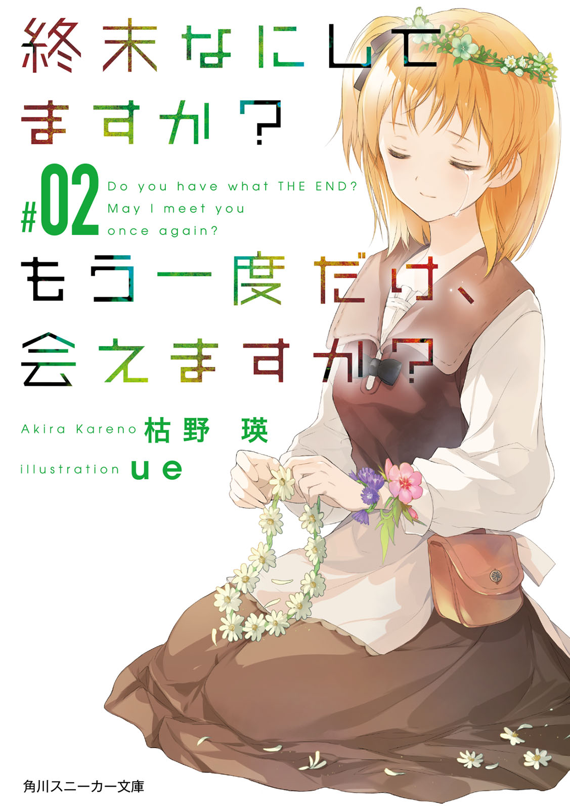
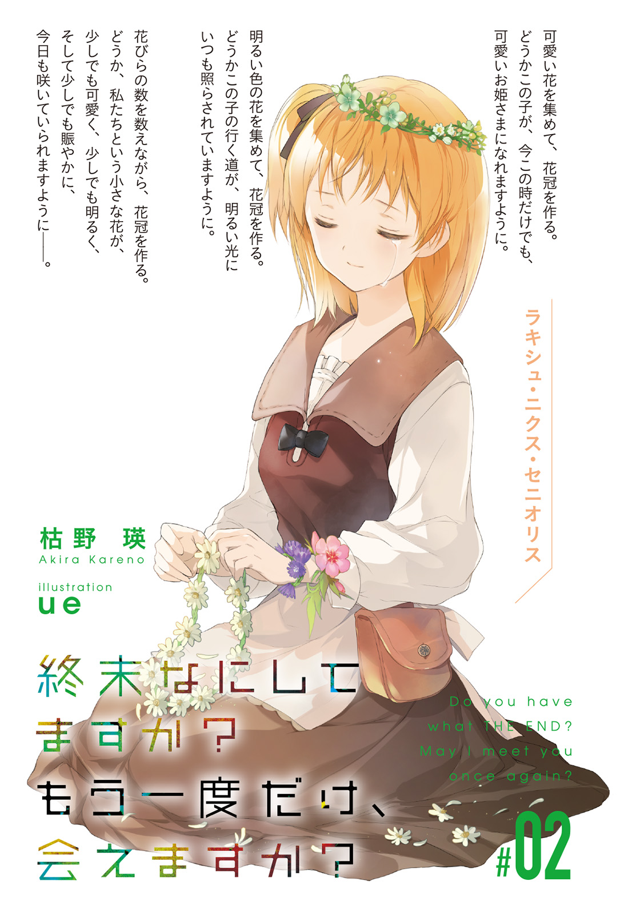
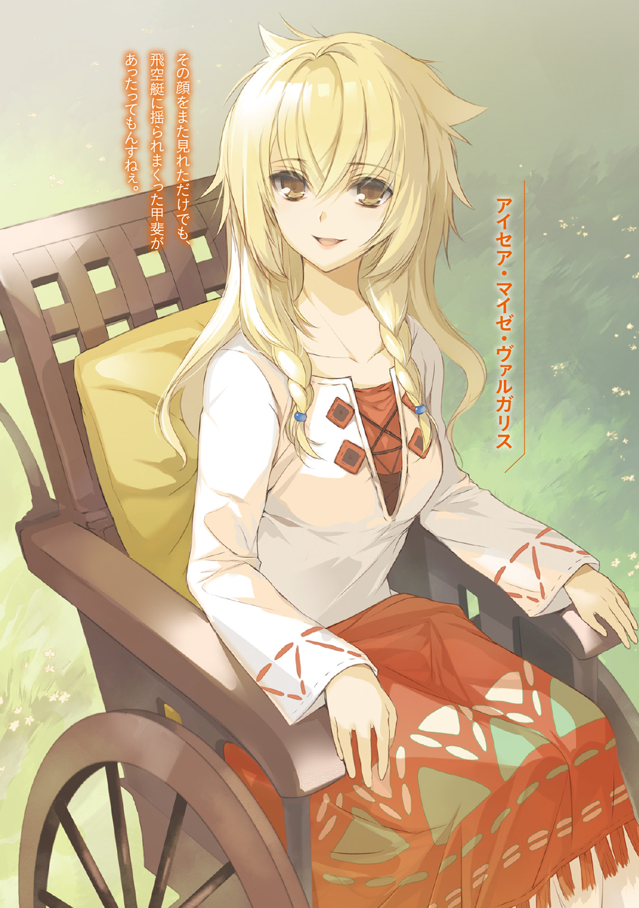
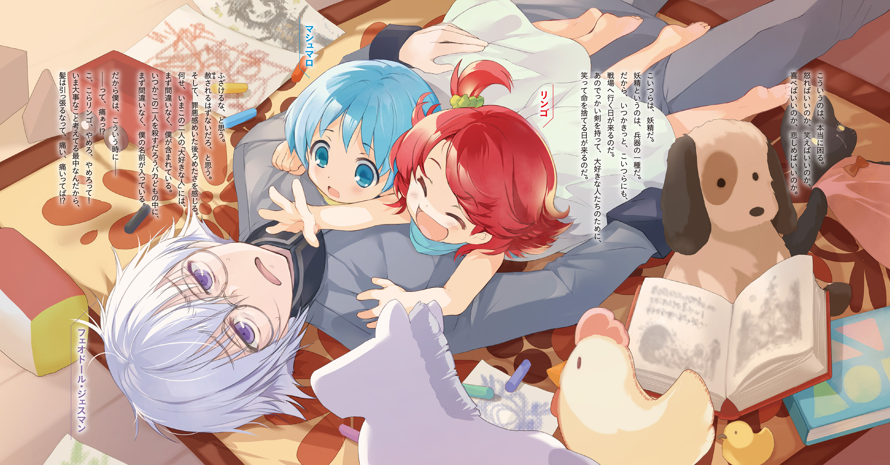
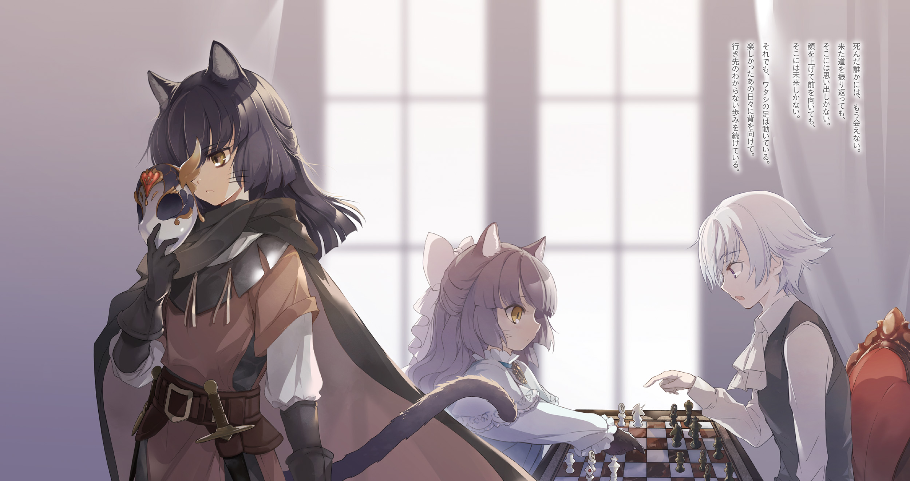
終末なにしてますか？ もう一度だけ、会えますか？#02
枯野 瑛

角川スニーカー文庫
本作品の全部または一部を無断で複製、転載、配信、送信したり、ホームページ上に転載したりすることを禁止します。また、本作品の内容を無断で改変、改ざん等を行うことも禁止します。
本作品購入時にご承諾いただいた規約により、有償・無償にかかわらず本作品を第三者に譲渡することはできません。
本作品を示すサムネイルなどのイメージ画像は、再ダウンロード時に予告なく変更される場合があります。
本作品の内容は、底本発行時の取材・執筆内容に基づきます。
本作品は縦書きでレイアウトされています。
また、ご覧になるリーディングシステムにより、表示の差が認められることがあります。
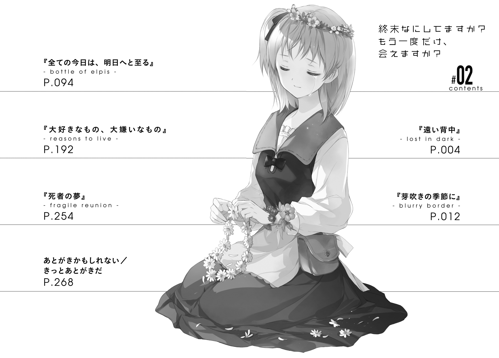
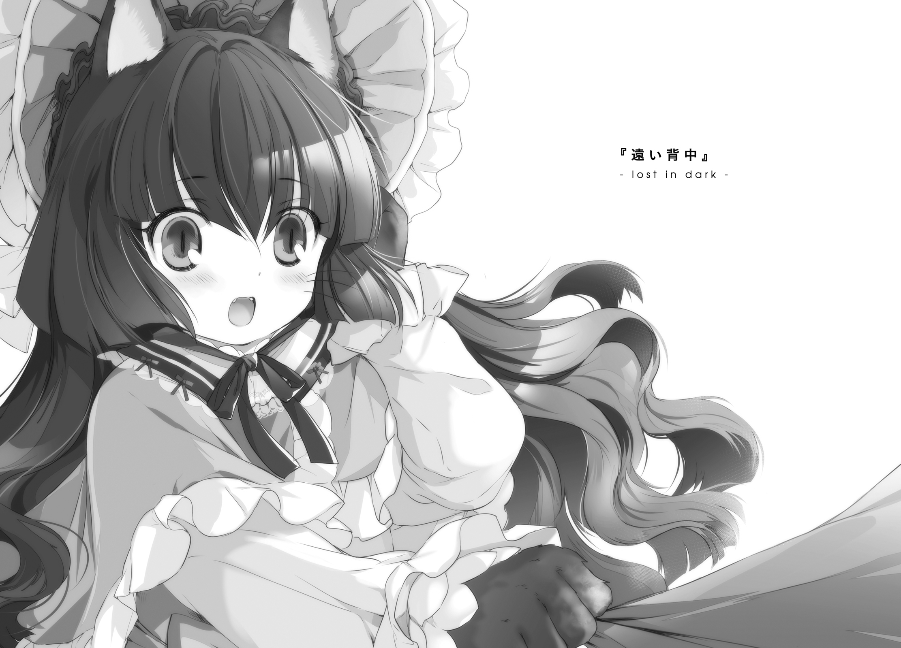
街が燃えている。
見慣れた何もかもが、炎の舌に巻かれ吞まれていく。
そこは、つい先ほどまでは、上層住宅街だった場所だ。この裕福なエルピス集商国の中でも、特に富んだ者だけが住まう、持てる者たちの園が広がっていた。それが、見る間に失われていく。
白や赤や青に塗られていた屋敷たちが、次々と同じ黒へと染まり、その形すら失い崩れ落ちていく。常緑樹の並木道だったものは、今や、巨大な松明の行列に照らし出された光の道だ。
「──うそ」
火の粉の舞い散る広場の隅で、フードをかぶった小柄な人影がひとつ、ぺたりと力なく腰を落とした。
「うそ、だ、よね？」
光だけで瞳を焼きそうな炎の中を、まっすぐに見据えている。
まばたきひとつせず、呆然と、失われていくものを見つめている。
そうしている間にも、炎は凄まじい勢いで勢力圏を広げていく。
一匹の〈獣〉が、この浮遊島に解き放たれたのだ。
その名は〈広く包み込む五番目の獣〉。粘度の高い液体の塊で、足もないくせにゆっくりと動き回る。そして強酸か何かのように触れた生物をことごとく溶かしてしまう。
ただしそれは、ここからだいぶ離れた場所でのことだ。そして〈五番目の獣〉の侵攻速度は、決して速いものではない。この街もそのうち吞み込まれることにはなるだろうが、それはもう少し先の話。時間は残されている。
「邪魔だ！」
大荷物を抱えた獣人の男が、先の小柄な人影を激しく突き飛ばした。
悲鳴をあげて、石畳の上を転がる。仕立ての良い外套が、たちまち煤と泥とで汚れる。
大勢の人々が、走り回っている。
その目はほぼ例外なく恐怖に血走り、口々にわけのわからない悲鳴やら誰かの名前やら祈りの言葉やらを叫んでいる。大荷物を背負う者あり、徒手の者あり。他人を押しのけかき分けるように、誰よりも早く一歩でも先に、港湾区画へ、飛空艇へ、この浮遊島の外へ。〈十七種の獣〉が空を飛びまわれないことは、空に生きる者の誰もが知る常識だ。空の上に出てさえしまえば、〈広く包み込む五番目の獣〉は追ってこられない。
混乱と狂騒に駆り立てられた彼らには、足もとが見えていない。
何度も何度も、小柄なその人物は、ボールのように蹴りまわされた。
悲鳴すら、全てが足音と怒声とにかき消された。
やがて、広がる炎に追い立てられるようにして、人々の姿が辺りから消えた。
ぼろきれのようになって石畳に這いつくばっていたそれが、震えるようにして、半身を起こす。
外套のフードがちぎれてなくなり、隠されていた素顔が露わになっていた。
子供だった。
頭の上には、三角形の黒い耳。頰には細く長い三対の髭。獣人の血が混じった家には、それなりに稀にではあるが、このように薄く徴を顕した子供が生まれてくることがある。
その子は、炎の彼方を、つい先日まで日常があった場所を、再び呆然と見上げる。
「──おい、大丈夫か！」
耐火布を被った緑鬼族が一人駆け寄ってきて、ぼろきれを抱え起こす。
苦痛に顔をしかめ、小さく悲鳴を漏らす。
「触るぞ」
厳しい顔の緑鬼族の手のひらが、外套だったものの上から子供の体を探る。ぐにゃりという手ごたえ。どうやら、あちこちの骨が折れている。急いで手当てをしなければ確実に命を落とすだろう重態だ。
「放......して、くだ、さい......」
力の入らない手で、ぐっと、緑鬼族の腕を押し返す。
「お、おい？」
「行かないと......ダメ、なんです......だって......」
「おい、無理すんな！ あっちはもうダメだ、近づける場所じゃねー」
「ダメでも、行かないと、なんです......」
石畳の上に、立つ。
ふらつきながら、炎に向かって、歩き始める。
「だって......今日は、会える日の、ハズなんです......」
すぐに限界を迎える。膝が折れる。左肩から崩れ落ちる。
「会わないと......会って、あやまらないと......」
「あーったく、だから無理だっつーの！」
緑鬼族が、再びその子供を抱き起こす。
痛みか、疲労か、別の何かか、それともそれらの全てか。子供は気を失っていた。
緑鬼族は舌打ちすると、自分がかぶっていた耐火布で、その子をくるむ。
もちろん彼は気づいている。〈獣〉の脅威はまだこの市街から離れたところにある。だから当然、今ここで燃え盛っている炎は、〈獣〉の襲撃とは直接の関係がない。かといって、この火の回りの速さからして、ただの事故とは考えられない。
まず間違いなく、わざと火を放った者がいたのだ。
悪意をもってこの惨劇を引き起こした誰かが、いたのだ。
ここは上層住宅街で、富める者たちの街だ。ここに住む者たちに対し、あまり良く思っていなかった人々は決して少なくないだろう。その中の誰かが「どうせすぐに〈獣〉に吞まれて全てが無くなるんだ」「早いか遅いかの違いだ」などと軽い気持ちで松明を放り投げた──おそらくは、そんなところだろう。
「気分悪ぃな、全く」
緑鬼族はうめくように吐き捨てると、傷だらけの子供を背に乗せた。
「フェ......ドー......」
意識のないまま、うわごととして、その子供は誰かの名前を呼ぶ。
「ワガママ......言って......ごめんな......さい......あやまる、から......だから......」
緑鬼族は顔を伏せ、ここにいない誰かに向けての言葉を、聞かないふりをする。
子供を背負い直し、港湾区画に向けて歩き出す。
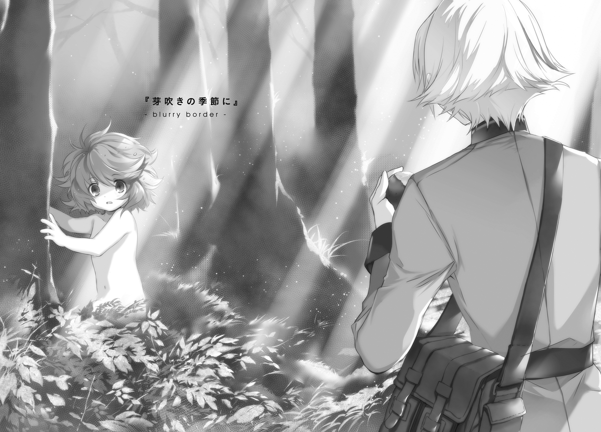
１．ある老人の死
その日、ひとりの老人が、死んだ。
ライエル市北街区、地下用水制御旧施設。この市が銅板と螺子を積み重ねて成長を続けていたころに作られ、別の施設に役目を奪われた後には閉鎖された、歴史と時代の隙間に取り残された小さな空間。
その片隅で、この世界に一言も遺すことなく、老人は眠るように息を引き取った。
この街とともに在り続けてきたすべての年月を頰に刻み、満たされた微笑みを口元に浮かべていた。ずっと歩き続けてきて疲れたからと、少しだけ腰を下ろして休むだけだと言わんばかりに。
その死を看取る者は、誰もいなかった。
埃と錆にまみれた旧世代の機械たちが一瞬だけかすかな駆動音を響かせ、すぐにふたたび沈黙した。
そして、二度と動き出すことはなかった。
『発条ヒゲのじいさん』と言えば、思い当たる者も多いだろう。ライエル市の誇る名物じいさんだ。小柄でやせぎす。伸ばしっぱなしの白い髭。ぼろぼろで薄汚れた作業着。ライエル市のあちこちにふらりと現れては、放置されっぱなしの機械仕掛けを黙々とメンテナンスし、去っていく。
昔は高名な技術者だったのではないかと言われている。が、今はただの変人だ。
本名は不明。身よりもない。知り合いだという者も名乗り出ない。
誰とも、一言も話さない。もちろん報酬を要求することも、受け取ることもない。ただ黙々と、そこにあるものを直すだけ直して、姿を消すのだ。
都市伝説の類だという者もいる。お化けか、妖精の一種だという者もいる。そのくらいに浮き世離れしていて、かつ、このライエル市に当たり前に馴染んだ存在だった。
遠い昔に地上で滅びた土竜人の血を薄く引く、最後の生き残りだったという噂がある。もし事実としたら、これは大した悲劇だ。五百年以上の間を越えてかろうじて繫がってきた血脈が、ついに途絶えてしまったということになるのだから。むろん真偽は不明で、今となっては確かめるすべもない。
そんな孤独な老人の死の意味は、いまだしばらく、表れない。
２．逃走者と追跡者
名前は忘れたが、昔の人が言っていた。
女に追いかけられるのは、誇るべき男の勲章だ。
後世の誰かが、その言葉に付け加えた。
勲章を受け取る以上は、命懸けの戦いになるのは覚悟しとけ。
そんなこんなで、フェオドール四位武官は走っている。
第五師団兵舎の廊下である。
見事な走りっぷりである。木張りの廊下を靴底で柔らかく踏みしめ、音もなく狭い通路を駆け抜ける。時折軍服たちとすれ違っては、その驚く顔が背後に流れていくのを見送る。堕鬼種という種族は、実は逃げ足にも定評がある。
視界の隅を、壁に貼られた『走るな』の壁紙が横切っていった。心の中だけで頭を下げる。ごめんなさい緊急事態なんです今だけは許してください。
「待、ち、な、さぁーいっ！」
追手の少女が声を張り上げた。
年は十代半ば、女性兵用の略式軍服を着ている。大股を広げた、あまり上品とは言えない走り方。どどどどと迫力ある足音は、まるで土煙を立てて疾走する馬車のようだ。そうして一歩を駆けるたびに、癖の強い若草色の髪がふわりと揺れる。
「待てって、言ってるでしょーが！」
そう言われたところで、もちろんフェオドールの足は止まらない。待てと言われた程度で待てるような状況なら、そもそも最初から逃げ出したりはしないのだ。
目前に、曲がり角が迫る。
しめた。フェオドールは、死角へと体を投げ出すようにして、角を曲がる。
もちろんそれで逃げ延びられるというわけではない。ほんの数秒、追手の視界から消えることができる、ただそれだけだ。
そして、それで充分だった。
「逃、が、す、かぁ──」
消えたフェオドールの背を追い、少女が角へと飛び込んで、
「──あれ？」
戸惑いの声とともに、足を止めた。
そこに、彼女が追っていた少年武官の姿はなかった。
代わりに、橙色の髪をした少女が一人、驚いたような顔で立ち尽くしていた。
「ラキシュ！」
追跡者の少女ことティアット・シバ・イグナレオは、同僚にして家族であるラキシュ・ニクス・セニオリスの肩を勢いよく摑む。
「ひゃっ!? ど、どうしたの？」
「フェオドールいまここに来たでしょ、どっちに逃げた!?」
ぐいと、力強く詰め寄る。
「え？ ......え、と」
ラキシュの視線が泳ぎ、廊下の先を示す。
「わかった、あっちね──」
ティアットは一度頷いてからそちらの方向に向き直り、改めて走り出す......と見せかけ、突然ラキシュの背後にあった扉に手を伸ばすと、大きく開け放った。
無人の物置。
ごっちゃりと積み上げられた生活用品。濁った水を煮詰めたような、何とも言い難い臭いが漂い出す。
「む、ハズレか」
「え、と......ティアット？」
「いやほら、ラキシュは優しいから。あいつをかばったんじゃないかなって、ちょっと思ってさ。疑ってごめん」
んじゃ、と片手を振って、今度こそティアットは走り出す。どどどどど。年頃の女性にあるまじき迫力ある騒音が遠ざかっていく。
ラキシュはぽかんとした顔でそれを見送る。
やがてティアットの背中が完全に見えなくなった後になって、はっと我に返る。
「......あの。行きましたよ、フェオドールさん」
声をかけた先は、開かれた扉とは反対側。兵舎の中庭に面した窓のほうだった。
「いや危ないところだった、助かったよ」
窓枠を越え、頭に新緑色の葉っぱを数枚載せたフェオドールが顔を出す。
「助かった、はいいですけど」ラキシュは困ったような顔になり「今度はあの子に何言って怒らせたんですか？」
「あーっと......ちょっと話しづらいというか、どうでもいいというか」
「教えてくれないと、ティアットを呼びますよ？ わたし、あの子の味方ですから」
「うっ」
どちらかというと気弱な娘であるラキシュにしては珍しく、強い口調。
これはどうやら逃げられないと悟り、フェオドールは頭を搔いた。
「クッキーとビスケット」
「......え？」
「チョコレートに漬けて食べたらどっちのほうがおいしいか、って話。僕はクッキー派で、ティアットはビスケット派」
ぷっ、とラキシュが小さく吹き出した。
だから言いたくなかったんだ、とフェオドールは小さくぼやいた。
「まったくさ、お菓子のことくらいでひとを追いかけまわすなんて、あいつも心が狭いよ。そう思わない？」
「......そういうフェオドールさんも、追いかけまわされても意見を変えなかったってことですよね？」
「え。だっておいしいよね、クッキー」
口元を隠したラキシュが、横を向いて笑いをこらえる。
「......ティアットは、お姉さんなんです」
唐突なことを、言い出された。
「先輩たちが妖精倉庫からいなくなって、最年長になっちゃって。実戦経験なんてほとんどないのに、小さな子たちのお手本にならなくちゃいけなくなって。立派でいよう、頼られる自分でいよう、ってずっと気を張ってて」
その話は以前にも聞いた。
「ええと？」
「だから、ずっと、ケンカ友達がほしかったんだと思います」
「......ええと？」
よくわからない。
「僕は別に、彼女と友達になった覚えはないんだけど。それに、君たちだって友達同士なんだから、たまにケンカくらいするんじゃない？」
「友達とケンカしたい、じゃないんですよ。ケンカ友達がほしい、です」
「いや、やっぱり意味わからないから」
「そうですか？」
ラキシュは少し考えて、
「じゃあ、わからないままでいいんですよ。今のままのフェオドールさんで、ティアットのこと、よろしくお願いします」
「いやちょっと待って。どういう文脈でそういう結論になるのかわからない」
「だから、わからないままでいいんです」
「そこが納得できないって話をして──」
「見ぃつぅけぇたぁ！」
廊下の隅にティアットが姿を現している。
獲物を追いつめた狼のような、ちょっと気合いの入りすぎた形相。
仮にも年頃の女の子として、ほんとそういうのはどうなのか。
「やば」
「そこ動くなぁ！」
ティアットが走る。
フェオドールも走り出す。
季節の風のように、二人が廊下を駆け抜けていく。はたはたと揺れる自分の後ろ髪を指先で押さえつつ、ラキシュはまた、くすくすと笑う。

誰もが、知識としては知っているように。
誰もが、実感としては忘れかけているように。
世界はかつて一度、滅びかけて。
そして今も、滅びに向かって歩み続けている。
理不尽がそのまま形を得たような殺戮者の群れ、〈十七種の獣〉が地上に現れたのは、今からずっと昔のこと。
当時地上に栄えていた人間という種がまたたく間に滅ぼされた。竜やら古霊やらといった強大な力を持っていた種族が、あっさりとその後を追った。かろうじて生き残った者たちも、本来の住処を追われ、空を飛ぶ島々の上へと追いやられた。
幸い、〈獣〉たちの中に、自在に空を飛ぶ種はなかった。地上に降りようとしない限り、〈獣〉の脅威にはほとんど怯えずに生きていける。だから生存者たちは、自分たちに残された小さな世界を浮遊大陸群と名付け、そこで暮らし始めた。
それから、長い時間が流れた。
薄氷の上を歩むような時間だったはずだ。
空の上は比較的安全だとはいえ、〈獣〉の脅威から完全に守られていたわけではなかった。何かをひとつ間違えれば、保留になっていた最後の大殺戮が、空の上で再開されてもおかしくない。剣を持つ者たちは死にもの狂いで、穴だらけの平和を築き続けた。継ぎはぎだらけの平穏を取り繕い続けた。
そういう世界で、五百年以上の時間が流れた。
人々は、平穏に慣れた。
なんだかんだ言って、何百年もの間、浮遊大陸群は健在だったのだ。ならばこれから何百年が経っても、どうせ沈まないに違いない。そんなことを、多くの者が考えるように、なっていた。
きゃははははは、という甲高い笑い声。
白いのっぺりとした顔が、いくつも並んで通りを駆けていった。
幽鬼の群れ、という言葉が脳裏に浮かんだ。一瞬ぎょっとなって、フェオドールは慌てて振り返る。果たしてその人影たちは、童話に謡われる霧の幽鬼たちのように、陽光に溶けて消えてしまったりはしなかった。
そこにいるのは、何の変哲もない、獣人の子供たちの後ろ姿だった。そして、先ほどフェオドールの肝を冷やしたあの白い顔は、どうやらただの仮面であったらしいという、当然の現実だった。
オーペンヒルト西錠前通り、ちょっと陽の傾きかけた時刻。
「ああ──」
取り落としかけたミルク缶を抱え直しつつ、フェオドールは呟く。
一瞬とはいえ、あんなものに驚かされたことを悔しく感じながら、
「もう、奉謝祭の時期なのか」
「奉謝祭？」
隣を歩くティアットの問いに、そうだよと軽く頷いてみせる。
「あー、君たちの島のほうじゃ、やってないのかな？ この辺りの浮遊島では、もうすぐ、そういうお祭りをやるんだよ」
ちなみに正確な名は、準ディドルナチカメルソル奉謝祭、である。
創始者である聖人の名前をとったものらしいが、長くて読みづらくて覚えにくい。だから皆、「奉謝祭」としか呼ばない。大雑把に説明するならば、それは20番代の浮遊島を中心にした広い範囲で続けられている祭事だ。
いわく。死の季節である冬が終わり、生誕や再臨の季節である春が来た。つまり、この終わりかけの世界が、まだ無くなり終わっていない。それはとても喜ばしいこと。だから皆で祝おう......とまぁ、もともとはその辺りがお題目だったはずだ。
「面白いお面だったけど、あれって石彫り？」
ティアットが、クッキーをかじりながら尋ねてくる。
先ほどの言い争いが、「おいしいチョコレートクッキーをごちそうしてくれたら納得してやろう」というところに落ち着いたのだ。どうして向こうが譲歩しているかのような言い方になっているのか、釈然としないところはあるが、そこは飲み込んでおこう。
「いや、木製だよ。白い絵の具を塗り重ねてあるだけ。奉謝祭の時期が終わったら、まとめて火にくべるんだ。死者ときっぱりお別れするためにね」
「死者？」
ティアットがまた疑問を投げてくる。
「冬と春の境の季節には、死者と生者の世界も混ざり合うって考え方なんだよ。死者は顔も名前も失っているからそのままじゃ交われないけど、生者のほうも同じように顔と名前を隠してしまえば立場は同じ。本来会えないはずの死者たちと一緒に、春の訪れを祝うことができるって寸法さ」
フェオドールは肩をすくめ、皮肉を込めて笑う。
「どこにでもありそうな迷信だよ。大事なのは、胸を張ってお祭り騒ぎができること。必要なのは、その騒ぎを正当なものにしてくれるだけの大義名分、ってね」
「へぇ......」
隣を歩く少女は、いまいちニュアンスの読み取りづらい、曖昧な声を出して頷く。興味があるのやらないのやら。
「どこで売ってるの？」
「あちこちで。この時期になると、服屋とか靴屋とかの棚の端にあの仮面が並ぶんだ。ひとつひとつ細かい模様とかが違うし、もちろん種族ごとに顔の形も違うしで、好みのやつを見つけようと思ったら色んな店を歩いて回る必要があるけどさ」
「へぇー」
先ほどまでより、ちょっとだけ色の濃い返事。
「欲しいんだったら、今から何軒か寄ってく？」
「んー......面白そうとは思ったけど、やっぱ、ちょっと微妙かな」
「そうなの？」
「生きてる人が、死んでる誰かと会いたいっていう願いのためにかぶるものなんでしょ？ だったら、わたしたちが参加しちゃいけないと思うし」
「またその理屈か」
うんざりと、フェオドールは呟いた。
いわく、彼女たちは妖精である。そして妖精とは正しく「生命」として在るものではなく、死者の魂がフラフラ迷い出てきただけのものである。ならば、生死が交わる祭りに、生者の側の立場として参加するのはおかしい......とまぁ、ティアットが言わんとしているのはそういうことだ。
そして多分その考え方は、少なくとも間違ってはいないのだろう。
けれど、正しい理屈であれば誰もが納得するというわけではない。少なくともフェオドールは、あまりに彼女たち以外にとって都合がよすぎるその理屈のことを、まったく全然これっぽっちも認めていない。
もちろん、知識としては受け入れているつもりだ。幼くして死んだ、まだ生命としての自分になじみきっていなかった子供の魂が、ふらふらと迷い出た結果として発生するただの自然現象だ。気圧とか湿度のアレコレの結果として発生する雨風や嵐と同じカテゴリーのものなのだ。だから、それこそ雨風のように、条件さえ満たせばどこにでも湧いてくる。
しかしだ。雨風はドーナツを食べないし、剣を振り回さないし、偉大なる先輩に憧れたりもしないし、泣きながら死地に向かうこともない。フェオドールは、彼女たちのそういうところを知っている。だから、「彼女たちは生命ではない」という大前提を、うまく飲み込むことができていない。
「やっぱり気に入らないな、そういう考え方は」
「知ってる。でも、別にわたし、きみに気に入られたいとか思ってないし」
しれっと言われた。
「世間一般的には、上司の機嫌はとっとくべきものとされてるよ」
「んー、それはそうかもしれないけど」少し考えて「上機嫌なきみって、あんまり見たいと思えないし。それで何か便宜図ってくれるほど気前いいとも思えないし。総合的に考えて、やっぱないかなって」
まるで天気の話でもするように、さらっと嫌みなく言われた。
「嫌われてるなぁ、僕......」
「うん、そうだね」
にっ、とティアットは少し意地悪く、歯を見せて笑う。
「大嫌いだよ、きみの事」
──ちぇ。何だよ、それ。
堕鬼種は、噓つきの一族だ。これは、自分で噓を組み立てる際の手際だけの話ではない。他の種族の者が語る言葉の中からも、巧みに虚偽を嗅ぎ分ける。
今のティアットの言葉に、噓はなかった。
どこまでも素直に正直に、彼女は「大嫌い」と口にした。
とても親し気で。
とても好意的で。
とても楽しそうな。そんな、心の底からの「大嫌い」だった。
（僕も──）
思わず、返しそうになる。
（僕も、そんな君のことが大嫌いだよ）
けれど、それを声に出して伝えても、負け惜しみにしかならないような気がした。
だから、言葉はまるごと飲み込んだ。
このライエル市は、死にかけの街だ。
何せ、遠からず浮遊島ごと滅びることがほぼ確定している。
それゆえに住民たちのほとんどが他所の島へと逃げ去った。かつて鉱山の街として活気に満ちていたのも今となっては遠い昔の話。今ここにあるのは、まだかろうじて無人の廃墟にはなっていないという程度の寂しい街並みだけだ。
しかし、死にかけというのは同時に、まだ死んでいないということでもある。
ライエル市は、今もまだ、都市である。その体裁を保てているかというと微妙なところではあるし、どうあれ先が短いことに変わりはないとはいえ、今はまだ廃墟になりきってはいない。大きく数を減らしたとはいえ、人口がゼロになったというわけではない。都市機能の多くは、勤勉なる自律人形たちによって維持されている。日の本数こそ減ったが公営の飛空艇は変わらず巡回しているし、人も物資も細々と動き続けている。
半月ほど前のことだ。
そのライエル市の港湾区画の半分近くが、放棄されるという事件が起きた。
港湾区画は、各浮遊島に設けられた、飛空艇を接舷させるための設備である。平たく言えば、浮遊島の玄関だ。大原則として、飛空艇というやつは、各浮遊島の港湾区画にしか発着できないようにできている。だからどんな人も物資も、港湾区画を経由しないと出入りができない。超重要施設なのだ。
その機能が半ば失われるというのは、つまり、よその浮遊島とのつながりがごっそりと減ったということに他ならない。通常の都市にとってはそのまま生死を分けることになる大問題だ。
不幸中の幸いと言うべきだろうか。ライエル市は、生死を分けるまでもなく、そもそも死にかけている。飛空艇の発着回数は既にギリギリまで減っていたし、物資の流通が多少滞ったところでそれでどうにかなるほど健全に経済が回っているわけでもない。
終わりの時を待つ街は、多少の傷を負った程度で、今さら怯えも騒ぎもしない。
眠るような静けさと穏やかさを湛えたまま、今日も変わらず、ここにある。
また、白い仮面の集団と、道をすれ違った。
「............ん？」
ふと足を止めて、振り返る。
自分でも、なぜそんな反応をしたのか、いまいちわからない。
怪しい一団だということは、今さら言うまでもない。祭りの近づくこの時期、怪しいというだけの者であればそう珍しくもない。その辺りの事情は、そもそもの人通りの少ないライエル市内であっても変わらない。
生者が被る、死者に近づくための、白い仮面。それはかぶる者の素顔を隠し、素性を覆い、正体を塗り潰して、「誰だかわからない誰か」に仕立て上げる。そうしなければ生者は死者と共にはいられない。
くだらない迷信だと思う。その意見を変えるつもりはない。けれどひとつだけ、納得せずにはいられない理屈が混ざっていると思った。仮面をかぶった者たちは事実、正体不明の「誰か」になる。仮面が街中にあふれだした今、ここにはそういう「誰か」が大勢──と言えるほどの人はそもそもこのライエル市にはいないが、とにかくそれなりの数──うろついているということになる。
「ほひたの？」引き続きクッキーをかじりながら、ティアットが振り返る。
「......前に憲兵科が、何か言ってたよね。例の事件で港湾区画が半壊したから、今後の運用のために、ここ半年くらいの運行記録を整理し直したって」
「あ、うん......言ってたけど」
港の数が多ければ、どうしても、その中には管理がずさんな場所も出てくる。そういうところを利用して、違法に物資をやりとりするような連中も出てくる。
「改竄の痕跡が多数見つかった。そのへんを修正して数えると、入ってくる人数と出ていく人数のバランスがおかしかった、らしいよ。明らかに、入ってくる数のほうが多かったって」
「そりゃそうでしょ、もうすぐ沈むかもとか言われてる街なんだから、入ってくる人なんて──え？」
ティアットの手から、クッキーの紙袋がすべり落ちそうになる。
「え？ どういうこと？ 人が増えてるってこと？」
「そうだね。それも、わざわざ書類をごまかしながら、こっそりとね」
「えー......もしかしてここ、隠れた人気スポット？ 実は密入国してでも住みたい街ナンバーワンだとか」
んなわけが、ない。
ライエル市は、終わりかけている街だ。ここ何年かの間、少しずつ活気を失い、無人の廃墟へと近づき続けてきた。そして、フェオドールの記憶にある限り、少なくともこの半年の間に、人が増えたなどと実感するようなタイミングはなかった。なじみのパン屋もひとつまたひとつと看板を下ろす一方で、新しく開く店など、まるで見かけなかった。
だからきっと、新しくこの街に来たというその連中は、表通りを歩いていないのだ。ドーナツを買い食いしてパン屋の経営を支えたりもしないのだ。
誰だかわからない連中が大勢、この機械仕掛けの街並みの陰に生きている。
（姉さんも、その中に交ざってた......んだろうな）
先日会ったばかりの、銀色の髪の女──血のつながった実姉のことを思い出す。あれは実に堕鬼種らしい堕鬼種だ。性格がひねくれ曲がっている。噓に長け、逃げ足が速く、そして......それゆえに、策謀や陰謀の類をとにかく得手とする。彼女はここで、何を考えて何を狙って何をしていたのか。
「で、それがどうかしたの？」
「いや」
姉の件はともかく、怪しい連中の脅威について考えることのほうは、憲兵科の連中の仕事だ。フェオドールには関係ない。
いやな予感を覚えているのは確かだが、それだけを理由にして勝手に動きだすわけにはいかない。ついでに言うなら、それほど暇なわけでもない。
怪しいやつらがいるかもしれない街を、どこの誰だかわからない連中が歩いている。言ってみれば、今の状況はただそれだけのことでしかないのだから。
３．林檎とマシュマロ
市の外れの森の中から、最近、小さな子供の泣き声が聞こえるのだという。
いわく、放っておいても泣き止まない。
かといって、森に入っても当の子供の姿が見つからない。
「泣き声は遠く、市内に実害が出ているというわけでもないが、どうにもこうにも気味が悪い......ということだそうだ」
そこまで説明を終えて、護翼軍第五師団総団長である被甲人の一位武官は「どうだ？」とばかりにその場の全員の顔を見渡した。
「んー、みんなはどう思う？」
思案顔で、若草色の髪の少女──ティアットが改めて全員に問う。
「状況からして、可能性は高いと見ていいだろうな」
澄ました顔で、紫色の髪の少女、パニバルが頷いた。
「急いで確認しないと。いないならいないでいいけど、もしいるなら、早く迎えに行ってあげたいし」
心配そうな顔で、ラキシュが意見を述べた。
「うむ、ほかく大作戦だ！」
元気よく宣言しつつ、コロンが腕を高く掲げた。
「......あのさ」
そんな少女たちから少しだけ離れたところで、フェオドールが遠慮がちに手を挙げる。
「四人だけで分かり合ってないで、僕にも説明してくれないかな。今の説明だけで、何かがわかったってこと？」
「えー」
あからさまにティアットが面倒くさそうな顔になった。この反応は概ねフェオドールの予想通りである。彼女には最初からフレンドリーな対応を期待していない。
「おお、わすれていた！」
悪びれもせず、コロンがにかっと笑った。
「いやすまない、君は既に身内のような気がしていたんだ」
はははと楽しそうに笑いながら、パニバルがフェオドールの背をぱんぱんと叩いた。この二人の対応もまた想定通り。
「えと、その......森の中に同族がいるかもしれない、ってことなんです」
申し訳なさそうに何度も頭を下げつつ、ラキシュが説明を始めてくれた。これは予想通りというより期待通り。
奇人揃いの四人娘の中で、この子だけはまっとうな社交性の持ち主である。他の三人のやらかす滅茶苦茶のフォロー役でもあることだし、ちゃんとコミュニケーションをとってくれるだろうと信じていた。
さて、問題の話の内容のほうだけれど、
「同族」
「はい、黄金妖精です」
少し考える。
「ごめん、よく意味がわからない。それってつまり、どういうこと？」
「わたしたちの妹が生まれてるかもしれないから、迎えに行きたいってことなんです」
付け加えられた説明を念頭において、もう少し考えてみる。
......うん、やっぱりよくわからない。
「ふむ。やはりそういうことか」
ここまで沈黙していたこの部屋の主、護翼軍第五師団総団長が、甲羅に覆われた頭を重々しく上下に振った。
「通常なら、専門の捕獲呪術師が勝手に押しかけてきて勝手に調査をして勝手に捕獲していくんだがな。今回の場合はお前たちに......」
視線を向けられた少女たちが、一様に頷く。
「任せて良いようだな」一位武官もまた深くうなずいて、「ではフェオドール・ジェスマン四位武官、改めて君に、現状確認の任務を与える。もし新たな黄金妖精が発見できたならば速やかに確保し、連れ帰るように」
なるほど、そういうことになるのかと思う。
何をすればいいのかはさっぱり分かっていないけれど、それでもフェオドールはこの四人娘の上司であり監視役だ。この四人がやるべき仕事があるならば、それはフェオドールに対しての命令という形で下されることになるだろう。
「了解しました」
内心うんざりとしていたが、もちろんそんなものは表に出さない。いつも通り、精巧に作られたポーカーフェイスの裏側に、厳重にしまい込む。
「フェオドール・ジェスマン四位武官、現状確認の任務に取り掛かります」
おおよそ三時間後。
問題の森の外縁部。ライエル市の一部を見下ろせる、ちょっとだけ小高い場所。
「ふわあぁ......あ」
手近な切り株に腰かけ、フェオドールは大きなあくびを空に放る。
森の中へは、あの妖精たち四人だけが入っていった。
お伽噺に出てくる妖精についての記述には、ときどき「純真な心を持った子供にしか見えない」という一文が出てくる。これはハッタリでも雰囲気作りでもなく、事実として妖精というものにはそういう特性があるらしい。理屈はよくわからないが、純粋な心の子供あるいは妖精の同族にしか、本来存在しないモノである彼女たちを存在し始めさせることが難しいのだとかなんとか。
あのあのこれはもちろんフェオドールさんの心が汚れてるとかそういう話じゃなくて念のためにそうしておきたいってだけの話ですからその悪いふうにとらないでください──ラキシュが大慌てでそんなことを言って、ティアットの大爆笑を誘ったりもした。
まぁ、心が汚いという点については自覚もある。どうしても参加したいという強い動機があるわけでもない。もちろん本来であれば監視役として彼女たちから目を離してはいけないのだが、これは色々な意味で今さらだ。だからこうして、森の外での留守番を引き受けることとなった。
しかしこの状況、ゆっくりと考えごとに浸るには悪くない。
（......考えとかないといけないこと、けっこう色々あるしな）
三か月後の決戦に向けた護翼軍の通常任務について。先日の、〈重く留まる十一番目の獣〉の一件の後始末について。護翼軍武官としてではなくフェオドール・ジェスマン個人としては、最近になって市内に増え始めた胡乱な連中のことについても何か手を打っておきたい。それから、西通りの飴屋が出していた季節の新作のチェックも忘れてはいけない。
それから──そう。計画のこと。
フェオドール・ジェスマンには目的がある。他のなにを捨ててでも摑みとらなければならない、夢のようなものだ。フェオドールの五年間は、すべて、そのために費やされてきた──護翼軍に入ったことも、優等生を演じてそこそこ出世してきたことも。
そしてその末に、あの妖精たちに出会った。
目的のために必要だった、護翼軍の秘密兵器というパーツの詳細を、期せずして知ることができてしまった。幸運だったと言っていい。計画は大きく前進し、次の段階へと踏み込むことができた。
次の段階。つまり、あの兵器たちを、手に入れる。
それができないならば、無力化できるような弱点を突き止める。
（まだ時間はある......けど、そんなにのんびりもしていられないか）
内心の焦りを放り棄てるようにして、空を見上げる。真っ青な視界を、名前も知らない白い鳥が横切っていくのが見えた。
「......腹へったなぁ」
なんとなくつぶやいた後になって、実際に自分が空腹なのだと気づく。
ポケットの中を漁ってみたが、口に入れられそうなものは何もない。いつもはこういう時に備えて飴玉を常備しているのだが、今日に限ってたまたま補充を忘れていた。
鞄を探る。
林檎の実がひとつ見つかる。
「これでいっか」
気分としては、もっとがっつり甘味のある菓子類が欲しいところだった。しかし今はそんな贅沢を言っていられる状況ではない。口に入れられるものがあっただけありがたいと思うことにしよう──そう自分に言い聞かせる。
ポケットから取り出した折り畳みナイフをぱちんと開き、皮をむき始めた。刃物の扱いにはそこそこ慣れている。しょりしょりしょりと、赤い皮が細長く伸びてゆく。
かさりと、近くの茂みが揺れた。
「......ん？」
兎か何かだろうかと思い、視線だけをそちらに向けて確認した。
小さな子供──見たところ牙も角も翼も鱗もない、いわゆる徴無しだ──が、草陰から顔を出して、フェオドールの手元へと熱い視線を注いでいる。
「............」
フェオドールは手を止めた。
子供は小さく首をかしげた。
奇妙な沈黙の時間。
おそらくこの子供の中で繰り広げられていたであろう警戒心と好奇心の戦いは、後者の勝利に終わった。再びがさりという音、茂みから立ち上がったその子供は、短い手足を懸命に動かしてフェオドールの足元までやってくると、手元からぶら下がったままの林檎の皮をじっと見つめ始めた。
「............」
ぼさぼさの髪は、明るい赤茶色。
年は──堕鬼種の基準に照らし合わせて、二歳ほどに見える。もちろん、種族が変われば寿命も変わる。こんな推測に大した意味はないのだが。
何も着ていない。全身の素肌を風に晒したままだ。そんな格好で森の中を動き回っていたのなら当然全身が切り傷だらけになりそうなものだが、見たところそういうこともなさそうだ。
ちょっとだけためらいつつ、ちらりと性別を確認する。女の子だった。
「ぅあー......」
ひらひらと手元で林檎の皮を揺らしてやると、幼いその女の子の目も、追いかけるように揺れる。
これは、やっぱり、そういうことなのだろうか。
「......まさか、近所にお住まいの迷子でした、みたいなオチはないよな？」
誰にともなくそんなことを尋ね、少しだけ沈黙してみる。
けれどもちろん、返答など、どこからもない。
改めて、女の子の顔をじっと見つめる。はっきりくっきり、よく見える。
純真な心を持った子供にしか見えないとかいう話はどこに消えたのだろうかと思う。
「悪いけど、あげないぞ。これは僕のおやつだ」
女の子が顔をあげて、フェオドールを見た。
ぱちくりと、まばたきひとつ。
なんだこれ、と視線が問いかけてくる。
まだひとというものを理解する前の幼い子供にとって、風のささやき、水のせせらぎ、人のつぶやき、それらの間に大きな違いはない。何かおかしな音がする、いったいこれは何だろう──ただそれだけのシンプルな興味をもとに、視線はまっすぐにこちらを観察している。
（──子供の相手は、苦手なんだよな）
外面のよさと世渡りのうまさだけで生きる堕鬼種の末裔としては、少々問題のある話かもしれない。けれど、それが、フェオドールの偽らざる気持ちだ。
なにせ、子供の興味というやつは極端だ。連中の世界には、興味を惹かれたものと惹かれないものと、そのふたつしか存在しない。お互いに疲れず手間のかからない「ほどほどの関係」というやつが作れない。
とりあえず作り物の笑顔を見せることはできる。機嫌をとることもできるだろう。しかしうかつにそれに成功してしまうと、懐かれてしまう。付きまとわれてしまう。まとわりつかれてしまう。それは......なんというか、もう、嫌だ。
「森の中に戻りな。優しいお姉さんたちが君を探してるから、見つけてもらうんだ」
できるだけそっけなく、そう言ってやった。
「うぁ？」
反応はない。
女の子の視線はすぐに林檎の皮へと戻った。風が吹いてふらふらと揺れるそれを追いかけて、丸い瞳が左右に揺れる。
ひきつりかけた笑顔を解いて、フェオドールは重いため息を吐いた。言葉の通じない生き物に対して、噓吐き鬼の武器はさっぱり役に立たない。
どうしろって言うんだよ、もう。
誰にともなくそんな文句を呟きながら、皮むきを再開。しゅるしゅると伸びる皮。女の子の視線に熱意がこもる。
「あげないからな」
役に立たなかった笑顔をひっこめて、冷たく言い放つ。
林檎をむき終わる。皮がぽとりと地面に落ちる。
「まったく、あの四人、今どこを探してるんだか......」
ここだよここ。話題の新人はここにいるんだよ。
愚痴のようにして、小声で呟く。
ひしっ。小さな手に、軍服の足をつかまれた。膝によじ登ろうとしてくる。柔らかくも力強い感触。やたらと高い体温が、布地ごしに伝わってくる。
振り落とそうと思えば、もちろん簡単にできる。けれどそれをしたら、この小さな生き物が怪我をするかもしれない。躊躇がフェオドールの動きを止めている間に、女の子は軍服の膝までの登頂を果たし、短い腕をまっすぐに林檎に向けて──
「って、あ、こら！」
伸ばした手は、しかし虚しく空を切った。
林檎とナイフを持った手を両方とも高く差し上げて、フェオドールは身を反らせる。
「危ないってば、こら、暴れないでくれ、降りてくれって」
訴えたところで、もちろん聞いちゃいない。うぁーうぁーと不満げな声をもらしつつ、フェオドールの胸板に片手をついて、逆の手を懸命に空へと伸ばす。届かない。けれど諦めない。届かない。諦めない。うぁーうぁーうぁー。
「ああもう、無駄なんだから諦めろって」
届かない言葉を、それでも独り言のように繰り返す。と、
「ただいまぁ」
そっけない感じのティアットの声が、背後から聞こえた。
「すみません、お待たせしました！」
慌てたようなラキシュの声が続いてきた。
錆びた歯車を回すような鈍い動きで、フェオドールは振り返る。膝からすべり落ちそうになった女の子が、フェオドールの首にしがみついてくる。
森の出口にはもちろん、今の声の主である四人の少女たちの姿がある。そして、
（あれ？）
ラキシュの胸元には、毛布でくるまれすやすやと眠る、小さな女の子の姿があった。
透き通るような青い髪。年はやっぱり、二歳くらい。
「......ええと、なんかよくわからないことになってるみたいだけど」
半眼になり、口元を軽くひきつらせながら、ティアットが尋ねてくる。
「その子、きみの子？」
彼女は彼女なりに、このよくわからないことになっている状況に混乱しているらしい。要点をまったくとらえていない、実にずれた質問だった。
「......そんな年じゃないよ」
ずれた質問には、ずれた回答。
両腕を高く上げ、首から裸の子供をぶら下げたまま、フェオドールは首を横に振った。
「うぁ？」
至近距離。女の子の赤い瞳が、何かを問いかけるように小さく揺れたのが見えた。
四人が連れてきた青い髪の子供は、もちろん、この森で発生したばかりの妖精だった。
そして、フェオドールにしがみつくこの赤い髪の子供も、やはり同様だった。
一度に複数の妖精が発生するということは、よくあるとまでは言わずとも、それほど珍しい事象ではないのだという。一人が生まれる手順を経て生じる二人分の命。他の種族における双子のようなものだろうか、とフェオドールは解釈した。
「ラーン先輩とノフト先輩も、そんな感じに生まれたらしいしね。って言っても、君にはわからないか」
もちろんその通り。どちらも初耳の名前だ。
「そういうのって、問題とか、あったりしない？ その......よく聞くやつだと、体力を二人で分けあって生まれることになるからどうしても虚弱になる、みたいなヤツがさ」
「んー、大丈夫なんじゃない？」つまらなそうにティアットは答えた「ちょっとはそういう影響もあるのかもしれないけど、だとしても個人差と区別がつけられないレベル」
振り返る。コロンとパニバルが、眠りこけた小さい二人を背負っている。ラキシュがその少し後ろを、微笑みながらついてきている。
「本来の『妖精』は実体がないから、眠ったり食べたりはしないんだって。ああやってぐーすか寝てるってのは、黄金妖精として、しっかり体を持てた証拠。だから、そんな心配しなくても大丈夫」
別に、そんなに心配してるわけじゃないけれど。ただ、少し気になっただけで。
自分が心配するとしたら、そう、もっと別のこと。
「──あの二人も、そのうち、君たちみたいになるの？」
「ん？」
「例のでっかい剣とか持って、死にたがったりするようになるわけ？」
「あー。言い方に悪意感じるなー」
気分を害した風もなく、ティアットはけけけと笑う。
そして結局、質問には答えてはくれなかった。
４．ふぇどーる
いつまでも「あの子」「その子」と呼び続けるわけにもいかない。
あの二人に名前が必要だ、という話をした。
一位武官と四人娘が、揃って黙り込んだ。
何を悩む必要があるのだろう、と思った。名前なんて、当たり前の話だが、しょせん名前にすぎないのだ。それっぽくて分かりやすければ、それでいいはずなのだ。だから、例えば、過去の偉人の名を借りたり、家族の誰かの名をもらったり。
そうだ、と、フェオドールはひとつ提案した。例の、クトリ先輩だっけ、の名前をもらえばいいじゃないか。僕は納得してないけど、立派なひとだったんでしょ？ と。
反応は、気まずそうな沈黙だった。
いわく、妖精に他人の名をつけるのは、タブーであるらしい。
少なくとも、一度別の妖精につけられたことのある名は、決して使ってはならないのだと。理由は、彼女たち自身もよく理解していない。ただ、そういうものなのだと、教えられているらしい。
妖精の名づけは、できるだけ慎重に行われるべきである。その時の妖精たちの最年長者が、過去の記録を精読したうえで、ふさわしい名を決定するべきなのだ......というのが、あまり厳密に守られているわけではないけれど、いちおうの慣習であるのだとか。
そんなわけだから、急ぎ、68番浮遊島にある妖精たちのホームへ、連絡を送った。そして、正式な名前が決まるまでの間に使う、仮の名前を決めようということになった。あまり人の名前らしくない名前。めちゃくちゃ安易で、ニセモノの名前だと言われれば、すぐに納得できそうなやつがいい。
どうしたもんかね、と首をひねる一同の前で、赤い髪の子供が、小さく刻まれた林檎を幸せそうにしゃぐしゃぐと食べている。そして青い髪のほうは、そのやわらかい頰をコロンにぷにぷにとつつかれながら、嫌そうに身をよじっている。
赤いほうの仮の名前は、『リンゴ』に決まった。
青いほうの仮の名前は、『マシュマロ』に決まった。
いやいやいや。いくら安易な名前がいいのだとしても、ものには限度というものがあるのではないかとフェオドールは思った。
そう思うだけで、口にはしなかった。
「君はこれでいいのか、リンゴ」
尋ねたら、よだれと果汁でべたべたになった顔で、きゃっきゃと笑った。
「そっちはどうなんだ、マシュマロ」
こっちを向いて、『なぁに？』と言わんばかりに、小さく首をかしげた。
当事者たちに異論がないなら、これ以上、他所から何かを言うべきでもないだろう。
そもそもフェオドールはティアットたち四人の上司というだけの立場である。この二人の子供は、その四人を伴う任務の課程でちょっと保護することになっただけの、いわば通りすがりの他人のようなものだ。口だしをする責任も権利もない。加えて言うならば、そこまで深入りするつもりも......もちろん、ない。
けれど。
できたら、早いところ68番浮遊島から返事がきて、ちゃんとした名前をつけてもらえるといいな──などと、そのくらいのことは、思わなくもない。
「呼び方が決まらないと、不便だからね」
自分に言い聞かせるように、こっそりと、そう呟いた。
ふと視線を感じて振り向くと、なぜかパニバルがにやにやとこちらを見ていた。
......ただの偶然だろう、と思う。
少なくとも、つぶやきが聞かれていたわけではないはずだ......と信じたい。
いま第五師団が基地としている場所は、もともと公営の学校施設として使われていたものだ。五年前のエルピス事変よりもずっと前、経営の失敗を理由に閉鎖。その際飛空艇工場へと改装されることになるはずだったがこの話は頓挫。その後も色々あって、最終的に護翼軍へと権利委譲されて現在に至る。
つまり、もともと軍が使う施設として設計されたわけではない。
おそらくはそのせいだろうが、軍の規模と施設の規模が、微妙に嚙み合っていなくて、ちぐはぐになっている。その中でも、兵舎は特にひどい。余っている部屋、足りない部屋、手狭な部屋、広すぎる部屋。整頓の苦手な子供が詰め込んだおもちゃ箱のような混沌が、規模こそ違えどほぼほぼ同じようなカタチで、そこにある。
ここにあるのは、もともとそんな感じの理由で使われていなかった部屋だ。そこそこの広さはあったが、入口からの距離があることや上のほうの階にあったことなどが災いし、埃が積もるに任されていた。
その部屋に、一月ほど前に二段ベッドがふたつ運び込まれ、四人の新しい住人がやってきて、生活を始めた。
さらにその部屋に、つい先日、小さな揺りかごが二つ置かれた。
そして、二人の新しい住人がやってきて、生活を始めた。
その部屋にフェオドールが立ち入ったとたん、
「ふぇどーるーっ！」
赤くて小さいものが突撃してきて、下腹にまっすぐ突き刺さった。不意打ちであるという一点を除いても、勢いの乗った、実に良い体当たりだった。腹の中のものが全部飛び出してしまいそうな衝撃。身をよじりながら、食後の時間帯でなくて本当によかったなどと思ったりする。
それから少し遅れて、蒼くてこれまた小さいものが、「ふぇどるー」と後に続いた。てててと駆け寄ってきて、腰に抱きついてくる。先の大砲めいた一撃に比べると、実に可愛らしいものだ。
「リンゴ、君、ねぇ......」
危ないからそういうのはやめろ、と説教をするつもりで名前を呼んだ。
きょとんとした目で見上げられて、その気が失せた。
「......元気なのはいいけど、少し手加減してくれないかな」
「あいぁ！」
めちゃくちゃ元気の良い返事が戻ってきた。それから少し遅れて、「あいぁ」とマシュマロも続く。たぶん、いや絶対に、二人とも話を理解していない。
幼いとはいえ、将来は浮遊大陸群の未来を背負って立つであろう兵士のタマゴ達だ。元気が溢れているということ自体は、喜ばしくも頼もしい。そういう意味では、この状況、前向きにとらえることもできそうな気はするが。
（その元気に付き合うほうはたまったもんじゃないよな......）
持久力にはあまり自信がない。フェオドールが特別に虚弱だというわけではなく、堕鬼の一族という種族自体に、体格や体力との縁がないのだ。
なにせ口車を駆使し他者を利用して生きることが大前提の生き物だ。自分の体を動かすことは基本的に恥だというひねくれた道徳が血に染みついている。いざという時の切り札として剣を修めたりするのはまだ良しとしても、負荷を積み立てて筋肉や心肺を鍛えるということがなかなかできない。困った話だ。
などということを考えながら、
「二人で手いっぱいだ。君は来ないでくれよ、パニバル」
自分の死角に向かって、そんな声を投げる。
「......何だ、駄目なのか」
意外そうな声。本格的なタックルの準備姿勢に入っていたパニバルが、構えを解く。
「どうして許されうると思ったのかを知りたいよ」
「そこはあれだ。君の心の広さを信頼していたのだがな」
信頼。なるほど、とても便利な言葉だ。ははは。
「心はともかく、体のほうはもう満員だよ」
ひしっとフェオドールの腰にしがみついたまま、二人はなかなか離れない。まるで蛇か何かに捕食されている気分だと思った。
「男子たるもの、少々の無理はできて当然というものでは？」
「そういうのは自発的にこっそり誇るもので、誰かに言われてやるものじゃないんだよ」
そう軽口を返したところで、ふと思う。
「パニバル。もしかして君、今日、機嫌が悪い？」
「ふむ？ どうしてそう思うんだ？」
「いや、なんとなくとしか言いようがないんだけど」
強いて理由を挙げるなら、いつもの不敵な笑みに余裕がないというか、言葉の端々に妙な棘のようなものを感じるとか、そのくらいだろうか。
「ふうむ......自覚は薄かったが、確かに私は今、少々不機嫌になっていたかもしれない」
え、ほんとに。
「何せ、先ほどようやくその二人が、私の読み聞かせる話に耳を傾けかけていたのだ」
パニバルが床の上から絵本を拾い上げる。
「それが、君が来たとたんに、この始末だ。私は今、少し妬いている」
不満を自覚したからだろう、小さく唇を尖らせているのが見える。
「あー」なるほどそういうことかと納得、「リンゴ？ マシュマロ？」
咎めるように、少し強い口調で名前を呼んでみた。が、「あぅあ！」と元気のよい声が返ってくるだけ。
話を逸らしたほうがよさそうだと思う。
「──ここには、君だけ？ 他の三人は？」
「ああ。ラキシュが少し調子を崩したようだったのでね、医務室に押し込んできた」
「それって、大丈夫なものなの？」
「心配いらない、というのがラキシュ当人の弁だったな」
（心配いらない......ねぇ？）
黄金妖精の口にするその言葉を信用していいものかどうか、少し迷う。
「私たちの目にも、体に大きな異常があったようには見えなかったよ。医務室に行かせたのは念のためと、少し休息をとらせるためだ。何せ」
ちらり、リンゴとマシュマロに目をやって、
「この部屋にいたのでは、安息による体力の回復は望めない」
何せ、いま現在進行形で、フェオドールが体力を削られている真っ最中である。実に説得力の感じられる一言だった。
「......ティアットとコロンは？」
「さきほど一位武官に呼び出されて出ていったよ」
「へえ？」
四人娘の中の二人だけに、一体どういう用事があるというのだろうか。やはり、暴れて何かを壊して、お叱りの言葉をもらっているとかだろうか。だとすると、形式上の上司であるところの自分に飛び火が来たらいやだなぁと思う。
「ふぇど、ふぇどーるうー」
そうこうしているうちに、フェオドールを締め上げていたリンゴたちは、どうやら新たな遊びに目覚めたらしい。実に楽しそうに、ばしばしと力いっぱい手のひらをこちらの太ももに叩きつけてきている。
小さな子供の腕力とはいえ、けっこう痛い。
「......これってやっぱり、おなかすいてるから暴れてる系？」
「さて、どうだろうな」
ふっ、とパニバルは小さく笑う。
「どちらかというと、お気に入りのオモチャが来て舞い上がっているようだな」
「いや、オモチャって君ね」
「否定はできまい？」
できない。ああ、まったくもって、その通りだ。
太もも叩きに飽きた二人のちびっこどもが、軍服のズボンを摑んで登頂を試み始めた。放っておくと生地が伸びてしまいそうだったので、仕方なくフェオドールは両腕で二人を抱き上げた。
「うぅあーっ」
思いきりテンションの上がったリンゴが、勢いよく両腕を振り回す。
マシュマロは、至近距離に近づいたフェオドールの髪の毛をひっつかみ、思いきり引っ張り始める。
「痛い、痛い痛い痛いこらやめろって二人とも」
「若い雌性体にここまで熱烈に愛されているんだ、嬉しいだろう？」
「若さにも愛情アピールにも、常識的な限度ってものがあると思うんだよねっ!?」
半分以上本音の悲鳴をあげる。
「それと、何度でも言うけど徴無しの子は何歳だろうと僕の趣味じゃな──、ってこら髪の毛抜くなよ!! て、こら、嚙むな!?」
「おお──そういえば、相手を食べてしまいたいと感じるのは愛情の中でも最高のものだと、私たちの育ての母のような女が言っていたぞ。本当に君は愛されているのだな」
「喰人鬼の理屈を一般論めかして語るなよ！」
「何だ、知っていたのか」
「最初に聞いた時には噓だろって思ったけど、君たちの浮き世離れっぷりを見てると納得できるねって痛い痛い痛い!!」
シャレにならない痛みに、じたばたとのたうちまわる。フェオドールが体をよじるそのたびに、振り回される二人は楽しそうにきゃっきゃと笑う。
「眼鏡ずれる、ずれる、落ちる!! 危ないって！」
楽しいのは、きっと、いいことだ。
そしてきっと、大切なことでもあるのだ。
けれど、時と場合と限界と節度は、ちょっぴり考えて欲しいかなとか。
「だから痛いって言っであだだだだだぁ────っ!?」
この部屋は、兵舎の三階の奥の方にある。
いまいち使い勝手の悪い一角だから、もともとはほとんど使われていなかった場所だ。今も、隣接する数部屋は無人の物置である。つまり、多少子供たちが暴れても、あるいは多少フェオドールが悲鳴をあげても、誰にも迷惑はかからない。
「耳っ！ 耳っ！ 僕の耳ぃっ!!」
懐かれている、と言えば聞こえはいい。
しかし彼女たちは、まったくフェオドールの言うことを聞いてくれない。着替えさせようとしても暴れる、寝付かせようとしてもしがみついてくる、食事をさせようとしても嫌いなものを食べようとしない。
そういう一連の世話は、コロンが得意だった。暴れようとするエネルギーをぱぱっといなして、手品のように着替えさせたり寝付かせたりしていた。精神年齢が近いのかもしれない。あるいは、群れのボスには逆らえない一種の動物のような何かがあるのか。
コロンの次には、ラキシュが上手だ。彼女はなんというか、ワガママ放題の子供の扱いにとても慣れているようだった。その理由については......彼女の友人たち全員の名誉のためにも、あまり追及しないでおいてあげたい。
医務室に、様子を見に行った。
ラキシュ・ニクス・セニオリスは、毛布の上にノートを広げに何やら書きつけている最中のようだった。開いていた扉を指の背でノックしてやると、慌てたように顔を上げてこちらを見る。
「フェオドールさん」
「具合はどう？ 調子を崩したって聞いたけど」
「全然全然問題ないですよ、パニバルが心配するからここにいますけど」
答えながら、ラキシュはさりげなくノートを閉じる。
「ほんとは今すぐ起きても大丈夫なんです。けど、せっかくだから、少しサボらせてもらおうかなって」
小さく、そしていたずらっぽく、舌を出す。
「ラキシュさん、不良だ」
「はいっ、実はそうなんです」
なぜそこで、嬉しそうに頷くかな。
「マシュマロたち、どうですか？ ちゃんとおとなしくしてましたか？」
「ものすごく元気だったよ」
力を込めて答えた。
「暴れ疲れて、今はパニバルを入れた三人で昼寝中だ。......寝顔だけを見れば可愛いんだけどな、三人とも」
ぷっ、とラキシュが小さく吹き出した。
「どうしたの」
「三人とも、なんですね」
「何かおかしかった？」
「いえいえいえ、なぁんにも、です」
妙にお姉さんぶった口ぶりでごまかされた。少しむっとした。
「──そういえばさ」ふと思い出したことを尋ねてみる「聞きたいこと、あったんだ。リンゴたち、見たところ、二歳か三歳くらい......だよね？」
「え？」
「立って歩いてるし、ちょっとだけど喋ってるし、よく食べるし」
それと、走るし、突撃するし、しがみつくし、叩くし、引っ張るし、嚙むし。
「どう見たって、生まれたての赤んぼうって感じじゃない。僕たちがあの森から連れ出すまで、どうやって生きてたのさ？」
「あ......と、そうですね。えと、ええと......」
ラキシュは少し考えて、
「他の種族の方々の基準で二歳くらい、なのは確かだと思います。でも、わたしたちにとっての生まれたては、だいたいあの子たちくらいの大きさなんですよ」
「は？」
「妖精がどういうものなのかについては、ご存じなんですよね？
わたしたちの源は、子供の魂です。だから最初から、子供として生まれるんです。それでもちょっとだけ、個人差はあるんですよ。あの二人は、どちらかというと、生まれたての妖精としては小さいほう」
「え？」
なんだそりゃと呆れると同時に、なるほどと思う自分もいる。両親から生まれてくるわけではない命であれば、まっとうな生まれ方をゼロから辿る必要もない。
どうしても胸の奥に湧き上がってくる、大きな違和感と、わずかな嫌悪感。
生命の真似をしているだけの、まったく別の何か。存在しているだけで生命を冒瀆している──彼女たちのそんな自虐的な考え方も、なるほど、そう言われてみれば正しいように思えてきてしまう。
「それじゃ、君たちのプロフィールにあった十四歳ってのは」
書類上の年齢は、生まれてからの月日を数えたものであるはず。ならば、三歳くらいの子供として生まれたラキシュたちは、いまは十七歳相当ということになるのか。ティアットだけはもう十五歳と記載されていたから、十八歳相当になってしまうのか。
浮遊大陸群には様々な種族が混在している。その寿命も千差万別だ。ひとつの個体で三百年以上生きる貴翼種のような連中もいれば、数年ほどで命を閉じる鼠象種などもいる。だから、異種族同士の心身の成長速度を比べ合うことには、あまり意味がない。
しかしそれでも、徴無しに属する諸種族には、だいたい寿命も成長速度も似たようなものになる傾向がある。どこぞの学者の研究によれば、かつて地上に栄えていたというあの伝説の人間種も、似たようなものだったとかなんとか。
だから、黄金妖精の十八歳は、堕鬼種の十八歳と、だいたい同じくらいの体格であっておかしくないはず......なのだけど。
「えと、ええとですね。ナイグラートさん......わたしたちの面倒をみてくれている喰人鬼の方に言わせると、妖精は、思春期に入るくらいまでは、ちょっと成長が遅いみたいなんです。今のわたしくらいの年になると、だいたい平均的な徴無しの種族の子供と同じくらいになってるんだとか......」
「ああ、なるほど」
深く納得した。そして安心した。
まぁ、彼女たちの体格が十四や十五の娘にふさわしいものかと言えば、それはそれで疑問が残らないわけでもないが。その辺りまでは、さすがに追及しないでおこう。
そんなフェオドールの心中を知ってか知らずか、ラキシュは寂しげに笑って、
「もうちょっとくらいは、大人っぽくなりたいとは思ってるんですけ──」
と──その肩が一度、激しく揺れる。
ラキシュの手が弾けるように動き、吐き気でも抑えるかのように自分の口元に叩きつけられた。
「ぅ......っく......」
「ラキシュさん!?」
ベッドから崩れ落ちそうになった少女の小さな体を、慌てて支える。
「だい......丈夫、です......」途切れ途切れの声で、ラキシュは答える「心配......しないでください......」
「説得力がない！」
叫ぶように言い放ちつつ、素早くラキシュの額や手首を確認。
「熱はない......脈も、おかしくなってたりはしない......」
「だ、だから、大丈夫ですから」
「大丈夫って顔してないから！」
先日ティアットと剣をぶつけ合った時に、彼女たち黄金妖精の性質のようなものをひとつ学んでいた。彼女たちは、意味もなく我慢強い。
だから、すぐに自分の体や心の痛みを抑え込んで、とにかく強がる。
そのくせして、噓をつくこと自体がへたくそだ。自分自身を騙すことはできても、周りの者を説得できるほどの演技ができない。まして、噓つき堕鬼種であるフェオドールの目には、よけいに痛々しさを増して見えてしまう。
......浅い呼吸を数度重ねる程度の時間しか、経っていなかったように思う。
「本当に心配しなくていいですから」
ラキシュの体の震えは、止まっていた。
顔色も、少しはましになっていた。
顔を伏せ、垂れた前髪で目もとを隠したまま、目を合わせずにラキシュは言う。
「驚かせてすみません。これ、妖精特有の発作みたいなものなんです。体調にはそんなに影響出ないし、これで死んじゃうとかそういうことはないですから」
本当のことを全て語っているわけでは、なさそうだった。
けれどそれでも、少なくともその言葉の中には、噓はなさそうに聞こえた。
５．ティアット
腹立たしい、とティアット・シバ・イグナレオは思う。
ちょっとでも気を抜くと、すぐにあの日のことを思い出してしまう。
決死の覚悟を固めて戦場に向かった、あの日のことだ。
あの時のティアットは、生きて帰るつもりが、毛頭なかった。何があろうと前に進み続け、最後の瞬間まで妖精兵として戦うつもりでいた。
妖精兵ひとりの命だけと引き換えに、護翼軍は〈重く留まる十一番目の獣〉の情報を得る。それは世界を滅ぼす〈十七種の獣〉の一種であり、正体不明の化け物だ。不死で不滅、接触しているあらゆるものに侵食し同化する、衝撃を受けたら侵食を進めるエネルギーに転化してしまう......そんな理不尽の塊に抗う手段を見つける糸口になるつもりだった。
そうやって意義ある死を迎え入れることで、なりたいものになれなかった自分の生にも、それなりの価値が生まれるのではないか。そんな感じのことを考えていたのだ。
なのに。
戦いが終わったその時に、ティアットはまだ死んではいなかった。
そして、戦いから半月ほどが経った今も、同様だった。
──君たちの、邪魔をしてやる。
護翼軍の兵として訓練をしたり、三か月先の作戦行動の準備をしたり、食堂のランチをなんとかおいしく食べようと四苦八苦してみたり、街に出て甘いものを買い食いしてみたり。そんな、それまで通りの日々の中、どうしても、あの時のことを──あいつのことを思い出してしまう。
ティアットたち妖精兵よりも、ずっとずっと弱いくせに。自分たちが、これまで妖精たちを犠牲にしながら生きてきた立場にあるのだと、よく理解しているくせに。
それでもなお、ティアットが命を投げ出すことを許さなかった。
撥ねつけて、立ちふさがって、勝ち誇ったような顔で笑って。
そして......そうだ。説得されたわけでも納得したわけでもないのに、気がついた時にはもう、死に損ねていた。
フェオドール・ジェスマン四位武官。
誰かを騙し、何かから逃げ回ることのみに長けた、不誠実な種族の少年。
おいしいものに詳しくて、そこそこ戦闘に長けているけれどそこそこしか強くなくて、他のやつには愛想がいいのになぜかティアットに対しては本音をぶつけてきて、もしかしたら本当はちょっと優しいやつかもしれなくて、でもひとの気持ちとか覚悟とかに無頓着で。一生懸命な姿はちょっとかっこいいかもとか思えなくもなくて。でもその一生懸命さは、こっちのやろうとしていることを邪魔するために発揮されているわけで。
ティアットが彼のことを考え始めると、いろいろな感情がごちゃごちゃと湧き上がってきて、心の収拾がつかなくなる。だから彼女は、彼に向けた自分の感情を、その四文字に押し込めることに決めた。
あいつは、むかつくやつだ。
だから、ティアット・シバ・イグナレオは、あいつのことが、大嫌いなのだ──と。
「どうした？」
どこかとぼけたような声で問われて、我に返る。
辺りを見回す──までもなく、自分のいるところは明白だった。第五師団の総団長室。目の前には茶色い鱗と軍服に身を包んだ、ずんぐりとした獣人──被甲人──の一位武官。目の上に少しまぶたがかかっているせいで、いつも眠そうに見える。
「あ、いえ、何でもないです」
「寝不足か？」
「だめだぞ！」コロンがなぜか自慢げに胸を張る「兵士たるもの、たいちょーのかんりも仕事のうちなんだからな！」
この子はいつも元気そうだな、と思う。そういうところが、素直にすごいと思う。
もちろん、いつも元気そうだということと、いつも元気だということとは、決して同じではない。両者の間には、深くて広い溝が刻まれているのだけれど。
「ま、それを言い出したら、体調管理が仕事に入らない職業なんて世の中ほとんどないんだけどな」
こりこりと額のあたりの鱗を搔きながら、一位武官がどうでもいいことを言う。
「連日呼びつけるような形になってすまんね。いろいろと忙しいだろうとわかっちゃいるんだが、他に任せられないようなアクシデントが続いてる」
「いえ、大丈夫です、が......」
他に任せられない、という言葉が、少し気にかかった。
「おまえさんたちに来てもらったのは他でもない、ちょいと特殊な任務に就いてもらうためだ。一時的にフェオドール・ジェスマン四位武官の指揮下から外れ、今回特別編制されるチームに参加してもらう」
「え......あ、はい、わかりました」
ティアットは頷いた。
「しばらくはそちらのチームだけで行動してもらうことになる。他チームとの接触に関しても、かなりの制限を受けることになるだろう」
「えー」
「こら、コロン。......すみません一位武官」
コロンと自分、二人だけがこの場所に呼ばれた以上、そんな感じのことを言われるであろうことは、予想していた。だから、驚きは特に感じなかった。
そっか。やっぱり、あいつとはしばらくお別れなんだ。
残念とか寂しいとか、そういう気持ちは特にない。と思う。けれど、少しだけ面白くないような感じは、なくもないような。いや、それを認めるのはやっぱり悔しいので、せいせいしたとかざまあみろとか、そんな感じに考えていることにしておこう。うん、そうしよう。
「でも、大丈夫なんですか？ わたしたち、徴無しで妖精で相当兵ですよ。あのバ、フェオドール四位武官はともかく、他の指揮官の下でうまく兵士として機能するかは未知数......というか、正直ちょっと自信がないんですが」
徴無しに属する種族は、世間一般的に、特に獣人に、嫌われがちだ。この第五師団の兵士たちは全体的に好意的に受け入れてくれている──当人たちもまた世間からはみ出したタイプの者が多いからだろうか──けれど、それでもやはり、不和のもとであることに変わりはない。
なにせ、黄金妖精は、秘密兵器である。その存在は原則的に秘匿されており、護翼軍の中でも知る者は一握り。不安定な生命ゆえに爆発的な魔力を熾せる資質を持っており、条件を満たせば自分自身を大爆発させることもできる。そのため、チームの仲間に正体がバレると、たぶん怖がられたり嫌がられたりする。だってそうだろう。いつ火のつくかわからない爆弾と一緒に仕事をしたがるやつなんて、たぶんいない。
そしてもちろん、自分たちは相当兵。もちろん兵士としての訓練も積んではいるが、正規の兵士からの信頼を勝ち得られるかは別問題。下手をしたら、いるだけでチームの足を引っ張りかねないのではないか──などなどと。
「そのへんは問題ない。指揮を担当する者が名指しでおまえたちを呼んだ」
「へ？」かくんとティアットの首が落ち、
「ほう？」なぜか嬉しそうに、コロンがまばたきをひとつ。
「任務の内容は──まぁ、あれだ。違法な兵器が怪しい連中の手で市内に持ち込まれたので、使われる前に回収しろって感じのやつだ」
「はぁ」
ピンとこなかったので、生返事をしてしまう。
少し考えて、どこかおかしいなと思い至る。
「それは、うちではなく、憲兵科の仕事では？」
「もちろん連中も動いているぞ」一位武官は頷いて「別の容疑でだが、その怪しい連中を追っている最中だ」
「じゃあ、わたしたちの出番、ありませんよね？」
「残念ながら、そうもいかん。肝心の兵器について、憲兵連中は手出しができん」
「......よくわかりません」
違法な兵器の持ち込みといったら、もちろん違法な行為だろう。違法な行為を憲兵科が取り締まって、何が問題になるというのか。なぜ、わざわざ別の容疑で追うなどという遠回りなことをしているのか。
そうやってティアットが首をかしげる横で、
「ひみつ兵器」
ふむう、とコロンが腕を組んだ。
「察しがいいな、その通りだ」
一位武官が頷いた。
「......え。もしかして、今ので何かわかったの？」
うむ、とコロンが頷く。
「違法な兵器というのは、ひかえめな言い方。持ったりつかったりが禁止されてる、いわゆるふつうの『違法』とは、ちょっと中身がちがうはず、です、よね？」
ちらりと、一位武官の顔を見る。鱗に覆われた被甲人の表情は読みにくいけれど、口を挟んでこないということは、ここまでは正しいのだろうか。
コロンは続ける。
「たぶん、もっと、危ないもの。そこにあると認めちゃいけないくらいの、なにか。それなら、憲兵があつかっちゃいけない理由も説明できるし......あたしたちがよばれる理由も、わかる」
「あ」
──ああ、なるほど。
存在自体を隠さなければいけないようなモノを追うなら確かに、憲兵科は不向きだ。彼らの捜査は目立つし、規律も行き届いている。効率的である反面、当然ながら融通は利かない。書類に残せないような事件に関わらせるべきではない。
そういう場合に使うべきは、少人数で小回りがきき、かつ行動に融通もきくイレギュラーな兵士を集めたチームということになる。なるほどなるほど、それがつまり今の自分たちに求められている働きだということか。
言われれば、理解できる。
言われなければ、理解できなかった。
（ほんと、わたし、察し悪いなぁ）
溜息をつきたくなったのを、なんとかこらえる。昔からこうなのだ。いろいろと勉強をした。筋道だてた考え方も学んだ。なのに、いつもいつも、話の本質を見抜けない。
かっこわるいなぁ、と思う。
一人前の妖精兵に......かっこいい大人になりたくて、ずっとがんばってきて、そのあげくがこれだ。憧れた先輩の背中はやっぱり遠すぎて、追いつける気がしなくて。
それどころか、ちょっと年下のはずのコロンにもパニバルにもラキシュにも、追いつかれて追い抜かれてどんどん距離を離されているような気がして。
そんなことを考えていたら、半月前のあの時の、フェオドールの偉そうな笑い顔を思い出してしまい、
（......ふんっ）
むかついてきたので、それ以上考えるのを止めた。
廊下のほうから、からからと何かが回るような音が聞こえてくる。音は近づき、扉の前で止まる。ノックの後に、「客人をお連れしましたぁ」と気の抜けた声。
ティアットにも、聞き覚えのある声だった。確か名前は、ナックス・セルゼル上等兵。つかみどころのない性格をした、鷹翼種の青年だ。
「通せ」
一位武官が頷き、扉が開く。
からからという音が、部屋の中に入ってくる。
「......え？」
「......ほ？」
ティアットとコロン、二人が並んで目を丸くした。
「あー、久しぶり。長旅で疲れているだろうに、呼びつけて悪いね」
一位武官が煙草を灰皿に押し付けながら、妙に親し気なことを言い出した。
音の正体は、ナックス上等兵に押された、一台の車椅子だった。
そして一位武官が話しかけた先は、その車椅子に座る、一人の女性だった。
干し草が陽に褪せたような、薄い金色の髪。
外見の年齢は二十前後といったところ。
褪せた色の金髪に、同じ色の瞳。触れれば折れそうな細い体軀に、どことなく儚げな雰囲気をまとわせている。
女性は、ほっそりとした片手を上げると、小さく左右に振って、
「やー、ほんと久しぶりっすね、おじさん。もう、二年ぶりくらいになるっすか？」
明るい笑顔と声で、そう言った。
「ティアットとコロンも、まだ元気そうで何よりっすよ。その顔をまた見れただけでも、飛空艇に揺られまくった甲斐があったってもんすねぇ」
「あ......ああ......」
「あ？」
「アイセア......先輩？」
「ういうい。みんなのアイセア・マイゼ・ヴァルガリスっすよ？」
その女性は、いたずらに成功した子供のように笑う。
アイセア・マイゼ・ヴァルガリス。現在生きている妖精兵の中では最年長にあたる、古参の妖精兵。かつての戦いの中で魔力を熾しすぎて体を壊し、五年前、あのエルピス事変の頃には、ついに戦うこと自体ができなくなった。
なんでかわからないけれど博識で、意地悪な方向に特化して聡明で、何かにつけて後輩の世代をからかって遊んでいた。ティアットにとっては、そんな困った先輩だ。
今は、半ば引退したような立場で、本を読んだり妖精の子供たちの相手をしながら日々を過ごしていた──はずなのだが。
「い、一位武官。これはいったい、どういう......」
「いやほら、さっき言っただろ。指揮を担当する者が、おまえたちを名指しで呼んだって。それが彼女」
「指揮」
おうむ返しに尋ねたら、
「指揮」
深々と頷かれた。
「ま、そんなわけだから、自己紹介とかはいらないな。今回の問題に関しては彼女が全権を委任されているし、あくまでも一時的な処置としてだが二位武官相当の権限を与えられてもいる。三人とも、以後はアイセアの指示に従うように」
まだうまく復活していない脳みそのすみっこのほうで、「三人？」という疑問が持ち上がった。が、
「あ、やっぱ俺もなんすか？」
「どうやらお前もだ、ナックス・セルゼル。理由は分からんが、それもそこのアイセアのご指名でな」
「へぇ」
鷹翼種の目がアイセアに落ちる。
「美しいだけでなく、実に鋭い瞳だ。数ある猛者たちの中からこの俺を見出したこと、実に光栄、......ですが」
絵に描いたような薄っぺらい笑顔を張り付けて、誠意のかけらも感じられない口ぶりで、へらりと尋ねる。
「どういう縁を辿って俺に目をとめたものか、伺ってもよろしいですかね？」
「んー、この場で言っちゃっていいんすか？」
「場所を選ぶような理由でも？」
「そうっすね。ざっくり言えば、『オルランドリの底抜けバケツ』」
ナックスの表情が、軽薄な笑みを浮かべたまま、硬直した。
「『ティン・パークの王子様と憂鬱な窓ガラス』も、知ってるっすよね？」
「だああああ!?」
硬直は一瞬で解けた。
「分かった！ 超分かった！ なんで俺を選んだのかも俺に何をさせたいのかも心底から理解した！ だからナシな、それ以上言うのはナシな!?」
「いやー、話が早くて助かったっすよー」
ナックスの顔面は完全に蒼白。対するアイセアは、からからと楽しそうに笑う。
「ふーむ」一位武官が丸い目をきょろりと回し、「今の、バケツがどうのって話。なんか面白そうだし、俺にも教えてくんない？」
「えーとっすね、四年前のオルランドリ商会の決算期にもご」
「だあああああああ!!」
取り乱さんばかりのナックスの手が、アイセアの口を覆っている。
「つまらない話ですよつまらない話！ そんなことより先の話をしましょう一位武官、俺たちが手を取り目指すべき、輝かしきシャイニング未来の話とかを！」
「もごー」
「ふーん。まぁ、当事者がそう言うなら、それでもいいけどさ」
一位武官が煙草をくわえ、火をつけ、深く吸って、ぷはぁと吐いて、
「副業はほどほどにしとけよ、あまり目立つようなら首を刎ねにゃならなくなる」
「分かってんじゃねーかよおー!?」
涙ながらの叫び。
にゃははははとアイセアが笑う。やれやれと一位武官が首を振る。
「............はぁ」
ティアットには、その一連のやりとりが、よく分からない。分かることは、せいぜい、自分とコロンとナックス上等兵が、アイセア先輩の指揮下でチームになって何かをすることになったらしい......という程度。
ちらりとコロンを見てみたら、わはははと楽しそうに笑っていた。いつも朗らかな子なので、状況を理解した上で楽しんでいるのかはちょっと分からない。
「難しい顔してるっすね、ティアット？」
「はぁ」
ティアットの当惑を知ってか知らずか、アイセアはにこにこと笑っている。同じように日常化した笑顔でも、コロンのそれとはまるで意味合いが違う。心中を隠すために被る、仮面としての笑顔。
変わらないなぁ、このひと。
ティアットはこの先輩のことが苦手だった。悪い人ではないのだということくらいは分かっていたし、彼女なりのやりかたで後輩たちのことを想ってくれているのだというのも理解しているのだけれど。いまいち気を許せないというか、本人が気を許し合うことを拒絶しているような印象を受けるというか。
しかし、それでも。
「二人とも、こっちかむかむ」
手招きされて、ティアットとコロンはアイセアのすぐ傍に近寄る。
さらに手招きされて、ちょっとだけかがみ込む。
アイセアの両腕が、二人をまとめて、そっと抱きしめた。
「──ほんと、自分でも何を今さらって思ってるっすけど」ささやくような、少し震えた声を聞く「無事な姿を見られて......ほんと、嬉しいっすよ......」
「ん」
コロンと視線を交わしてから、二人それぞれ片腕を回し、アイセアを抱きしめ返す。
「先輩、こそ。お元気なようで、よかったです」
「なはは......それだけが取り柄、みたいな感じになってるっすね、最近」
「げんきなのが、いちばん大事だ」
「そうっすね。あたしは幸せ者っすよ」
ぎゅっと力が込められたのは、自分かアイセアかコロンか、誰の腕だったのか。
やっぱりわたし、この先輩、苦手だ──ティアットは改めて、そんなことを思う。
ずるいじゃないか、と思う。いつもいつも人をおちょくるようなことを言って、なかなか素顔を見せないで。なのにこんなときにだけ、不意打ちで本音をぶつけてくる。こんなに大事に想われてるなんてことを思い出されたら、こっちだって、強がってばかりではいられなくなる。この人に甘えていられた、幼かったころの自分が帰ってきてしまう。
ぐじ、と、鼻の奥が小さく鳴ったのを、ティアットは息を止めてやり過ごした。
四人で部屋を辞して、廊下を往く。
「急で悪いっすけど、全員このまま任務に直行してもらうっすよ。時間もないし、どこに誰の目と耳があるかもわからないっすからね」
このまま直行。
なるほど、言われてみれば、それも当然か。
「む。ラキシュたちに挨拶くらい、だめか」
「申し訳ないけど、許可できないっす」
「むう」
コロンが不服そうに腕を組むが、駄々をこねたりはしない。
何せそう言うアイセア自身が、誰よりもあの二人に会いたいと思っているに決まっているのだ。まさかその目の前で、聞き分けのない真似などできるはずがない。
「着替えくらいは部屋から持ってきていいか？」
「却下っす。支給品は現地に届けてもらう手筈になってるから心配はご無用っすよ」
「あー、そうかい」
ナックスががっくりと肩を落とす。
アイセアの言うには、自分たちはこのまま港湾区画に向かい、38番浮遊島の外に出る──という体裁を作っておいて、そのままライエル市内に潜伏する。ここにいないはずの戦力として、敵組織の警戒を誘わない形で任務を開始する......とのこと。
なるほどそれなら、今ここでうかつな行動をとるわけにはいかない。
道理だ。道理には従わないといけない。
「一位武官から聞きましたか？ マシュマロとリンゴの話」
だからティアットは、通らないワガママを繰り返したりはしない。
「あー......」
アイセアは、どことなく寂しげに顔を伏せる。
「例のニューちびっこ共っすね。聞いたっすよ。できることなら行ってきますくらい言わせてあげたいし、あたしも顔を見に行きたいとこなんすけどね」
「生意気な子たちです、すっごく」
「にゃは」寂しげな雰囲気はそのままに、明るい笑顔「よりにもよって、あんたがそれ言うかって感じっすねぇ」
む。それはちょっと、むかつくけれど否定がしづらい。
「ティアットは、お小言言いすぎ。だから逃げられる」
「だ、だって、誰かが叱ってあげなきゃ、いろいろ覚えないじゃない！ ラキシュは優しすぎるしパニバルは変なことばっか教えるしコロンは一緒になって遊んでるし！」
「おう、子供は遊ぶのが仕事だ！」
「開き直ってないで、自分でもいろいろ覚えてしっかりして！」
わはははー、とコロンは笑ってごまかす。
「それにしても、ひっどい名前っすよね。誰が考えたんすか？」
その質問に対しては、黙秘を貫いた。フェオドール以外の満場一致であったなどと正直に教えたら、絶対にこの人は意地悪く笑う。
「そういえば、マシャも夢をみたっすよ」
そのひとことを聞いて、浮かべたばかりの笑みを、すぐにまた凍り付かせた。
マシャ。それは妖精倉庫にいる、幼い後輩の名前である。十二歳。
そしてもちろん、ここでいう「夢」というのは、いわゆる普通のものではない。体験したら必ずそうなのだと気づけるくらいに、異常で特別なもの。未練を残した死者の魂が実体化したものだという黄金妖精が、かつてその魂が抱えていた記憶や思念と繫がり始める証だ。
それは、幼体が成体に変わろうとしていることであり、妖精兵として戦う資格を得つつあるということである。具体的には、夢をみた幼体妖精の身体は、11番浮遊島にある施設で調整されることで、成体妖精兵になる資格を得る。
「アルミタのほうは、どうしてますか？」
ティアットは尋ねた。
これもまた、妖精倉庫にいる後輩の名前だ。先のマシャとほぼ同世代だが、「夢」をみたのは一年近く前。
「あたしの知る限り、まだ元気っすよ。もらった薬も、今はまだ効果を発揮してる」
ただ、と、アイセアは力なく笑いながら付け加える。
「効き目は少しずつ落ちてきてる。それに、これからはマシャにも同じ薬が必要になる。今はまだ大丈夫だけど、いずれ数が足りなくなるかもっすね」
「例の偉いひとたち......将官でしたっけ？ 何て言ってます？」
「相変わらず、いがみ合いの毎日みたいっすね。よく言えば現状維持、悪く言えば進展なし。やっぱ大賢者の不在は大きいっすよ」
やっぱり、そうなのか。
ティアットは内心で嘆息する。時間が解決してくれる問題ではないとわかっていた。待てば待つだけ事態はただ悪化していくと理解していた。期待などしていなかった。だから落胆などしない。絶望もしない。
ただ、焦燥だけを感じている。時間は解決してくれない。解決できるのは、自分たちだけだ。妖精には今も兵器としての価値があるのだとはっきり示すことができれば、あの子たちは、生き続けることを認めてもらえるはずなのだから。だから──
「こら、ティアット」
コロンに、低く落ち着いた声で、名前を呼ばれた。
「焦っちゃダメだぞ。先月のこと......他の二人はともかく、あたしはまだ、許してない」
「うん、知ってるし、わかってる」
コロンがこんな声を出すのは、本当に真面目な話をする時だけだ。
だから、振り返らずに、そして抑揚のない声で、そう答える。
幼い黄金妖精は、「夢」をみたその日から、大人に近づき始める。
しかし──そもそも妖精というものは、不安定な存在だ。かつて子供の魂であったということだけを拠り所に、子供の姿を模して生まれてくる自然現象だ（たぶん女性しかいないということの原因もその辺りにあるのだろう）。子供であることが大前提であるそれは、大人になどなれない。
だから、「夢」をみたその日から、妖精の命は、矛盾を抱える。その矛盾は、時間をかけて妖精を殺す。子供でしかいられないものが子供をやめた時、そこには何も残らない。
しかし本来なら、そこには抜け道があるのだ。
成体妖精兵というのは、兵器として扱いやすくするための調整を施された妖精のこと。調整の内訳には、事故による暴走を防ぐために基礎的な魔力出力を抑えることや、耐用年数を少しでも伸ばすために体質をいじることなどが含まれる。
その過程を経ることで、幼い子供であった妖精たちは、思春期の心と体を得た後も自分を維持し続けることができるようになる。
そして、もちろん。
その過程を経なければ、妖精たちは、思春期を迎えるまで生きていることができない。
「〈六番目の獣〉を倒し続けてきたから、先輩たちは護翼軍に必要とされた。
ヴィレ......〈最初の獣〉を倒したから、あたしたちの世代も居場所があった。
けど、もう〈六番目〉も〈最初〉も、浮遊大陸群には攻めてこない。アルミタたちが生きていくには、新しい敵と、その敵に対して妖精兵が有効だっていう証拠がいる」
誰にも聞こえないように、小さな声で、ティアットは呟く。
「クトリ先輩だったら......きっと、どうにかしちゃってたんだろうな」
彼女みたいに、なりたかった。
強くて、かっこよくて、後ろ姿がいつも眩しくて。
ここに彼女がいたなら、あるいは自分が彼女みたいになれていたなら、きっと何の問題もなかったはずなのだ。妖精倉庫の未来に立ちふさがる危難など、全部まとめてばっさばっさと薙ぎ払えていたはずなのだ。
けれど、そうはならなかった。
ティアット・シバ・イグナレオはクトリ・ノタ・セニオリスになれなかった。せめてその背中に近づこうとあがいた結果も、失敗に終わった。
──君はただ、尊敬してる先輩の名前を、ドラマチックな自殺の演出に使おうとしてるだけだ。
どこかの誰かが、いつの日だったかに言っていた言葉。
（......やんなっちゃうな）
たぶん、あれは正解だ。自分自身で答えを見つけられないから、大好きな先輩の模範解答の真似をしようとしている。そんな横着を見抜かれた。
何も知らないくせに、何も分かってないくせに。何もできないくせに。
あんなやつに見抜かれてしまったことが、悔しくて情けなくて。だから。
「やっぱ、わたし、あいつのこと、大嫌いだ」
自分自身に言い聞かせるように、もう一度だけ、そう呟いた。
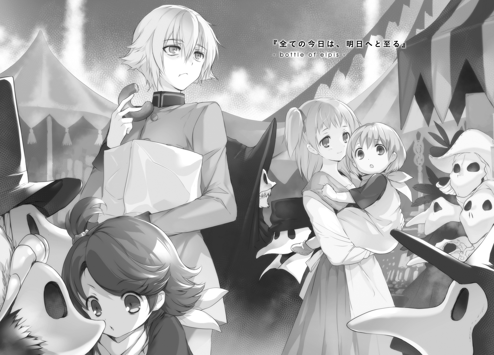
１．特殊任務
視界が狭い。
首を動かさないと、周りの様子がわからない。
確かに一度は「面白そう」と言っていた仮面ではあるが、実際に被ってみたところ、これがまためちゃくちゃに不便なしろものだった。デザイン重視のものを選んだせいもあるかもしれないが、目や鼻のところの穴が小さすぎるのだ。外がよく見えないうえ、呼吸するたび息が鼻先にこもる。なかなかにしんどい。
「脱いじゃダメですよね、これ」
ニズ大竃通りとベルホック鈎螺子通りを繫ぐ小道。うめくように、ティアットは隣を歩くナックスに尋ねた。
「変装用だからな、我慢しよう。顔を隠して出歩いていても目立たないってのは、隠密の任務にはちょうどいい」
もごもごとくぐもった声が返ってきた。彼は彼で、しんどい思いをしているらしい。
「こんなに大っぴらに祭りを漫喫できる機会なんてそうそうないんだ、めいっぱい楽しむくらいの気持ちでいたほうが楽だぜ」
「そんだけ前向きになれるなら、その時点でいろいろ楽できてそうなんですけどね......」
もそりと体をゆすって、外套の肩のずれを直す。この外套もけっこうな困りものなのだ。体格の印象を変えるためにわざと寸法の合わないものを着こんでいるせいで、肩やら裾やらにずっと違和感がつきまとっている。ついでに言えば、生地が分厚いせいもあって、非常に重くて暑い。
遠く、組み鐘時計の音が夕刻を告げる。
奉謝祭の期間、ライエル市内の街灯は、淡い紫色のそれに付け替えられる。それは生死の狭間を象徴する色であるのだという。実際、夕暮れの色をべったりと貼りつけたようなその光景は、どこかこの世のものではない雰囲気を漂わせている。
まるで、童話の挿絵の中にでも入りこんでしまったような錯覚。
道行く人と、何度かすれ違う。その誰もが白い仮面と地味な外套とを身に着けていて、互いの顔どころか種族すらわからない。
「──ねぇ、ティアットちゃん」
ナックスが、気のない声で話しかけてくる。
「何ですか」
ティアットは、視線を足もとに向けたままで答える。
「アイセアさんって、あれ、何歳くらいなの？」
「......わたしのよっつ上だから、十九だったと思います」
「十九。十九ねぇ......」
何やら難しい顔をして考え込む。
「意外でした？ もっと上だと思った、とか？」
「うーん。まぁ、そういうことになるのかねぇ。数字を聞いても、いまいちピンとこないってのは確かだ」
その気持ち、分からないでもないような気はする。ティアット自身、自分と彼女の間の人生経験が四年分しかないという事実を、ちょっと受け入れがたく思っているのだ。
「いろいろ達観してる人ですから。いくつって言われても消えてなかったと思いますよ、その違和感」
「そういうのじゃなくてさ」ナックスは頰を搔きながら言う「なんかあの人、未亡人っぽい色気、ない？」
ぶふぅ。
仮面の下で、派手に吹き出してしまった。
「み、みぼ!?」
「あー、身内の子の前で言うことじゃなかったね。ごめんよ」
「あ、いえその、今のはそういう理由じゃなくてですね」
どうしよう。妙に納得できてしまった。ここ数年でアイセア・マイゼ・ヴァルガリスが抱えるに至ったあの不思議な貫禄は、確かに、何かこう、特別な経緯があったのだと考えるとしっくり来る。来てしまう。
呼吸が落ち着くまで少しだけ時間をかける。
「セルゼルさんって──」
「ナックスでいいよ、可愛い女の子には特別だ」
遮るように、そんなことを言われた。
「またまた。誰にでもそんなこと言ってるんでしょう？」
「結果的にはね。可愛くない女の子ってのがなかなかいないんだ、この世の中」
はいはい、そうですか。
ある意味筋金入りの立派な言い分なのかもしれないが、言われる側にしてみれば大して面白い話でもないし、まともに付き合う義理もない。
──一瞬だけ、全ての〝娘〟たちに博愛を振り撒きまくっていたどこぞの父親のことを思い出したりもしたけれど。それも、あくまでも一瞬だけの話。
「セルゼルさんって、黄金妖精のことは、知ってるんですよね？」
「あ......ああ。うん、そうだね。一通りのことは教えてもらったな」
どことなく、曖昧な返事。
黄金妖精の存在およびその運用状況については、護翼軍の中でも一部の者しか知らされていない。そして今回の作戦に参加するにあたって、ナックス・セルゼル上等兵にはその一部の者の枠の内側に入ってもらっている。
巻き込んでしまって、少し気の毒だとは思う。こんな気の滅入る話、知らないままでいられたほうがいいに決まっているのだから。
「だったら知ってるでしょう？ わたしたち、種族まるごと、女しかいないんです。未亡人どころか、結婚も恋愛も基本的には無縁なんですからね」
「基本的には、ね」
納得とも相槌ともとりづらい、妙に曖昧な返事。
「例外がありうるって時点で、そんなものはルールじゃない。ルールじゃないなら、そんなに気にするものでもないだろうさ」
「随分な極論に聞こえますけど」
呆れ半分、感心半分で、ティアットは答える。
「アイセア先輩を口説くつもりなら、ちょっとがんばらないといけませんよ。ものすごく手ごわい思い出を相手にしないといけませんから」
「......もしかして、未亡人ての、正解だったりした？」
「さて、どうでしょう」
肩をすくめてみせた。
縦長の部屋。
扉は通路側に引くタイプ。
窓は真正面に大きなものがひとつ。鎧戸は金属製だが、軽く錆が浮いているうえあまり頑丈そうではない。部屋の中には年季の入ったベッドがみっつと、小さなナイトテーブルがひとつ、やや窮屈そうに並んでいる。全体的に古めかしいその空間の中で、ベッドのシーツと花瓶の花だけが、ぴかぴかと真新しい輝きを放っていた。
市内のホテルである。
今回の任務の拠点のひとつとして割り当てられた一室。決して上等な部屋とは言えないが、そういうことに文句を言う者はここにはいない。
「ただいまー」
「おう、おかえり！」
部屋に入ったティアットは、抱えていた紙袋をコロンに手渡すと、仮面を外し外套を脱いで、ベッドの上に放り出した。
「買い出し任務、無事完了しましたー」
「うむ、おかえり！」
「街のほうに怪しい動きは特にありません。まぁ、この時期のこの街は、何もかもが妖しげになってるもんですが」
ナックスの報告を聞いて、確かにそうだ、とうなずいてみたりする。
「ときにこの部屋、防諜のほうは大丈夫っすかね？」
ベッドに腰かけたアイセアが、ナックスに向けて尋ねる。
「うちの師団が市内に抱えた隠し拠点の中では、信頼度高いほうですよ。上下や隣室からじゃ音は拾えないし、廊下は直線、窓の外も視界が開けてる」
肩をすくめ、ナックスは答える。
その言葉を追いかけるように、ティアットは床や天井、扉に窓を確認してみる。なるほどナックスの言葉の通り。この部屋での会話を外から耳で拾うのは難しそうだ。
「窓辺で話して唇を読まれるみたいな間抜けをしなけりゃ、まず心配ないでしょう」
ああ、なるほど、そういうところも警戒しないといけないのか。
内心で少し感心しつつ、ティアットはカーテンを閉める。
「ナックス、なんかいろいろ、くわしいな！ 諜報部みたいだ！」
ベッドのスプリングの硬さを確かめながら、コロンが感心する。
「あー、諜報部」当のナックスは言いにくそうに、「まぁ、ある意味似たようなものというか、手の内だけは知ってるというか、なんというか、ね......」
「あちこちから情報を抜き出す手腕は、相当のものっすよね。先月の、うちの倉庫について嗅ぎまわってた時の立ち回り、見事だったっすよー」
「......そう簡単にアシがつくような調べ方をした覚えはないんですけどね」
「だから見事だったって言ってるんすよ。ただタイミングだけが悪かったっすね、こっちが備えてるところに飛び込んできた」
ナックスは忌々しそうに舌打ちをひとつ。
「最初から釣り糸を垂らして、調べに来るやつを待ち構えてたってことですか」
「そういうことっす。もっとも、とらせるつもりのなかったエサをしっかり持ってかれたんで、こっちはこっちで冷や冷やだったんすけど」
「慰めの言葉として受け取っときますよ」
よくわからない会話を二人だけで繰り広げている。
首をひねるティアットのほうをちらりと見て、ナックスは小さく嘆息。
「とにかく、ここはそういう部屋です。話、始めましょうや。俺らはいったい、これから何をするんです？」
「あー、そうっすね。あんまりのんびりもしてらんないっすし」
言って、アイセアは姿勢を正し、咳払いをひとつ。
釣られて、ティアットもまた、背筋を伸ばす。
「質問はあとでまとめて受け付けるってことで、まずは状況の説明から。このライエル市内に現在、〈獣〉が最低でも三匹、持ち込まれているっす」
........................。
「はい？」
何を言われたのか、普通に理解できなかった。
〈獣〉というのは、もちろん〈十七種の獣〉のことだろう。遭遇することがそのまま死と滅びに直結する、理不尽な破壊の権化。かつてあの地上を滅ぼし、今なお地上の支配者であり続けている者たち。原則としてやつらは空の上には踏み込めない、だからこそこの浮遊大陸群はいまだ存在し続けられている。
容易に制御などできる存在ではない。
少なくとも、スーツケースにいれて持ち運べるほどお手軽な相手ではないはずだ。
「記録を見たっすけど、先月、〈十一番目の獣〉を何者かに仕掛けられたんすよね？ そして、でっかい飛空艇ひとつと港湾区画の半分近くを持っていかれた」
「あ......うん。はい」
ティアットは頷く。
「つまり誰かが、〈十一番目の獣〉をこの島まで......もっと正確に言えば護翼軍の飛空艇の中まで運んでのけたってことっすよね」
それは、確かにその通り。そしてそれは、本来、どうやったところで不可能なことだ。
〈十一番目の獣〉は、触れたものと同化して際限なく大きくなる。手で持ち運ぼうとしたならば手が、鍋に入れようとしたなら鍋が、飛空艇で運ぼうとしたならば飛空艇が、すぐに〈十一番目の獣〉に吞み込まれてしまうはずだ。
衝撃さえ与えなければ、侵食の速度はそれほど速くない。その間にわずかな距離を移動することくらいはできるかもしれない......そしてそれが、常識で考えられる限界だ。
「それと、忘れちゃいけないっすよ。五年前、そこの──」窓の外のさらに向こう、39番浮遊島の浮かぶ方向を示す「──島を、エルピス集商国が持ち込んだ〈十一番目の獣〉が吞み込んだ。つまり、地上からそこまで運び上げる技術はあの時点で確立していた」
「あ」
そうだ。そういうことになる。
「その技術の名前は、通称を『小瓶』。中が空洞になっている特別製の硝子玉に、〈十一番目〉を閉じ込めておくってシロモノっす」
「ガ......硝子？ え、でも、そしたらその硝子が侵食......あ......」
気づいた。
目を何度もぱちくりとさせながら、ティアットは首をひねる。
「......え、うそ。まさか。そんな単純な手？ 本当にそんなのでいけるの？」
「本当にそんなんでいけちゃうんすよ。思いつくところまではともかく、実際にやってみようとか考えたエルピスの技術者たちは凄まじいっすねー」
凄まじい、とかいうレベルの話だろうか。
それは思いついてはいけないことであり、考えてはならないことであり、試みてはならないことだ。最初から最後まで禁忌のオンパレード。
「硝子がどうかしたのか？」
わかっていない様子のコロンのほうへ、ぎぎぎと首をきしませながら振り返る。
「......硝子の作り方って、知ってる？」
「んー」こめかみに指を押し当て、コロンは少し考える「砂を溶かして固める」
いろいろと省略されているが、大枠としては間違っていない。ティアットは頷く。
「じゃあ、〈十一番目の獣〉が侵食できないものについては？」
「んんーと......石と砂......お」
コロンが目を丸くする。
「そういうこと」
ティアットは頷く。
「あの黒水晶お化けは、砂だけから作った硝子を同化することもできないはず。理屈では。だから、小さなかけらを硝子の中に閉じ込めてしまえば、安全に持ち運びができる」
そうしておいて、いざ使いたい時がきたら、硝子を割ればいい。
もっとも、割り方にも一工夫はいるだろう。足もとに叩きつけるなどの方法では、自分が逃げられない。その問題を解決するには、そう、時限式の爆弾仕掛けか何かを使えばいい。ちょうど、先月の事件の際、正体不明の誰かがそうしていたように。
「それだけで、簡単に浮遊島をひとつ落とせるだけの兵器が、できあがる」
「おおおおー」
コロンが感嘆の声をあげる。
「実際には、そもそもあらゆる衝撃を吸収するあれから、どうやってかけらを切り出すのかみたいな問題も残ってるっすけどね。エルピスの努力家たちは、どうにかしてそのへんの壁を乗り越えてみせたってわけっすよ」
苦い顔をしたアイセアが、肩をすくめる。
「そして、『小瓶』が、全部で九つ製造された」
「総数、わかってるんだ」
「押収した資料によれば、っすけどね。信憑性はそれなりに高いっす」
九つ。それだけしかないと安心するべきなのか、それとも、そんなにあるのかと恐怖するべきなのか。なんとも扱いに困る数字だ。
「そのうちひとつは五年前、39番島で割れた。別のひとつは先月、ここの島で。残りのうちふたつは、第一師団が秘密裏に回収済み」
「おおー」
「さらに、残りのうちみっつの持ち主と、その行方についても摑めてる」
空を撫でるようなゆるやかな仕草で、アイセアの指が窓の外を示す。
「ただ、その回収は簡単じゃない。
まず、『小瓶』の存在そのものを公にできない。そんなものがまだ空の上にあると世間に知られれば、エルピス事変はまだ終わっていないと護翼軍が認めることになる。加えて、大勢でわかりやすく正面から押しかけたりしたら、追いつめられた連中が『小瓶』を割るかもしれない」
うん、とティアットは頷く。
「だから、秘密を共有できる少数精鋭だけで行動。敵組織の隙をついて、うまいこと確保するしかないって寸法っすよ」
「あの」
ティアットは片手を小さく上げて、発言権を求める。
「もしかしてこの任務、すごく危険で難しくて重要だったりする？」
「だから、そう言ってるじゃないっすか」
平然とした顔で、アイセアは答える。
「あ、でも、ひとつだけ気が楽になる材料はあるっすね」
なんだろう、とティアットは身を乗り出した。
「本来ならひとつで浮遊島を墜とせる最終兵器が、今はここにみっつ集まってる。仮にその硝子が全部割れたとしても、犠牲になるのはこの38番浮遊島ひとつだけで済む。みっつ墜とされかねないはずのところがひとつで済むんだから、それはそれで、浮遊大陸群全体から見ればおトクな話と言っていいんじゃないすかね？」
ぱたぱたと両手を振りながら、にゃははははとアイセアは笑う。
「......なぁ、ティアットちゃん」
「何ですか」
「これ、つまり、絶対失敗するなって檄を飛ばされてるんだよね？」
「聞かないでください」
こめかみに指を強く押し当て頭痛を堪えながら、ティアットはうめくように答えた。
２．ひっくり返ったおもちゃ箱
ティアットとコロンがいない。
任務に駆りだされたといって、突然、よその浮遊島へと出ていった。
任務の詳細は教えてもらえなかったが、どうせ面倒なものではあるだろう。
無事でやってるだろうか、またバカな破滅特攻をやらかしてたりしないだろうか......などと素直に心配するのも、何となく癪だ。
だから、さっさと終わらせて帰ってこいと心のなかで悪態をつく。
そんな風にして、また何日かの時を過ごした。
その日、妖精部屋の扉が、小さく開けっ放しになっていた。
そのことには特に疑問を抱かず、フェオドールはノブを摑み、開いた。その向こうにあるのはもちろん、雑多なオモチャや落書きが散らかった、いつものこの部屋の眺め。
小さな違和感。
見慣れたはずのその光景に、何か大事なものが欠けているような気がしてならない。目を細めて、改めて見渡す。開きっぱなしの絵本。崩れた積み木。ひっくり返った球形人のぬいぐるみ。無くなったものは何もないように見える、けれど、
......誰も、いない。
ティアットとコロンがここにいないことについては、事情がある。特別な任務とやらに就いて、先日からこの兵舎を離れているのだ。任務の内容は知らされていない。危険な目に遭っちゃいないだろうかという不安はあるが、たぶん大丈夫だろう。あの二人は決して素人ではない。〈獣〉相手となると色々な意味で危なっかしいが、それ以外の状況でどうにかなるようなこともないはずだ......そう信じたい。
ラキシュとパニバルがここにいないのは、たぶん今が合同訓練の時間だからだろう。上等兵相当の立場で第五師団にいる彼女たちには、兵たちの基礎訓練の一部に参加する義務がある。だから彼女たちの姿がないことについても、特に不自然ということはない。
問題は、残りの二人。
リンゴと、マシュマロ。
「────まさか!?」
正面のカーテンが風にはためいていることに気付き、フェオドールは大慌てで窓に駆け寄った。三階の高さから下を見下ろす。何もいない。周囲を見回してみる。見当たらない。ひとまず、ほっとする。
となると、怪しいのは、扉のほうだ。
振り返り、部屋の入り口を確認。一抱えほどの大きさの木箱が、扉のすぐ傍に転がっている。本来は部屋の隅で衣類を収納していたはずのそれがこんな場所にある、ただ部屋が散らかっているからというだけでは説明がつかない。
考えられそうなのは、そう。背の足りない小さな子供が、扉のノブを回す踏み台にするために、この位置へと動かした......などの可能性。
「あいつらぁ!?」
窓を閉める。鍵をかける。部屋を飛び出す。
子供の好奇心と行動力を、甘く見ていた。リンゴたちだけを部屋に残していて、大人しく留守番をしている保証などなかったのだ。
そしてここは、軍の施設だ。当たり前だが、子供の遊び場に向いた場所ではない。厳重な管理下にある兵器類はともかく、気の荒い兵士がひとやまいくらでうろついているのだ。そんな中に徴無しの幼体なんぞが紛れ込んだら、どうなることか。
あの二人が行きそうなところはどこだろうか。
廊下を走りながら考える。屋根の上などは怪しそうだ。妖精は死の危険を恐れないなどという話だが、そもそも幼い子供というものは最初からそういう傾向を持ち合わせたイキモノだ。そのふたつの前提の相乗効果。リンゴとマシュマロは、おそらく、およそフェオドールの予想が追いつかないほど、怖いもの知らずである可能性がある。
嫌な想像が、脳裏をよぎる。首を振って振り払う。
足を止める。中庭の向こう側が、妙に騒がしい。
その方向には、格闘技訓練用の体練場がある。
「うおおおおおおお」
「わひゃああああ」
「........................はぁ」
頭痛めいた眩暈がフェオドールを襲う。その場に倒れ込みそうになるのを、壁に手をついて堪えた。
ちょうど今は、休憩時間であるらしい。種族の様々な兵士たちが二十人ほど、ばらばらになって壁際で体を休めていた。
体練場の隅の床に、ポートリック上等兵が立っているのが見える。
彼は小山のような巨軀の狼徴人であり、もともと、ただそこにいるだけで目を惹く存在感の持ち主だ。しかし今フェオドールがそちらを見た理由は、そこにはない。
ポートリックの首のあたりに、リンゴがはりついていた。
同じく肩のあたりに、マシュマロがへばりついていた。
ゆらゆらと、ポートリックが穏やかに体を揺らす。左右に振り回された二人が、楽しそうにきゃっきゃと笑う。
「おお、四位武官。今、呼びに伺おうと思っていました」
ポートリックがこちらに気づき、顔を上げる。フェオドールは我に返る。
「すみません、ポートリックさん！」
ずり落ちかけていた眼鏡の位置を直すと、慌てて駆け寄る。
「こら、リンゴ、マシュマロ！ 二人とも、降りろ！」
言っても聞かない。首から上だけでこちらを振り返って、「やだ」と唇を尖らせる。
「あのねぇ君たち！」
「はっはっは、構いませんとも」
当のポートリックが、いかつい顔を緩めて、楽しそうに笑う。
「俺のこの毛の手触りが、ことのほか気に入ったようでしてな。となれば、俺としてはむしろ喜ばしい。毛並みを讃えられることは、我らの一族にとっては誇りですからな」
気を遣っての噓──には見えなかった。
「......そういうものなんですか？」
「おや、ご存じではありませんでしたか。狼徴人が毛づくろいにこだわるという話は、それなりに有名だと思っていたのですが」
いや確かにそれくらいは聞いたことがあるけれど。それは見た目の艶とかの話で、触られるのはむしろ嫌がるものだとばかり思っていた。
「それ、徴無しの子供なんですけど、いいんですか？」
「なぁに、幼子は慈しむべしというのは種を問わぬ真理でありましょうよ。四位武官も、我ら一族の幼子に懐かれて悪い気分はせんでしょう？」
狼徴人の、子供。
一瞬で、頭の中を想像が支配する。産毛のような柔らかい毛並み。宝石のような丸い瞳。しっぽを激しく振りながらこちらの顔を見上げてくる。そして、あごの下を撫でてやると気持ちよさそうに目を細めるのだ。悪くない。うん、決して悪くない。
「それとこれとは、別の話でしょう」
幸いなことに、動揺を隠すのは得意だった。表情は動かさないまま、淡々と答えた。
体練場を見渡す。こちらに向けられていた何人分かの視線が、あからさまに逸らされた。
「さすがに、全員に歓迎されてるという風ではないですね」
「ふむ。通達は来ていたのですがな。徴無しの幼子が敷地内に保護されていると」
もちろん、通達の件についてはフェオドールも聞いている。
しかしそれはそれとして、軍の施設は子供の遊び場ではないことに変わりはないのだ。感情的な意味でも単純に邪魔だという意味でも、この場にいる戦士の多くにとってリンゴたちの存在が喜ばしくないものであろうことは、想像に難くない。
「まぁ、非は明らかにこちらにありますし、ここは素直に連れ帰──痛ぁ!?」
リンゴの手が、フェオドールの髪を力いっぱい引っ張っている。
「こここら、止めなさい、抜ける抜ける皮ごと抜ける！」
「むー」
リンゴは何やら不服そうに、
「ふぇどーる、かみ、つやつやしてない」
「何の話かな!?」
「ぽーとり、かみ、つやつやしてる」
はっはっは、とポートリックが朗らかに笑う。そうか毛皮の艶を褒められてそんなに嬉しいか。なんだかいらっとしたから今すぐ生皮剝いでもいいかな。
廊下を歩いている。
遊び疲れて満足したか、リンゴとマシュマロはぐっすりと眠っている。
「──俺は以前、第三師団に所属していましてな」
マシュマロを片腕で抱いたまま、ポートリックはそんなことを言い出した。
「ご存じの通り、あそこの師団の基本的な任務は、７番浮遊島の──帝国の監視と威圧だ。おかしな事件を起こさないために、同じ空の民を脅しつけることです」
いきなりそんな話を始めた意図は、フェオドールにはわからない。
とりあえず、背負ったリンゴの姿勢をちょっと正してやりながら、「大切な役目ですよね」と、中身のないフォローを添えておく。
「ところが、年に一、二度、帝国とは関係のない、妙な任務が発令されていた」
「はぁ」
「周辺の浮遊島から運び込まれた『荷物』を、どこか別の浮遊島へと運ぶ準備が整うまで保管するというものでしてな。荷物は毎回鋼鉄の籠に収められており、中身は一部の位官にしか知らされておりませんでした」
「はぁ」
「ところが、俺は一度だけ、その籠の中身を見る機会を得ましてな」
「はぁ」
「徴無しの子供でした」
「......は......」気のない相槌の声が途中で止まる「え、と......え？」
「あまりに生気に欠けていたため、初めは死体ではないかと疑ったのですが、どうやらそういうわけではない。与えられた食事は手を使って口まで運ぶし、話しかければわずかなりと反応を示す。こちらのことが見えていたかは、分かりませんでしたがね」
「それって」
「『黄金の子』と、当時の上官は呼んでおりました。その存在については他言無用だとも言われましたな」
他言無用。それはそうだろう。
黄金の子というのもずいぶんと安直な呼び名だが、ポートリックの語るその「荷物」は、まず間違いなく黄金妖精だろう。
フェオドールの知る限り、黄金妖精のことは護翼軍の中でも一握りの者だけしか知らない。非常識なほどの魔力を熾すことができるが出力が安定せず、暴走すれば大爆発を起こす。その大爆発の規模たるや凄まじく、かの恐ろしき〈六番目の獣〉をも焼き尽くすことができるとか。
鋼鉄の籠というのは、万一の暴発に対する備えのつもりなのだろう。どう考えても気休め以上のものになりそうにないが、その気休めこそが必要だったのだと言われれば返す言葉がない。得体の知れない危険を前に、人は身構えずにはいられない。
「──他言無用なのに、僕に喋ってしまっていいんですか？」
「よくはありませんな」
しれっと、とんでもないことを言う。
「ですから、このことは内密にお願いしたい。よろしいでしょう？」
なんだ、それ。
一方的に話しておいて、最後にそんなことを言い出すのか。
「誰にも話せませんよこんなこと。出回ったりしたら、ポートリックさんだけじゃなく、僕まで処罰の対象になる」
はっはっは、とポートリックは能天気に笑う。
「......任務というものの重さは理解しています。そこに善悪の区別など存在してはならない。まして、一介の兵士に過ぎん俺が、是非を判断することなど、決してしてはならない。だからあの時の任務の際、俺はその『黄金の子』に何もしてやらなかった。命じられるまま、籠を担いで艇へと運びました。そのことについては、後悔も後ろめたさも、あってはならないのです......が」
言って、傷の刻まれたほうの頰を軽く搔く。マシュマロにしがみつかれたまま腕を動かすのは、どうにもやりにくそうだ。
「こいつは、ただの昔話です。今ここにいるこの娘らには、何の関係もない。ただこの老兵が、脈絡なく思い出した思い出を語っただけ」
「そうですね」
そういうことにしておくべき、なのだろう。フェオドールは素直に頷いた。
ポートリック上等兵は、リンゴとマシュマロの素性について何も知らない。知らないままでいなければならないし、そしておそらく、知らないままでいたほうがいい。
この二人に対して何かをしてやったとしても、それは決して、かつて何もしてやれなかった謎の子供への罪滅ぼしなどではない。滅ぼすべき罪を背負うこと自体、一介の兵士には許されていないのだから。
足を止める。妖精部屋の前に着いた。
「ほら二人とも、さすがにそろそろ降りろって」
軽く、背をゆする。
ううー、と不満げな寝息が聞こえた。
「ラキシュさんは、まだ調子悪いのか？」
午前の訓練メニューの消化中、砂利道を走りながら、パニバルに尋ねた。
「熱が出てきたから、さっき医務室に叩きこんできた」
「また？ ......まさか、本当は重い病気だとかいう話、ないよね？」
「医者の判断では、特にそういうことはないらしい。単なる魔力の熾しすぎ、というのが診断の結果だ。時間で治る」
「魔力......彼女が？」
フェオドールの知る限り、この半月の間、ラキシュがそう派手に魔力を使って何かをしたということはない、はずだ。
「私もそう思ったんだが、なにせラキシュは、セニオリスの適合者だ」
セニオリス。
彼女たち黄金妖精が振るう遺跡兵装の中でも、ずば抜けて強力だという一振り。
ティアットの憧れる「素敵で格好いいクトリ先輩」が振るっていたものであり、そして今はラキシュ・ニクス・セニオリスに継がれている、最終兵器。
「あの剣を介して振るえる魔力は、文字通り桁違いだからな。知らないところで負担が体に溜まっていても不思議じゃない」
「嫌な話だ」
「そうだな」
言葉が途切れる。
ざ、ざ、ざ、という静かな足音だけが耳に刺さる。
「ティアットたちは元気にやっているかな」
「ん......」
パニバルは少し考えて、
「なに、心配はいらない。ああ見えて、基本的には二人とも優秀だからな。通常の任務でそうそうヘマはやらかさないはずだ」
いちおう彼女たちの上司という立場にあるのだ、優秀だということは知っている。そして、「基本的に」という断りを頭につけなければならない現実もよく分かっている。
二人とも素直で真面目で、日ごろの訓練の成果をしっかり身に着けていて、魔力という切り札を持っている。けれど実戦経験が乏しいという印象は拭えず、いざという時の対応力には不安が残る。
それに、何より。
死を恐れないという──そう言い張る黄金妖精の特質のせいで、要らないところで命を捨ててきたりしないだろうなという疑いが、どうしても頭にひっかかる。せめて自分の目の前にいてくれれば横っ面をひっぱたいて止めることもできるのだけれど、遠い空の下に行かれてしまってはそれも叶わない。
「心配か？」
「ヘマをやられて、僕の評価に響かれるのは嫌だな」
即答しておいた。
ふぅん、とパニバルは興味深そうに鼻を鳴らし、
「なるほど、堕鬼種は噓が得意というのは本当らしい」
納得したように、そんなことを言った。
なんでそういうことになるのか、多少釈然としない。
リンゴとマシュマロの相手をした。
オモチャの剣を振り回して襲い掛かってきたので、同じく剣をもって迎え撃った。ぺこんぽこんと激しい打ち合い。ほどよいところで武器を弾き飛ばされ、ばっさりやられる。やーらーれーたー。悲鳴をあげてひっくり返る。リンゴたちがきゃっきゃと笑う。
「........................剣なら、私の技量のほうが上なのに」
部屋のすみっこでパニバルが膝を抱えているのは、見なかったことにした。
「ふぅ......今日も疲れた......」
よろよろと自室に戻り、着替えもせずにベッドに倒れ込む。
心と体の両方が疲れている。もう立ち上がりたくない。このまま目を閉じて、どろどろとした眠りの中に沈んでいってしまいたい。
「ずいぶんと憔悴しているのだな。子供の世話には慣れているんじゃなかったか」
揶揄されているような気になって──あるいは相手にそのつもりはなかったのかもしれないけれど──むっとなり、少し強い口調で答える。
「子供の世話なら、確かに経験がある。けど、猛獣の世話は未経験だ」
「あのくらいの子供は、みんな猛獣のようなものだろう」
「む」
そう言われると、言葉を返しづらい。
何せフェオドールが相手をしたことのある子供というのは、わずか三つだけ年下だった許嫁のことだからだ。初めて会ったのが七年前、フェオドールが十歳だったころのことだから、当時のあの子は七歳。子供であること自体に違いはないにせよ、リンゴやマシュマロに比べれば、少々成長した後であったことには間違いない。
手のかかる子ではあった。家庭の事情のせいでやや卑屈──もとい過剰に謙虚なところはあったものの、だからこそか、心を許した相手に対しては遠慮なく我が儘を言いまくっていた。それらに片端から付き合っていく日々は、とても大変で疲れるもので、そして......まぁ、もちろん、楽しいものではあったのだけど。
「その話はひとまずおいとくとして、だよ」
枕の上で頭を転がし、視線をまっすぐ、会話の相手に向ける。
「どうして君が僕の部屋にいるんだ、パニバル」
「君の後について入ってきたからだな」
「そういう意味じゃない」
だろうね、とパニバルは意地悪く答えると、窓際の椅子に勝手に腰を下ろす。
「たまには、二人きりで話してみたいと思ってね。つまらない話で盛り上がるというのも、友人らしくていいだろう？」
「誰と誰が友人だ」
「おや、冷たいことを言うんだな。もともとは君が言いだしたことだぞ」
「なんだよ、それ......」
言った覚えがない、と思う。
いや、どうだっただろう。自信が持てない。そういうこともあったかも。
「なんだ、あの夜から何も言わないと思っていたら、忘れていたのか」
......あの夜。何のことだろう。
ちくちくと、頭蓋の内側を何かがつつく。
「浮遊大陸群を墜とす、だったか？」
弾かれたように、ベッドから身を起こした。
思い出した。あの日の、あの夜のこと。文字通り妖精に幻惑されたように曖昧だった記憶が、断片的に、蘇ってくる。
あの時、フェオドールは風邪をひいていた。意識が朦朧としていた。現実と夢との境が曖昧になった時間の中、確かにこの少女と、そういう言葉を交わしていた。
「ど......」
「どこまで把握している、と聞きたいなら、以前にも答えたとおりだ。せいぜい君が護翼軍の内部資料について嗅ぎまわっているということ。あと、切り札としての黄金妖精を求めているという自供を聞いた程度だな」
何しゃべってるんだよ、あの日の僕！
叱責したいが、過去に声を届ける手段などない。
「な......」
「なにを企んでる、と聞きたいなら、これも以前に答えたとおりだ。私はただ、君についてもう少し知っておきたい。危険人物として見るべきか親愛なる友人として扱うべきか、それともその両方なのか。宙ぶらりんの今の状態も、なかなか悪くはないがね」
「............」
ぱくぱくと、口だけが動く。言葉が出てこない。
パニバルの言っていることが、よくわからない。
言葉としては理解できても、考え方が読み取れない。
コミュニケーションが成立している感触も、成立させられる自信もない。
「ふむ」
短い沈黙の時間の後、パニバルは小さく鼻を鳴らす。
「ただ見つめあう時間というのも悪くはないが、友人という間柄には似合わないような気もするな。さて、どうしたものか......」
数秒の黙考。何かを思いついた顔。
「そうだな。疲れているところ悪いが、少し付き合ってくれないか」
椅子から腰を上げ、パニバルは扉へと向かう。
「付き合うって、何に」
「寝るにはまだ早い時間だ。もう少し、体を動かそうじゃないか」
くうかくうかと寝息を立てるリンゴたちの傍らから、オモチャの剣を二振り拝借。
そのまま足音を忍ばせて、兵舎の裏手、少し開けた場所に出る。
「一本勝負。先に自分の剣を相手の体に当てたほうが勝ちだ」
「......いや、いきなり何言ってるのさ」
あたりをぐるりと見まわして、フェオドールは言う。今のところは誰の姿もないが、この後も誰もこないという保証はどこにもない。
「私闘は禁じられてるし、こんな時間じゃ模擬戦闘の許可も出ないぞ」
「そんな大層なものじゃない。二人で楽しく仲睦まじく、オモチャで遊ぼうというだけだ。申請なんてしたら、かえって笑われるぞ」
言って、剣の一本を放ってくる。受け取る。
「お互いに、聞きたいことはいろいろある。しかし困ったことに、そうそうぺらぺらとしゃべるわけにはいかない......となれば、こういうのも悪くはないだろう」
パニバルが、姿勢を変えた。
頭頂から足先までを結ぶ直線に、ぴったりと重心を合わせる。ゆらりと波打つような動きで、剣を両手で構える。本物に比べて圧倒的に軽いオモチャであるせいかややぎこちない感もあるが、それは明らかに、まっとうな剣技を修めた者の構えだった。
「君が勝ったら、私の知りたいことについて答えてもらうぞ。代わりに、私が勝ったら、君の聞きたいことに答えよう。そういう条件でどうだ？」
「なるほど」
フェオドールは手元の剣の刃の部分──固めの綿でできている──を指先で軽く押しながら、いまの条件を頭の中で検討する。
「にらみ合ってるだけよりは、いくぶんか前向きだね。けどその条件だと、そもそも剣の得意な君に有利過ぎないか。君が勝ったら、僕が質問を......」
ふと、違和感。
「え？ 君が勝ったら君が答えて、僕が勝ったら僕が答える？」
「ああ」
「逆じゃないの？ 勝ったほうが損だよ、それ」
「そう思うなら、素直に負ければいい。簡単な話だ」
「いやそれじゃ勝負にならな──」
「言っただろう？」
フェオドールの抗議を遮るように、パニバルは、にやりと笑う。わけのわからないことを言うときの彼女の、いつもの表情。
「私たちはただ、楽しく遊ぶだけだ。あまり細かいことにこだわっていても、つまらないだけだぞ」
「......どんな理屈だよ」
少し考えてから、フェオドールは剣を構える。
まともな剣技についても、それなりに覚えはある。得意とは言わないけれど、自分の本来の剣筋を隠す程度には使いこなせる。まずは、そいつを使って様子見だ。勝ちも負けもしないように気をつけつつ、こんな意味不明の勝負......遊びか......を挑んできた彼女の真意を探ることにする。
「わかったよ。その遊び、乗ろう」
「そう言ってくれると信じていたよ」
始まりの合図は、なかった。
要らなかった。
滑るような歩法で近づいてきたパニバルが、いつの間にか振り上げていた剣を、まっすぐに振り下ろす。動きをそのまま切り取って教本に載せてもよさそうな、どこまでも模範的な、正しい剣。
だから、さばくのも簡単だ。
教本に載っているような、模範的な受けをすればいい。
ぼこん、と気の抜けた音をさせて、剣が剣を切り逸らす。
「ふむ」
何かを納得するようなパニバルの頷きを無視して、フェオドールは剣を翻す。これもまた、教本にありそうな動き。上品で正しい、返しの技。少女は柄を軸にして剣を半回転させ、刀身の背でフェオドールの払いを受け止めた。
「なかなか、やるね」
「はっ」
思わず、鼻で笑う。パニバルはどうやら、噓や世辞の類は不得意らしい。称賛するような言葉は口先だけ。交わったままの剣は、彼女の「物足りない」という気持ちをこれ以上ないほど雄弁に語っていた。
ならば、もう少しだけ、踏み込んでやろう。
悪戯心にも似た何かが、フェオドールの中から湧き上がる。その衝動に身を任せ、剣を──その柄を握る手と指の位置を、わずかにずらす。
「ぬ......!?」
パニバルの表情に戸惑いが混じる。
警戒が反射的に重心を退かせる。半歩分ほど体を逸らせたことで、必然的にパニバルの体のバランスがわずかに崩れる。
重なり合ったままの剣に、力を込める。
フェオドールは決して大柄ではなく、体重もたかが知れている。しかしパニバルはそれ以上に小柄な少女であり、体重も言わずもがな。そしてどうやら、彼女は魔力を熾してもいないらしく、腕力はほぼ互角。となればもちろん、単純な押し合いであればフェオドールのほうが有利。
決して丈夫とはいえないオモチャの剣が、みしりと音をたてて歪む。
「なるほど」
小さくつぶやいて、パニバルは自ら力を抜いて体勢を崩す。つられて、フェオドールの体が前方に泳ぐ。振るうというより滑らせるような軌道を描き、パニバルの剣が胸元を狙って奔る。
そうきたか。
軽口を挟む余裕もない。片手で受けると危ない──そう判断。自分の剣の刀身を摑み、正面から受けきる。
「ほう」
この手の中にあったものが本物の剣であったなら、当然、刀身を握れば指が切れる。この戦いがもし実際の剣戟を想定した模擬戦であったなら、即敗北を言い渡されても文句の言えない戦術だ。
しかし、今自分たちがやっているのは、オモチャの剣を使った遊びだ。
そして、オモチャの剣に刃はない。だから、どこをどう握ったところで、何を言われる筋合いもない。
ついでに言えば、この勝負の勝利条件は、「自分の剣を相手に当てたほうが勝ち」なのだ。ならばやはり、自分の剣にどう触れたところで、敗北にはつながらないはず。
「ふっ」
呼気とともに、体を沈めた。引いた剣を軽く振り回し、パニバルの攻め手を牽制。同時に、片腕を自分の背後に引いて、手指の動きを隠す。
「お」
興味深そうに、パニバルの目がそちらの腕を追う。その隙をついて繰り出した剣は、しかしきわどいところで回避され、少女の前髪を軽く揺らすにとどまる。
パニバルの目が、危ない危ない、と楽しそうに揺れる。
手ごわい、とフェオドールは再確認した。
始める前から分かっていたことではあるが、パニバルの反射神経と体捌きは、自分のそれとは比べものにならないくらい高い水準にある。そして、噓偽りを駆使して戦うフェオドールのやりかたは、こういう相手との相性が最悪に近い......いくらフェイントを仕掛けたところで、その全てを見切って凌がれてしまうのであれば、何の意味もない。
どちらからともなく、距離を離す。
乱れていた呼吸を、ゆっくりと整える。
「降参するかい？」
汗で肌に張り付いてでもいたのか、自分の前髪をわしゃわしゃやりながらパニバルが尋ねてくる。
「冗談。そっちこそ、そろそろ厳しいんじゃないの？」
「それこそ悪い冗談だ」
はっはっは、と妙に芝居がかった笑い方をする。
「全力を出すのも出させるのも、実に気分のいいものだ。こんなにも有意義な時間なのだから、そんなつまらない終わらせ方をさせたくはないよ」
「趣味人め」
気持ちは分からなくもないけれど、あまり付き合いたいとも思えない。
フェオドールは膝を曲げ、姿勢を浅く沈める。左手に摑んだ刀身を背後に隠し、右の手は指を広げて前へと突き出す。
「......独創的だけど、どういう構えかな？」
「さてね。きっとあれだ。辺境の浮遊島の山奥で伝説の剣豪がひそかに編み出して伝えた秘剣中の秘剣とか、そういうやつだ」
適当なでまかせを言ってみる。
「ほほう、それは期待できるな」
いやだからこれでまかせだから。
「では私も、相応の秘剣で挑まねば失礼というものか」
いやあのね、だからね。
戸惑いまくるフェオドールの内心をよそに、パニバルは剣の柄を両手で握りなおす。真正面に切っ先を向け、そこから大上段へと剣を構えなおす。
......なんだ、あれ。
フェオドールの当惑がひとつ増える。
パニバルのその構えは、あまりに隙だらけであるように見えた。
あまりに無防備に剣を振り上げているため、胴を狙われればどうしようもない。剣とともに重心も上がってしまっているため、足を狙われれば簡単にバランスを崩すだろう。どこからどう見ても、ただのド素人の構え。
「ちょっとふらついてるけど。それ本当に秘剣？」
「ふふふ、そう侮ったものでもないさ。これは確かに、ひとたび繰り出せば必ず相手を討伐してのける、秘剣中の秘剣だ」
フェオドールは目を細める。
おかしな話だが、今のパニバルの言葉には、噓特有の濁った気配が感じられなかった。ということはつまり、とてもそうは見えないあの構えには、実際に彼女が言う通りの脅威が秘められているということになる。
「そいつは、怖いな」
呟いて、フェオドールはさらに少しだけ姿勢を沈める。
正体の分からない剣とはいえ、あの構えからして、上から来るという一点はまず間違いないだろう。そして、武器が武器だけに、速度も威力もそれほどないはず。そうと予め分かってさえいれば、対処はそう難しくないはずだ。
「たりゃあああ！」
どこか間の抜けた気合いの声。パニバルが跳躍した。
その動きは、とても達人のそれには見えない。
重心ぐちゃぐちゃ、全身隙だらけ、速度も大したことがなく、つまり避けるのも、すれ違いざまに一撃を入れてやるのも、簡単だ。
なんだ、それ。
警戒六割、拍子抜け四割。そんな心境のまま、フェオドールは襲撃者の姿を眺めて、そして、あることに気づいた。
重心がぶれている。剣を振る腕に体が振り回されている。そんな状態で跳躍などしたものだから、体勢が完全に崩れてしまっている。
もし自分がこの突撃を避ければ、彼女は確実に転倒する。勢い余って何度か地面を転がるかもしれない。そしてフェオドールの背後には、細かい枝を生やした背の低い木が群生していて、この中に飛び込んだら大怪我......とまでは言わなくても全身が擦り傷と切り傷だらけになるかもしれないわけで、
「なんだ、そりゃ！」
選択肢はなかった。
ほとんど反射的に、体が動いた。
フェオドールは自分の剣を捨て、両腕を伸ばす。少女の剣の内側へと体を滑り込ませると、そのまま抱き寄せるようにして全身を受け止めた。
受け止めきれなかった。
力仕事の得意ではない堕鬼種の腕力は、勢いの乗った少女の体重を支え切れない。ひっくり返るようにして、フェオドールは背中から地面に叩きつけられる。
「勝負あり、だ」
ぽこん。自分の額が叩かれる小さな音を、フェオドールは聞いた。
フェオドールの腹の上にまたがった少女が、ふむん、と勝ち誇るように鼻を鳴らした。
「そんなのありなわけ......？」
「底抜けに優しい者を相手にした時にしか使えないがな、今のところ、二回使って二回とも相手を仕留めているぞ」
「なんだよ、そりゃ。僕の前は一人しかいないってことじゃないか」
「当たり前だ、底抜けに優しい者と切り結ぶ機会なんてものはそう多くない」
納得いかない。地面の上にひっくり返ったまま、フェオドールはふてくされる。
「最初の時も、狙っていたわけではないんだがな？ 沼地の近くで切りかかったら、相手の男が勝手に下敷きになってくれたんだ。後になって知ったが、その男は実はとんでもない達人で、幼かった私の剣など当たる道理がまったくなかったはずでな？」
あーはいはいそうですか。
卑怯な不意打ちを仕掛けられたこと自体を責めるつもりはなかった。
いや、むしろそれは、本来なら自分たち堕鬼種の本領のはずだ。自分の得意分野であるはずのひっかけに、まんまとハメられてしまったことが悔しい。そして情けない。
「そして、実に楽しい勝負だった」
上機嫌で言って、パニバルはフェオドールの隣に寝転がった。
「......服、汚れるよ」
「なぁに、いつものことだ」
軽く言い放って、片手を高く差し上げる。まるで星を摑もうとでもいうように。
「一つの勝負は百の弁舌に勝る。フェオドールのことは、それなりに理解できたぞ」
「何の話」
「初手は、折り目正しい正統派の剣技を見せる。自分の癖を出さずに相手の出かた、もっと言えば目的と質を見極めようとするわけだ」
「............」
「だが、なんだかんだで面倒くさがりなのだろう。ある程度のことを把握できたと見るや、一転して素の動きを見せる。虚をちらつかせることで実を押し通すというやつだな」
「..................」
「一見して典型的な邪剣のようだが、しかしよく見ればそうでもない。虚にあたるフェイント動作を巧みに織り交ぜているわりに、実に当たる動きはオーソドックスで真正直だ。自身の非力に自覚があるからか、勝負を決めようとする一撃は常に正攻法。そこに至るまでの道筋がひねくれているだけで、最終的に選ぶ手段は実に素直だ。さらに言うなら、様子見の余力を残しながら詰めにきているせいか、微妙に踏み込みが甘い。これは慎重というよりおそらくは──」
「わかった！ 君が色々見抜いたのはわかったから、もうやめてくれ！」
悲鳴をあげた。
強がる余裕もないくらいに、パニバルの言う通りだった。フェオドール自身が自覚している部分も、そしておそらくはそうでない部分も。
「いやぁ、やはり決闘はいいな。百の言葉より、お互いのことを深く理解できる」
「一方的に理解された側のことも考えてほしいよ......」
力なくうめく。
「ともあれそんなわけだ。敗者は戦いの中で、既にいろいろとさらけ出した。よって、勝者たる私のほうが言葉の質問に答えるのが公平というものだろう。何が聞きたい」
そういえば、そういう話で、そういう勝負だった。
話せないことがあって、聞きたいことがある。つまりフェオドールにとってこれは望ましい展開ではあるはずなのだが、
「......釈然としないなぁ......」
「ならば腕を磨いて再び挑んでくるがいい。あまり長くは待てないから、早めにな」
「納得できないなぁ......」
空を見上げたままで、うめく。
「......君たちは、護翼軍の、秘密兵器だ」
「ああ、そうだ」
「生命力と相反する概念である魔力を、生命力が乏しいという理由で、他種族とは桁違いの勢いで熾すことができる。生命力をまるごと擲つことで、さらにとんでもない力を爆発させることもできる」
「その通りだ」
「じゃあ、ここからが質問だ。君たちはなぜ、そうまでして護翼軍に尽くす？ 生きたいという気持ちは、ちゃんと持ってるんだろ？」
「ふむ、さすがだな。なかなか答え辛いことを聞く」
もぞり、と、隣に寝転がった気配が体を動かした。
「五年前、クトリ先輩たちの世代までは、そもそもそうしなければ浮遊大陸群が滅びるから......だったな。〈六番目の獣〉は放置しておくと増えて風に乗る。そして私たち以外の兵器は、〈六番目の獣〉に対して有効ではなかった。だから、空に達した〈六番目〉は、速やかに私たちが討滅しなければならなかった」
「......それも......」
黄金妖精以外の兵器が〈六番目の獣〉に通用しなかったのは、そもそも〈獣〉たちに対抗する兵器の開発や所持を護翼軍が独占していたからだ。守護するという名目で、人々の目を塞ぎ続けてきた。戦いの場から遠ざけることで、戦う力を奪った。
それは間違っているのだ、というのが、かつてのエルピス集商国の結論だ。そして同時に、フェオドールの義兄であったエルピス国防軍軍団長の主張でもあった。
「......どうした？」
「いや、何でもないよ」
エルピスは、そして義兄は、手段を間違えた。
だから、およそ考えうる限り最悪の汚名を被って、滅びた。
けれどフェオドールは、あの国の結論を、義兄の主張を、間違っているとは思わない。人々は守られ過ぎた。甘え過ぎた。その結果として、守られる価値を失った。そこまでの考え方を、正しいものだと今も思っている。
その過保護の主犯が、今、目の前にいる少女。そしてその同胞たち。
そう考えると、さすがに少し、複雑な気分になる。
「五年前までそうだった、ということは、その後は事情が違うということ？」
「そうなる。〈六番目の獣〉が空に至ることがなくなって、兵器としての私たちの存在理由は、一度失われた。護翼軍のお偉方の何人かも、こんな面倒なものはこの機に手放してしまえと主張し始めた。というより、そちらのほうが明らかに多数派だったんだが」
「だったら──」
「護翼軍を離れた場合、私たちはエルピスの商人に売り渡されることになっていた」
「──え？」
初耳だった。
「知っているだろう？ そもそも私たちは危険物だ。それまでは、使い道があるから維持されてきた。それがなくなったからといって、解き放つことなどできるはずがない。まとめて全員の首を刎ねてしまうのが、浮遊大陸群の安全のためには最善策。
しかしそこに、けっこうな額の札束を抱えた商人がやってきてな。いらないのなら自分たちに譲れと言うわけだ。そして護翼の将官たちは、この話に乗った」
「その商人って」
「名前は知らん。私たちを買って、大型兵器の動力源として炉にくべるつもりだったらしい。よく燃えるゴミの利用方法としては実に合理的だな」
はっはっは、とパニバルは笑う。
「そのタイミングで、エルピス事変が起きた」
「──ああ」
そう、か。
もちろん、フェオドールは、その事件のことを知っている。それも、世間の者たちよりは、少しだけ詳しく。
エルピス集商国は、商業国家だ。どうしても商人が強い発言力を持つ。そして、そんな発言力を持つ商人の何人かが、義兄が立てていた「〈獣〉の脅威を浮遊大陸群の全員に思い出させる」計画を捻じ曲げた。本来なら出さずに済んだはずの被害を出した。大きな都市とその住人すべてを脅かし、脅迫という形で自分たちの意を通そうとした。
「あの時エルピスが用意していた兵器がどういうものだったのか私は知らないが、コリナディルーチェを襲った災厄には通用しなかった」
そうだ。
商人たちが用意したというその兵器の詳細を、フェオドールも知らない。強力なものであったが、予定外の〈獣〉と遭遇して破壊されてしまったのだとだけ聞いている。
「それを打ち払ったのは、妖精の先輩たち......そして、当時既に妖精兵だったティアットと、なりたてだったラキシュだ」
「......五年前の話だよね？」
「ティアットが十で、ラキシュが九の時の話だ。あの二人は多少早熟でね」
絶句。
「これによって、私たちは再び、万が一の〈獣〉の脅威に備えた最終兵器としての地位を取り戻した。そして、その地位を保ち続けている限り、護翼軍に居場所を持ち続けられるようになった......というわけさ」
「それは」口の中が乾いている「質問に答えていない。僕は、なぜ護翼軍に尽くし続けているのかと聞いたんだ。どうやって居場所を得ているのかじゃない」
「ん？ ああ、そうだったか。悪いな、話が逸れていた」
しれっとした声で、パニバルは言葉を付け加える。
「妖精は幼い子供の魂だ。擬似的に創りだされる肉体も、あくまで小さな子供のそれだ。それが成長してしまい幼さが失われ始めると、とたんに肉体が安定しなくなる。先のティアットたちの件で言えば、肉体の寿命は十の年で既に尽きていた。
ところが護翼軍は、この崩壊を先延ばしにする技術を持っていた。そいつを施された妖精は、ちょっとだけ長生きして、ちょっとだけ大人に近づける。そして、子供と大人の境目にいるわずかな時間だけ、成体妖精兵として戦場に立てるわけだ。だから」
「それ......は」うまく声が出てこない「定期的に処置を受けなきゃいけないとか、そういうものなのか？」
「いいや。一度で充分だ。二度受けた先輩もいちおういるが、本来必要ない」
「だったら、もう成体妖精になった君たちは、君たちだけで生きられるだろう。逃げればいい。自分たちの力で、どこかでこっそりやっていけるはずだ。そうしていいんだ」
「......はは」
フェオドールの手に、何か温かいものが触れた。
「君も、下手な噓をつくんだな」
「何を」
「自分で、自分の言葉を信じていないじゃないか。私が何と答えるのか、どういう理由で君の意見を突っぱねるのか、とっくにわかっているんだろう？」
パニバルの指が、フェオドールの指を、軽く握る。
「私たちはな、みんな、家族が好きなんだ。先輩たちがそうしてきたように、後輩たちの居場所を作って、守ってやりたい。そのためには、護翼軍に身をおいて兵器としての自分たちを示し続ける必要がある。必要だから、それをする」
握る指先に、力がこもる。
「ただ、それだけなんだ」
──自分の命より大切なものなんて、そうそうあるはずがないんだ。
それは、義兄の言葉。
義兄はそんなことを言って、自分の命よりも大切なものを見つけて、本当にそのもののために命を捨ててしまった。
──ティアットは、先輩みたいになりたいって、今も思ってます。
それは、ティアットのことを評した言葉。
命懸けで、憧れの人の背中を追いかけていた。本当に命を捨てようとしていた。
先輩のようになりたい。それはつまり、同じように後輩たちの道を拓きたいという意味だったのか？ 68番島に大勢いるという妹たちのために。自分一人の命よりも大切な、儚い命の家族のために？
フェオドールは彼女の覚悟を、ドラマチックな自殺と評した。彼女はいったい、どのような気持ちでその指摘を受け入れたのだろう。
「僕は......」
「さて、話し過ぎたかな」
指先から、温もりが離れる。パニバルが身を起こす。
「私はそろそろ戻る。君はどうする？」
「......まだ、僕は何も話してない。正体も、目的も」
「仕方が無いだろう。先ほどの勝負は、私の勝ちだ。多弁は勝者の特権で、沈黙は敗者の義務だぞ。剣で切られた側がぺらぺら喋るのがおかしいのはわかるだろう？」
いや、その理屈のほうがおかしいから。
「心配しないでも、誰にも話しはしないさ。君は危険人物かもしれないが、大切な友人だからな」
そう言って、パニバルは立ち去ろうとする。
その背中に、フェオドールは声をかけた。
「浮遊大陸群は、広すぎるんだ」
パニバルの足が止まる。
「百を超える数の浮遊島。多すぎる。こんなにあるから、住む者の意志がバラバラになる。守られていることを忘れるような連中が、そのためにどれだけの犠牲が払われているかを知りもせずに、のうのうと生きているような世の中になるんだ」
そこでいったん息を継いで、
「だから僕は、浮遊島を間引きたい」
「語るのは勝者だけの特権と、言ったはずなんだがな」
「浮遊大陸群に浮かぶ島のほとんどを墜とす。そのために、君たちの力を借りたい」
「......案の定、ひねくれたことを考えているんだな」
パニバルは呆れたように嘆息して、
「私は何も聞いていない。返事が欲しかったら、まあ別の機会に改めてくれ」
再び歩き始めた。
小さな足音が遠ざかるのを、フェオドールはひっくり返ったままで聞いた。
目の前には、目を細めたくなるくらいの、満天の星。
「............」
息を吸って、吐いた。
頭の中が痺れているような、奇妙な感覚。考えなければいけないことは色々あるはずなのに、うまく思考が巡らない。
「僕も......帰るか」
のっそりと、半身を起こした。
そのまま立ち上がって歩き出そうとしたところで、ふと、気づいた。足元に転がっている、二振りの、オモチャの剣。
それなりに丈夫に作られているしろものではあったが、先ほどの剣戟に耐え切れるほどのものではなかったらしい。二振りともが、真ん中あたりで、ぽっきりとへし折れてしまっている。
「......あ」
思いっきり泣きわめくリンゴの顔が、脳裏に浮かんだ。
３．特務チーム
調査が始まってから、三日ほどが経った。
暗い場所。
ティアット・シバ・イグナレオは、息を殺している。
埃っぽい。気を抜くと、すぐにくしゃみが出そうになる。
どろどろとした不安が、すぐに喉からり出そうだ。唾の塊といっしょに、胃の奥に押し込める。壁の隙間に意識を集中する。
少し深く息を吸おうとしたら、胸と背中の両方が壁に挟まれる。この状況も、なかなか心に来る。今よりずっと小さかったころ、簞笥に閉じ込められてわんわん泣いた時のことを思い出した。あれ以来、こういう極端に狭い場所は、ちょっとだけ苦手だ。
（......もうちょっと背とか伸びてたら、危なかったかな）
大人でありたい自分としては、この体の発育の遅さは日ごろの悩みの種であった。しかし今この瞬間だけは、コンパクトな体格に感謝しよう。
「ここに来るところを、誰にも見られてはいないだろうナ？」
薄暗いその部屋には、六人の人物の姿があった。
いずれも体格のわかりづらい外套を羽織り、仮面で顔を隠している。祭りのこの時期には珍しくない格好......であると同時に、後ろ暗いことをしようとしている者たちにとっては、自分たちの素性を隠しきってくれる最高の小道具でもあるようだった。
「この取り引きの重要度は、普段のものとは桁が違うのだゾ」
固まった五人の代表らしき者──声と体格からして男だろう──が、どこか苛立ったような声で、そんなことを言った。
「......それはこちらの台詞、です」
その五人とたったひとりで対峙する六人目は、押し殺したようなしわがれ声で、そう答えた。その声からは、年齢も性別も判断しづらい。体格は小柄......というところまでは分かるが、それが幼さゆえなのか、それとももともとそういう種族なのかについては判断ができない。つまり、何もわからない。
「目立ってはならない取り引きに、そんな大人数で来ている。それは、迂闊なことではないのです、か？」
抑揚のない声からは、感情すら読み取れない。
「用心しているからこソ、頭の数は増えるのダ。意見の相違だナ」
男のほうの仮面が、大仰に首を振る。
「意見の相違。便利な言葉、です、ね」
小柄なほうの仮面は、ほとんど身動きしないまま、呆れたような声を出す。
「こんな寂れた島を指定してきたことには、何か意味でもあるんです、か？」
「さて。あるかもしれナイ、ないかもしれナイ。いずれにせよ、それはお前とは関係のないことダ」
突き放すような言い方に何を感じたか、小柄な仮面は小さく俯く。
「これを使って何をするつもりなのかも、聞いていませんでした」
「教える必要があるとも思わないがネ。平和のためダ、とでも言ってほしいのカ？」
「......いいでしょう。本題に入ります。例のものは？」
男があごで背後の四人に合図を送ると、一人が前に歩み出て、鞄を足もとに置いた。
「中身を確かめても？」
鞄の口が開く。中身は、ティアットの位置からではよく見えない。
（あれは......書類の束、かな......？）
観察に意識を回し過ぎて、集中力が途切れていた。
自分でも気がつかないうちに、小さく身を乗り出していた。爪の先が壁を引っかき、かり、と小さな音を立てる。
小柄な仮面が、ぴくりと体を震わせ、動きを止めた。
（え......）
「さァ、お前の番ダ。例のものを出してもらおうカ」
「いえ」
小柄な仮面が、半歩、退いた。
「奇しくも先ほど話した通り、です。どうやらこの取り引きは、続けられま、せん」
「何を」
「互いに無事であれば、いずれ、また」
そう言い放つと──小柄な仮面は身を翻し、走り始めた。外套の裾を翻し、閉じられたままの窓へと。
（なっ!?）
驚く全員の目の前で、窓を開くとその向こうに身を躍らせる。この部屋は三階の高さにあったはずだが、墜落音も着地音も何も聞こえない。
そして、瞬きをするほどの時間のあいだに、後ろ姿も見えなくなっていた。
「──やっぱそうなったっすか。なかなか難しいっすねぇ」
腕を組んで、アイセアがうなるようにぼやく。
「その小さいやつ、勘がいいのか耳がいいのか、とにかくなかなかつかまらないみたいなんすよね。他の島でも、諜報部が何度も取り逃がしてるらしいんすよ」
そうだろうな、とティアットは思う。実際にこの目にしたから分かる。あの小柄な人影が見せていたそれは、敏感や繊細などという言葉で片づけられる警戒ではなかった。おそらくは、もともと感覚の鋭かった者が、強迫に近いレベルの臆病に追い立てられることで初めて到達できる領域の何か。
それに、単純な体術だけを見ても大したものだった。あれを少人数で取り押さえるというのは、なるほど、簡単な話ではなさそうだ。
もちろん、大々的な包囲網でも敷けるならば、案外簡単に捕まえられるのかもしれない......が、その手が使えないからこそ自分たちが今ここにいるのだ。ないものねだりをしていても仕方が無い。
「ヘンにしわがれた声、してたんすよね？ それもどうやら、薬を使って喉を一時的に痛めてるみたいなんすよね。そこまでして、自分の素性を隠してるんすよ」
うわあ、と思う。
なんというか、そこまでやるのかという気持ちが止められない。もちろん、ああいう業界の中では当たり前のことなのかもしれないけれど。
「なあ。残ってたやつらだけでも、捕まえなくてよかったのかー？」
椅子の上でゆさゆさと体を動かしながら、コロンが尋ねる。
「ありゃただの客っす。捕まえたところで、何も出てきやしないっすよ。あたしらの存在を無駄に宣伝することになるだけっすね」
アイセアは難しい顔をして、眉をひんまげる。
子供だったころはともかく、背が伸びて大人びた雰囲気を身につけた今となっては、あまり似合わない。
「あからさまに悪いやつらでしたし、放っておくのがためらわれるのも確かっすけど。あたしらの目的は、あくまでも『小瓶』を確保することっすからね、リスクの大きな寄り道はできるだけ避けるっすよ」
「ふむー」
「もちろん、ただ放置するってわけじゃないっすよ。どうっすかセルゼル上等兵、あの連中の素性、つかめたっすか？」
アイセアは、くるりと車椅子の向きを変えて、壁際のナックスに向き直る。
「......宿泊場までつけてって、顔を確認しました。一人が知った顔でしたよ。旧エルピスに登録してた商人たちの中で、ちとタチの悪い商売をしてたやつでした。残りの四人は、その護衛ですかね」
「おお、さすが、いい仕事してるっすねぇ。その調子で次の待ち伏せポイントの割り出しも、よろしくお願いするっすよ」
「......あのなぁ、アイセアさんよ」
ぽりぽりと頭を搔きながら、ナックスは抗議の声をあげる。
「やれって言われりゃ、そりゃやりますがね？ 俺は軍人としてここにいるんですぜ。あんまり副業のほうの伝手を使わせられても、なんつーか、困るんですがね？」
「なーに、どのみち軍の記録には残さないっすから、安心してこき使われてくれてもいいんすよ？」
「そういう問題じゃねぇんですよ......いや、それも大事だけどよ......」
はぁぁ、と肩を落とす。
ティアットは、彼らの会話に出てくるナックスの『副業』というものを把握していない。どうやらずいぶんと顔が広くて、いろんな情報を集められるものらしい。
記者とか探偵とか、そういうやつだろうか。だとしたら、ちょっとかっこいいなと思う。けれどナックス本人は特にかっこよくないなと思う。口にはしないけれど。
「大変そうですね」
その場の全員にコーヒーを配る際、ナックスのカップの横にだけ、角砂糖をひとつ多めに添えておいた。
「疲れてるみたいだから、セルゼルさんだけ特別です」
「いい子だねぇ」
なぜかしみじみと言われた。
「二年後くらいに、口説いてもいいかい」
「嫌です」
自分でもなぜかよくわからなかったけれど、即答していた。
調査は、地道に続けられた。
アイセアとナックスの二人が、どうやっているのかはさっぱり分からないが、あちこちから情報をかき集めてきた。その結果、住人の思いきり減った寂れた街であるこのライエル市に、驚くほどの数の、不正規の居住者が集まっていることが明らかになった。
そのほとんどは、違法な兵器や薬物の開発や製造を行っている連中だ。
考えてみれば、当たり前の話ではあるのだ。
本来そういったことをやろうとする時には、いくつか解決しなければならない問題がある。それは確保しなければいけない敷地の広さであり、機械類の動力の確保であり、どうしても発生してしまう音の誤魔化し方であり、近在住人の疑惑の目であったりする。
そしてこのライエル市においては、その全ての問題が一度に解決する。機械類がそこらで動き続け、動力は勝手に供給されていて、駆動音はいつでもどこにでも満ちていて、トドメに近在住人というやつ自体がどうにも少ない。
もちろん、あと数か月で39番浮遊島と衝突し、都市ごと〈十一番目の獣〉に吞まれるかもしれないという問題はある。しかしそれも言いかえれば、半年後にはあらゆる証拠が勝手に隠滅されるということになる。
そんなわけだから、このライエル市には、表通りを歩かない類の住人がそれなりの数、集まってきている。
そしてもちろん、そういう連中がいくら増えたところで、表通りは寂しいままだ。
「......なんだかなぁ」
いつものように仮面と外套を身につけ、人の少ない表通りを歩く。
例のホテルの近くに、そこそこおいしいパン屋を見つけた。ハムやベーコンを挟んだサンドウィッチが特に良い。しかしお菓子のたぐいはほとんど扱っていないようで、唯一、ほとんど甘くないパサついたクッキーが小さな包みで売られているだけ。
ラキシュのドーナツが恋しい。
フェオドールが食べていたやつもだ。ミルクに浸すとめちゃくちゃうまいと言っていたアレを、一度試してみたい。
どうしてだろう。もうずっと長い間、みんなと会っていないような気がしてしまう。
「マシュマロとリンゴ......いい子にしてるかな」
小さな後輩たちの顔を思い出す。
パニバルとラキシュとフェオドール。三人の顔も順番に思い返し、たぶんいまごろラキシュ一人が苦労してるんだろうなぁと思う。あの子は優しいから子供に懐かれるけれど、優しすぎるせいで、叱ったりするのが苦手だから。
「会い──」
会いたいな、と。その言葉は、すんでのところで飲み込んだ。
妖精兵に、弱音は禁物だ。
今はまだ、重要な任務の最中なのだ。雑念は禁物。
自分にそう言い聞かせ、抱えた荷物の中から小さな包みを取り出すと、中身のパサついたクッキーを仮面の下から自分の口にねじこんだ。
ばきん、ぼりぼり。
甘くない。おいしくない。
４．小さな家族
最近、ライエル市を形づくる機械の調子がよくないのだという。
あちこちで、動きが鈍っている。止まってしまっているものもある。その結果、蒸気やら雷気やらといったエネルギーの循環が滞ってしまい、水漏れや小さな爆発事故などを起こしたりもしている。
ここでは、街並みが古い機械で満たされている。入り組んだ仕組みのそれらは複雑に絡み合い、ひとつの生き物のような巨大な機械として組み上がった。誰もその全容を知る者はいない。ただ、昔から変わらず動き続けるそれらに対する信頼があったからこそ、人々はこの街に安心して住み続けることができた。
それはいわば、季節が巡ることや、空から雨が降ることを信頼するようなものだ。昔からそういうものであったということをどこかで前提として受け入れることで、人々は自分たちの日常を組み立てられる。
あまりに急速にあまりに大きな都市を鋼板と発条とで組み上げてしまったため、その全容を把握する者は誰もいなかった。誰にも全容を把握されないままでも、それらの機械は、健気にそして勤勉に働き続けてきた。
その前提が、おそらくはいま、崩れつつある。
市から人が減り、整備する者が致命的に足りなくなったのが原因だろう......というのが、市庁舎の考えだった。
街の全容を把握する者はいないが、自分の身近な範囲の機械については理解し、その調子を整えることができる者がかつては大勢いた......ということだ。
彼らがこの街とともに日々を過ごしていたからこそ、総体としてのこの街も健康を保てていた。逆に、彼らがこの街から姿を消していったことで、彼らが整備していたひとつひとつの機械だけではなく、街全体が健康を損ねていった、と。
そのこと自体は、以前から予期されていた。が、ここ数日で急に状況が悪化してきた。腕のいい整備士が大勢一度に消えたのではないかと言われてはいるが、真偽はわからない。そして、真偽を確かめることの意味は薄い。
市庁舎は、市内調査を進めて、段階的に施設を閉鎖していく方針を固めた。既に、危険度の高い何か所に関して動力を切断、市民の立ち入りも全面的に禁止とした。
仮に大金を注ぎ込んで市の機能を一時的に回復したところで、減った市民が戻るわけでもない。であれば、そう時をおかずに同じことになるだけだ......と、そういう判断によるものであるらしい。
その話を聞いたフェオドールは、妥当な判断だと思った。
この街は、どちらにせよ死にゆこうとしているのだ。そして、遠からず39番浮遊島との接触によって無くなろうともしている。後者の結末を防ぐべく自分たち護翼軍がいま戦力を調えている最中ではあるが、旗色ははっきりいって最悪に近い。
この街は、そしてこの世界は、終わりかけていて。
その事実からは、誰も目を逸らせない。
「フェオドール・ジェスマン四位武官、入ります」
「おう」
返事を待ってから入った総団長室には、先客がいた。
車椅子に乗った、褪せた金色の髪の、徴無しの女。
（......誰、だ？）
軍服は着ていない。第五師団の中で見かける顔でもない。
こんな落ち着いた雰囲気の女性と、街中で出会った記憶もない。
などとフェオドールが考えていたら、目が合った。
「こんにちは」
柔らかい微笑みと、ありふれた挨拶の言葉。
「あ......」
フェオドールは我に返り、目もとの眼鏡の位置を正す。
「失礼しました、先客がいらっしゃいましたか。報告書は後ほど、出直させて頂きます」
「あーいや、待て待て」
被甲人の眠たげな声が、横から割り込んできた。
「報告書って例のアレだろ、市庁舎のほうからの苦情まとめ。あとでまとめて処分しとくから、机の上に置いてってくれ」
「......処分ではなく、適切に処理してください一位武官」
「あんなのいちいち聞いてらんないよ。港湾区画から落っこちたゴミ箱のリストを作れとか言ってるんだよ？ 地上に降りて〈十一番目〉を解剖しろとでも言うのかね」
それは確かに、やっていられない。やっていられないけれど。
「それでも正式な申請です。ぐだぐだ言ってないで仕事をしてください」
「やだなぁ、そういう正論って俺嫌いだよ。......っと、それはそれとしてだ」
一位武官の小さな目が、女性とフェオドールの間を往復する。
「アイセア。この白いのが、さっき話に出た色男だ」
「は」
「......おおー」
少し驚いたような笑顔で、改めてその女性は、フェオドールに向き直る。
「思ってたより、線が細い感じっすねぇ。んー。あの子たちの趣味としては意外なような、それでいて納得できるような......」
「え、いや、あの？」
じろじろと遠慮なく眺めまわされる。
おそらくは年上だろう女性にこんな目で見られるというのは、なかなかない経験である。しかもそれが見た目の近い徴無しとなるとなおさらだ。心臓が勝手に跳ねる。どうにも落ち着かない。
「あの子たち、ですか？」
話の流れから、それが誰を指す言葉なのかくらいは想像できる。想像した上で、何か微妙に誤解されているような気もする。
「もしかして、ティアット上等相当兵たちの縁者の方ですか？」
「ういうい、正解っすよ」
......妙に子供っぽい表情と口調で、そんなことを言われた。
「あ。そうするともしかして」
以前聞いていた、68番浮遊島の住人たちの名前を思い出す。あそこには、妖精たち全員の姉のような喰人鬼がいるとかいう話だった。確か名前は、
「あなたが、ナイグラートさん？」
女性が、思いっきり吹き出した。
一位武官が、腹を抱えて笑い出した。
「......違ったみたいですね」
答え合わせをするまでもない。この反応を見れば分かる。
「いやははは......ある意味光栄っすけど、残念ながら違うんすよこれが」
目もとににじんだ涙をぬぐいながら、女性が手をぱたぱたさせる。
「まぁ、あたしのことはこの際どうでもいいとしてですよ。うん。きみがウワサの少年なんすね。一応ひと目見てみたいとは思ってたんすよ、ちょうどよかった」
親し気に言って、肩を叩いてくる......には高さが足りなかったか、フェオドールの肘の辺りを掌でぱんぱんと叩く。
「はぁ......」
反応に、困る。
「会えたついでに、ひとつお願いがあるんすよ。聞いてもらえるっすか？」
「え？ いや、その......」
助けを求めるように、ちらりと一位武官に視線を送る。いまだに笑い転げていて、たぶん話を聞いてもいない。役に立たない。
仕方が無いので、
「自分にできる範囲のことであれば」
社交辞令の返答をするしかなかった。
女性は、うん、と小さく一度だけ頷いて、
「──あの子たちを責めないでほしいんすよ。この後、何があったとしても」
「は......？」
「お願いは、それだけ。『できる範囲』で構わないんで、どうかよろしくっす」
言って、その女性は笑った。
どうしてだろう。まるで泣き顔のように見える笑顔だった。
ラキシュ・ニクス・セニオリスの体調が回復した。
「ごご、ご心配とご迷惑をおかけしましたっ！」
医務室から妖精部屋に戻ってきて、彼女が発した第一声がそれだった。
無理もない。
この数日、ここでは絶え間なくリンゴとマシュマロが暴れ回り、パニバルが我が道を行くような生活を続けていたのだ。必然、部屋は散らかり、片付かない。
いちおうフェオドールはちょくちょく手や口を出したりしていたのだが、なにぶん彼自身どちらかというと片づけの苦手な性格である。加えて言えば、ここはいちおう女の子の部屋である。あまり思い切った手出しはためらわれた。
「ふぇどるー！」
「どるー」
当然の権利のような顔をして、フェオドールの腹と肩によじ登る子供たち。フェオドールは潰れた蛙のような顔をして「ははは」と力なく笑う。
「いますぐきれいにしますから、フェオドールさんはちょっと待っ......こ、こらパニバル、なんで下着なんて放り出してるのぉ！」
「ははは」
笑い続けながら、フェオドールはそっぽを向いた。
もし勝手にこの部屋を片付け始めていたりしたら、その下着に遭遇していたのは自分だったということになるのか。よかった。手出しをしないでいて、本当によかった。
「心配はいらないぞ、ラキシュ。フェオドールは徴無しの娘には欲情しないらしいから、下着が落ちていようと中身が落ちていようと」
「ぜんぜんぜんぜんまったくこれっぽっちも、そういう方向の問題じゃないからぁ！」
がんばれ、ラキシュさん。心の中だけでエールを送る。
あとあれだ。パニバル。間違っているとまでは言わないけれど、ひとを何かが欠けたみたいに言わないでほしい。
ちょっと外の空気を吸ってこよう、という話になった。
ラキシュだけの話ではない。ほとんど部屋から出られずにいるリンゴとマシュマロについても同様だ。小さな体の中から際限なくあふれ出る元気を、屋根の下だけで消費しようというのがそもそも無理な話だったのだ。
祭りのこの時期、紫色に染め上げられた街路──少しばかりいかがわしい雰囲気がないでもない──を、五人で歩く。
いや、訂正しよう。三人が歩いて、二人が駆け回っている。
「ましゅ、こっち、こっち！」
「りんご、まって、まって」
とんでもない勢いで駆け回る二人を、さすがに少し不安になりながら見守る。
「二人とも、僕らからあんまり離れちゃダメだからね？」
「あい！」
「うんっ」
返事は立派なのだ。返事は。
「紐とか、繫いどいたほうがよかったのかもなぁ。それこそ、犬の散歩用のやつとか......どうしたの？」
隣で、ラキシュとパニバルがくすくすと笑っている。
「ごめんなさい。なんだか今の、お父さんみたいだなぁ、って」
「......そんな年じゃないんだけどなぁ」
「そうですよね、ごめんなさい」
まったく悪く思っていなさそうな笑顔で、ラキシュは舌を出す。
他の三人に比べて大人しく、引っ込み思案気味なところのあるラキシュだが、なんだかんだで妖精であることに変わりはないらしい。茶目っ気を見せることもあれば、悪戯っぽい表情を浮かべることもある。
あまり目立たないから、よく見ていないと気づけないだけで。
「我々は、父親というものについて、そう年が離れているイメージを持っていないんだ。実物はいないし、ヴィレムもそれほど年かさというわけでもなかった」
こっそりとパニバルが解説を入れてきたが、どう受け取ったものか迷う。
「まったく、どうして僕なんかに懐いてるんだか」
特に深い意味もなくぼやいた言葉だが、口にしてみると、改めて重要な疑問であると思えてきた。種族も違う。性別も違う。父娘というような年齢差もない。子供の相手に慣れているわけでも、前向きなわけでもない。およそ、子供に気に入られそうだと思える性質が、何ひとつとして思い当たらない。
「そんなの、簡単ですよ」
ラキシュは人差し指を立てて、
「あのくらいの子は、甘やかしてくれそうな人を好きになるんです」
「......そこは、優しい人、とかじゃないの？」
「違いますよ？ だって子供ですから。相手が本当に優しいかどうかなんて、わかるはずがないじゃないですか」
そうなのだろうか？
よくわからない。ただの言葉遊びのようにも聞こえる。
「甘やかしてるつもりもないんだけど」
「そこは、あの子たちの受け取り方次第ですから。答えはそれぞれの心の中に、ですよ」
「やっぱよくわからないなぁ......」
甘やかすというのは、もっとこう、なりふり構わず機嫌をとりにいくようなことを言うんじゃないだろうか。それこそ、毎日のように甘いお菓子を持っていくとか、そういうやつだ。
「私も甘やかしてるつもりなんだが......」
自分を分かっていないつぶやきが聞こえたことについては、気にしないとしてもだ。
「ふぇどるー！」
「あきしゅー！」
二人が突っ込んできて、並ぶ二人にそれぞれ全力体当たり。
腹の中のものを全部吐き出してしまいそうな衝撃を耐えきり、折れてしまいそうな膝を気合いで支える。
すぐ隣、同じようにマシュマロの突撃を受けていながら、ふんわりと受け止めているラキシュの姿を見る。なんだあれすごい。武技の極みか何かか。剄を騙し歪めて煙に化かすとかなんとかそんな感じの、遠き歴史の彼方に失われた名のある秘奥義の類なのか。
「ばけ、ばけおばけー！」
「ばばばばばば！」
二人ともが必死になって、何かを訴えかけている。その指の示す先には、見慣れた仮面と外套をかぶった、誰かの姿。
「......ああ」
祭りのこの時期。
紫色に染まったこの街は、生死の境界にまたがる交差点を模している。今のここでは、生者と死者とが当たり前のようにすれ違い合うということになっている。まるで死者のような装いをした生者が、名前と顔を隠して歩くのだ。
だからあれは、誰でもない誰かという装束をまとっただけの、誰か。たまたま今この場所ですれ違ったというだけの、何ら特別なところのない、街の住人だろう。
「すみません、お騒がせします」
フェオドールが声をかけると、仮面の主はわずかに体を震わせて、そばの小道へと姿を消した。
徹底してるんだなぁと少し感心する。仮面と外套をつけている間、できるだけ喋ってはならない......というのが正式な作法であるらしいのだ。なにせ死者は喋らないし、声は個人を特定してしまう。何者でもない何者かであるためには、まずは自分の声を捨てねばならない。
さて。
どこの浮遊島でも同じだが、港湾区画というやつは必ず交易の要所になる。外からの艇が運んできた異島の品々がそこで商われたり、逆に外へと出ていく商人たちのためにこの島の産物が卸されたりする。そのため、港湾区画のすぐ傍には、大勢の人とたくさんの品々が詰め込めるだけの大きな広場があるのが普通だ。
ライエル市も、もちろん例外ではない。
今でこそ活気を失い廃墟のような有り様になっていると言っても、もともとは独自の産業をもって栄えていた立派な都市だったのだ。当時の交易量に合わせて確保された広場の大きさは、近在の他の都市に決して劣らない。
「......ほお」
まず最初に、流れの街頭楽団による、楽しげな音楽が聞こえてきた。
次いで、大勢の人々の喧騒。
右から左へ、左から右へ。張り巡らされたロープにかかった無数のランプが、広場を明るい紫に染めている。ぼんやりとした不明瞭な光の下、死者を象った仮面をかぶった人々が、そうでない人々に交じって行き交っている。そして、ずらり並んだ屋台の天幕には、うさんくさい土産物がずらりと並んでいた。
幻想的なのか即物的なのかいまいちわからない眺め。ただ、活気は感じられる。
「うわぁ......」
ラキシュの感嘆の声の隣で、フェオドールもまた、小さく感心の声をあげる。
「すごいな。この街、まだこんなに住んでる人がいたんだ」
滅びを目前にしているとはいっても、都市は都市だといったところか。ふだんの寂れた街並みからはおよそ想像のできない大人数が、祭りの喧騒を織り成している。ある者は仮面をかぶり、ある者は素顔のまま（たまに素顔がほとんど仮面と変わらないような種族の者もいる）、ある者は客として、ある者は露店の主として。
「ティアットとコロン、今ごろどうしてるだろうな」
近くの浮遊島へと任務で出ていったという話だったが、あれから二人の近況についての連絡はまったくない。もちろん極秘任務の近況報告なんてものがそうそうあるはずもないことは理解しているが、それでもそろそろ、少し心配になってくる。
「前に聞いた話によれば、そう遠い島まで飛んでいったわけではないそうだな」
平然とした顔のパニバルが、つぶやきを拾う。
「ということは、案外、同じ祭りを別の街で存分に楽しんでいる最中かもしれないぞ」
「それだったら、いいんだけどね」
さすがにそれは楽観のすぎる考え方だろうと、苦笑する。
「そうかもしれないし、そうでないかもしれない。それ以上は考えても仕方が無い。ならば細かいことなど考えず、心から楽しんでしまったほうがいいだろう？」
ぱしん、と背中を軽く叩かれる。
前向きなのか、そうでないのか。パニバルの言うことは相変わらずよく分からなかったけれど、なんとなく、沈みかけていた気分がましになったような気がした。
「お、いつもの兄ちゃんじゃねェか！」
聞き覚えのある声。振り返る。
ずらりと仮面を並べた屋台の中。立派なたてがみを生やしたパン屋の親父が、真ん中で割れて上半分だけになった例の仮面をつけて、手を振っている。
「こんなとこで会うなんて奇遇じゃねェか、奇遇ついでに新作ドーナツでも食ってかねェか......って」
五人で手をつないでいるところを認めて、にやりと口元が笑う。
「こりゃ悪いとこに声かけた、家族サービス中だったかァ？」
おばけー！ と、リンゴが悲鳴をあげてフェオドールのズボンに顔を突っ込む。
確かに、顔の上半分が怪しげな仮面であることを差し引いても、今の顔には泣く子がもっと激しく泣くであろう、嫌な迫力があった。
「今日も元気に生きてそうですね、おじさん」
言いつつ、リンゴをズボンから引きはがす。膝のあたりとリンゴの口元をつなぐように、ゆるやかなよだれの橋がかかる。
「おゥよ、店がやっていけてる間は、俺も健康無比待ッたなしだ！」
力こぶを叩いて、豪放に笑う。
生者と死者がすれ違うこの街とこの時期ではあるけれど、どこからどう見ても元気な生者でしかない者もいる。伝承や風習なんてのは、そんなものだ。みんなで楽しく気分を盛り上げるためのものでしかない。
どんな仮面をつけていても、どんな外套をかぶっていても、中身は必ず、生きている誰かだ。死者はいない。どこにもいない。
「ときに兄ちゃん」
手招きされる。招かれるまま、耳を寄せる。視線はラキシュに向いて、
「こんな可愛ィ奥さんいるくせに、いつも違う子連れてるよナ。よその種族の文化に口出しャしたかねェけどよ、奥さんは大事にしとかねぇと血ィみるゼ」
「だから、そういうのじゃないんですってば」
下世話な笑み。死者の仮面が似合わないことこの上ない。
フェオドールはこっそりと小さく、ため息を吐いた。
小さな舞台の上で、人形劇が上演されていた。
演目は......フェオドールの知らない、たぶん童話か何かだ。古代の地上を舞台にした、愛と冒険の物語。悪い人間種の勇者に皆殺しにされた獣人の生き残りたちが、星神と地神の導きを受けて、新しい大地へと旅立っていく。そんな筋書きだ。
ちょっとだけ、嫌な気分になる。こういう物語に触れたあとの観客は、往々にして、ことのほか人間種に似た容姿を持つ諸種族──徴無しに対して当たりが強くなる。そのことは問題ではないとしても、フェオドール自身や連れの四人が徴無しである以上、余計なトラブルの種になりかねない。
さっさとよそに行こう......と言い出す寸前に、気がついた。
隣にリンゴがいない。マシュマロとパニバルもだ。
「あれ？」
「すみません......あそこです......」
申し訳なさそうにラキシュが指さす先には、今にも舞台に乗り込まんばかりの最前列で、身を乗り出して劇に見入ったリンゴとマシュマロと、あとなぜかパニバル。
生まれて間もないリンゴたちはともかく、年長組のはずのパニバルが迷わずそこに張り付いているというのは、どうしたものだろうか。
「......しょうがないね。待とうか」
肩をすくめた。ラキシュはしゅんとなりながら、少し嬉しそうに笑う。
やあ、たあ、やああ。人形たちが剣を手に、切ったはったの活劇を繰り広げている。機械仕掛けの舞台がくるくるとその背景を変えているところなど、意外と見ごたえが多いのがちょっと悔しい。
物語のテーマは、愛と勇気と友情であるようだった。主人公の獣人たちは、どう考えても絶体絶命のはずの苦境を、仲間と手を取り合うことで次々と切り抜けていく。
爽快な夢物語だな、と思う。
誰もが納得して喜べるように、美しい展開と曇りのない結末が並べられている。
そんなことは現実にはありえない──などと言うつもりもない。それはそれで、現実をヒネた目で見ているだけの言葉だと思う。実際の現実はもっと大雑把にできている。愛と勇気と友情が曇りのない輝かしい結末につながることもあるだろう。そして同時に、同じだけの確からしさで、そういう結末につながらないこともあるだろう。
「あ、あの」
一歩弱ほど離れたところから、小声でラキシュが話しかけてくる。
「前にお話ししたこと、覚えていますか。ティアットのことをお願いしたいって」
「それは......」少し口ごもる「まぁね」
「もう一度、よく似たこと、お願いしてもいいですか」
少し驚いて、思わずまじまじとラキシュの顔を見た。
「恋人としてなんて、もう言いません。これからも、これまでみたいに、そばにいてあげてほしいんです」
「......どういう、心境の変化？」
「だって、最近、二人いっしょにいるだけで、すごく幸せそうだから」
幸せそう？ お菓子の好みが嚙み合わなかっただけで追いかけたり追いかけられたりする、あの関係が？
「それは、どうなのかなぁ......」
首をひねる。
「だいたいそのティアットは、僕に君のことを頼んできたよ。素直で優しくて料理が上手でおいしいドーナツが揚げられます、お買い得ですよどうですかお客さん、って」
ちょっと言葉の詳細は違っていたような気はするけれど、小さいことだ。それと、その話の最中、おいしいドーナツのくだりで心が揺れていたことは伏せておこうと思う。
「わたし、は」
ゆっくりと嚙みしめるようにして、ラキシュは答える。
「わたしは、いいんです。一人でも大丈夫。ちゃんと、幸せになりますから」
ああ、またか。少し、いらっときた。
「君たちは一度、種族全員で、大陸公用語を勉強しなおしてきたほうがいいよ」
え？ と戸惑った顔をされた。
かけらも大丈夫じゃない状況で、かけらも大丈夫じゃなさそうな顔をして、「大丈夫」だなんて口にする。たぶんこれは、彼女たちが言葉を正しく理解していないからなのではないかと思う。正しい「大丈夫」の意味も使い方も知らないからなのではないかと思ってしまう。そう、信じたくなる。
「ひとを不幸にする、一番効率的な方法って知ってる？」
そういうことをあまり考えたことがなかったのだろう、ラキシュは少し眉をひそめて、それでも考えながら答える。
「......叩いたり、大事なものを取り上げたり、とかですか？」
「それも有効かもしれないけど、そんなに効率的ではないかな。抵抗されるだろうし、うまく行っても悪役になるし」
「悪役に......って、誰かを不幸にするんだから、最初から悪いことですよね？」
眩しいくらいにまっすぐな答え。本当に素直な子だな、と少し呆れる。
「簡単だよ。『君は不幸だ』って言ってやればいい」
答えて、手をひらりと振ってみせた。
「『もっと幸せになれる』とか『幸せにしてやる』とかもその類型。いいこと言ってるみたいに聞こえるけどさ、今のは全部、あなたがいま持ってる幸せは全部ニセモノで、ホンモノは自分が教えてやるものだけだっていう決めつけ。この言葉を信じちゃうと、それまでどんなに幸せだった人も、まだ自分は幸せになってないんだって考え始める」
ぼかん、爆発を表すジェスチャー。
「本当の幸せが自分の手元にないことに苛立ち始めたら、終わりだ。もともと手元にあったものはガラクタにしか見えなくなって、他人を妬み始める。そうなるともう、自分では自分の幸せが見えなくなる。『君は幸せだ』って言ってくれる誰かに依存し始める。悪役になるどころか感謝される。色事師とか詐欺師とか政治家とかがよく使う思考誘導だよ」
それはつまり、フェオドールの同族である堕鬼種が得意とする手口だということだが、さすがにそこまでは言わないでおく。
「君がさっき言った『一人でもちゃんと幸せになる』っていう言葉は、その類型だ。僕の目には、君が自分自身を、不幸せにしたがっているように見える」
「そ......」
んなことないです、と言おうとしたのだろう。
しかしラキシュは、そこで口ごもってしまう。それはつまり、理屈としてはかなり強引だったはずのフェオドールの指摘に、何かを感じてしまったということだろう。そして、この正直な少女には、その気持ちをとっさに隠すような腹芸はできなかった。
フェオドールは内心で嘆息する。まったくこの子は、色事師や詐欺師にとって、実に騙しやすいタイプだ。今ここにいる自分がそのどちらでもないことに感謝したい。
「別に、それが悪いとは言わないさ。不幸に酔うのも気持ちがいいもんだ。生きるためにそれが必要だって人もいる。けれど」
そこで、一度、言葉を切る。自分の中の気持ちをうまく表現できる言葉を探す。
フェオドール・ジェスマンは堕鬼種で、誰かを騙して利用することを本分とするロクデナシの末裔で、つまりその手管をわざわざ懇切丁寧に説明するなどということは基本的に自分の首を絞めるに等しい行為だ。そんなことをどうして自分がやってしまったのか。先走った感情のしでかしたことを、後から理屈で追いかける。
そして、どうにか答えらしきものを得る。
自分は、ただ、納得したくなかったのだ。どこまでも姉妹たちの幸せを願い譲ろうとしないラキシュ・ニクス・セニオリスという少女が、自分自身のことだけを例外として扱おうとしていることに。その理屈を一言で表現するなら、そう、
「──君には似合わない」
「ひゃ」
奇妙な驚きの声を聞いた。
「ん。どうかした？」
「い、いえいえいえ。なんでもないですです。なんでそんなに自然にかっこいい系のことばが出てくるんだろうとか、そういうの考えてないです」
指摘されて、初めて気がついた。今のは確かに、女性を口説き落とすつもりだと言われれば反論のしにくい感じの言葉だった。もちろん、そういう会話の流れだったわけでもないし、意図していたわけではないはずなのだけど。
「言われたことも、その通りなんだろうなぁ、って。納得です」
紫色の灯りに照らされた、わずかに赤く染まった頰。
「わたし、不幸せになりたがってるのかもしれません。幸せをなくすより、不幸せをなくすほうが、ずっと楽なはずですから」
「......意味が、わからないよ」
問い詰めるつもりの言葉だった。
しかしラキシュは、曖昧に微笑むだけで、それ以上の言葉を添えようとはしなかった。どこまでも穏やかで弱々しくすら見えるその笑顔には、なぜか、どんな問いかけにも屈しないだろうと思わせるだけの奇妙な強さが感じられた。
「だから、やっぱり、ティアットのこと......ううん、コロンもパニバルもマシュマロもリンゴも。フェオドールさんと仲良しのみんなのこと、よろしくお願いします」
なんで、そうなるんだよ。
「あんまり、堕鬼種を信用するものじゃないよ」
胸の奥に苦いものを感じながら、フェオドールはうんざりして答える。
歓声を聞いた。
目の前の人形劇が、クライマックスを迎えていた。旅路を終えて安住の地を得たばかりの獣人たちに、襲い掛かるは巨大な邪竜。敵うはずのない圧倒的な強敵を前に、それでも勇気を振り絞って立つ獣人の兵士たち。まばゆい光が全てを包み込み、星神の加護が正しき者たちに力を与える。百人の兵士たちの振るう百の剣が、あらゆるものを拒絶するはずの邪竜の鱗を切り裂いてゆく。
「だいたい僕は、きみが考えてるみたいな良いやつなんかじゃ......」
短い悲鳴を聞いた。
それからわずかに遅れて、金属と金属がこすれ合いぶつかり合い歪め合う時の、胃の痛くなるような大音量の異音。
弾かれたように、そちらを見た。
仮面をつけている者、そうでない者、種別を問わずにその場の誰もが同じように、そちらへと顔を向けていた。
港湾区画近くの広場とはいえ、ここはライエル市の一部である。その街並みはほとんど、銅板と鋼板と発条と螺子と雷気線と蒸気管とその他もろもろ......つまるところは機械仕掛けで出来ている。
そのうちのひとつ、壁に埋め込まれていたものに、半壊状態の自律人形が頭から突っ込んでいた。そして、そうそう簡単に壊れるはずもない計器盤がいくつも、ばらばらになって地面に転がっている。
奇妙な沈黙が、辺りに広がっている。
危険な事故が起きた直後だというのに、誰も何も言えずに、その惨状を眺めている。
生と死の境界を曖昧にするという紫色の時間の中、死の境界を踏み越えたかのように沈黙する金属の塊を、ただただ静かに見つめている。
ライエル市は、今日も静かに、死へと近づいている。
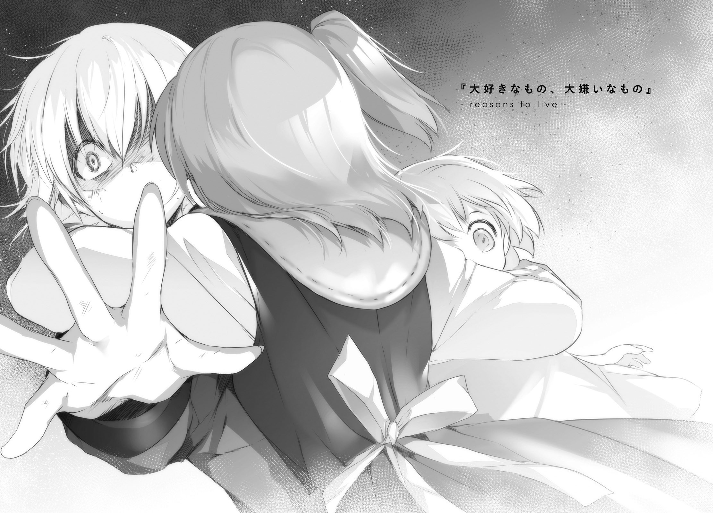
１．ティアット
机に向かったアイセアが、難しい顔をしている。
広げたメモに向かってうなってみたり、頭を抱えてみたり、鼻と唇の間にペンを挟んでみたり、奇声をあげて天井を仰いでみたり、果てには机に突っ伏してメモを散乱させたりしている。
見た目が大人であるせいで、子供っぽいそれらの仕草との間のギャップがすごい。
「......何やってるんですか」
呆れ半分と義務感半分。それにほんのちょっとだけの心配を加えて、ティアットは尋ねた。「んあー」とアイセアは顔を上げて、
「ちょっち知りたいことがあったんで、昨日、こっそり一位武官のとこで資料もらってきたんすよ。そしたらまぁ、逆にわかんないことが増える増える。......ああ」
ぎし、と音をさせて椅子ごと振り返る。
「ウワサのちびちゃんたちには会わなかったけど、例の少年には偶然会えたっすよ。フェオドール君。なかなか好人物っぽいコじゃないっすか」
「......外面だけだから。中身はすんごい性格悪いから」
「そっすか？ まぁ、仲良しさんが言うなら、そうかもっすね」
「仲良くないから、すっごく悪いから」ティアットは首を振って、「それで、どうでした？ 元気そうでした？」
「んー？ ちょーいと疲れてる感じはしたけど、元気っぽかったっすよ？」
そうですか、とティアットは答えてそっぽを向く。
フェオドールが元気。ということは、たぶんラキシュもパニバルもマシュマロもリンゴも元気ということだ。もし一人でも調子を崩したままだったら、あいつも一緒にへこんでいたはずだ。
あいつ、そのへん、妙にわかりやすいから。
噓つきなのに、本当にわかりやすいから。
「んんー？」
先輩妖精が何やらむかつく笑顔でこちらを覗き込んできたので、話を変えようと思う。
「それで、何の資料をもらってきたんです？」
「あー、先月のあんたらの大騒ぎっすよ。ほら、港湾区画を落としたって時の」
んぐ。墓穴を掘った......というか、思いきり勢いをつけて飛び込んだ気分。
「巨大飛空艇の中に〈獣〉が持ち込まれて、このままじゃ島ごとやられてしまうから、みんなでがんばって突き落としました......とまぁ、一見した時点ですでにわけがわからない事件なんすけど、資料を重ね合わせて読んでいくと、わかることとわからないことがモリモリ増えていくんすよね、これ」
「......どういう意味ですか？」
どうやら、自分とフェオドールの立ち回りの話とは関係がないらしい。改めて尋ねる。
「どうって......そうっすね。〈獣〉が自力で飛空艇の中に巣食うなんて可能性をまず排除して、これが『小瓶』を使っての犯行だと言い切るところから始めるっすよ」
アイセアは少し考えてから、「へいコロン」と、ベッドの上で奇妙な体操に興じていた少女の名を呼んだ。
「んー、なんだ？」
「例えば、コロンが例の『小瓶』を使って浮遊島を殺したいと思ったら、どこにどういうふうにしかけるっすか？」
「ぬ!? ぬぬぬ......」
想像もしていなかっただろう質問を投げつけられて、コロンは目に見えて焦る。
「し......島のまんなかで割る、かな？」
それはそうだ、とティアットは思う。
なにせ『小瓶』とやらの中身は〈十一番目の獣〉。壊すことも燃やすこともできない悪夢の産物だ。一度解放されたなら、対処法はただひとつ。そいつの侵食を受けたものや場所を全て切り離して地上へ捨てるしかない。
つまり、切り捨てることができない場所で侵食を始めさせれば、その瞬間に勝利が確定する。
「そうっすね。それが最適解。そういう目的が設定されてたなら、あたしでもそうする。爆発で衝撃を与えて侵食を早めたってアレも本来は余計。わざわざあんなことしなくたって、ほっときゃそのうち確実に島は吞み込まれるんすからね」
「......つまり、あれは島ごと侵食することが目的じゃ、なかったと......？」
「そう。少なくとも主目的ではなかった可能性が強いっすね」
アイセアははっきりとうなずいた。
「じゃあ、何が目当てで？」
考えられることとしては、例えば、ウルティーカ。護翼軍の所有する最大最強の飛空艇を落とすことが主目的だった、というものだろうか。
いや、その中に入り込んで爆弾やらなにやらを仕込めていた相手だ。〈獣〉なんて究極の切り札をわざわざその場所で使う意味は薄い。
「最初に港湾区画を押さえたことと、爆発によって解決までの制限時間を区切ったこと。この二つの意図が鍵のはずなんすよ」
うーん、と腕を組んで考える。
「実験......というか、各種のデータ取りっすかね」
「説明」
「例の夜、護翼軍はベストに近い動きをして、被害を最小限に抑えた。例のフェオドール君のお手柄っすね」
む。悔しい気もしたけれど、それは認めないといけない。
「そこで、そうならなかった場合のことを考えてみるんすよ。顔の見えない敵さんの計画が順調に進行してた場合、どうなってたか」
言われた通りに、思い出してみる。
最初に起きたのは爆発騒ぎ。
あの騒ぎが煙幕になり、〈獣〉の侵食の発見は遅れるはずだった。そういうセコい手はむしろこっちのお家芸だというフェオドールがネタを見抜かなかったら、あと三十分ほどは対応が遅れていたはずだ。
三十分。それだけあったら、被害はどれだけ拡大していただろう。
時間とともに、〈獣〉の侵食は確実に進む。おそらく港湾区画のほぼ全部と、隣接する工場区画の一部までを切り落とさなければいけない事態に......
「......あれ？」
「何か気づいたっすか？」
「島、墜ちない......ですね」
「そうっすね。第五師団が普通に全力を尽くせば、けっこうギリギリのところで、この島そのものは命を繫ぐ。そのくらいの仕掛けだったはずっすよ」
「でも、じゃあ、なんでわざわざそんなことを」
「なるほど、そういうことか」
いつの間にそこに入ってきたのか、ナックス・セルゼルが壁を背に立っている。
「ナックスさん？」
「あんときにも、違和感はあったんだよ。最初の連続爆破にしても、後から追加で爆発した一発にしてもな、仕掛けが凝ってるくせに決め手になってない。なんというか、護翼軍を挑発してるようなやりかただった」
色鮮やかな髪をかきむしり、
「あれは、本当に挑発だったんだな。敵の目的は、護翼軍が全力を出さないと島が墜ちるような危機を演出すること。そして、その危機に際して動く護翼軍の動きを観測することのほうだった」
「......まぁ、そうっすね。あたしの予想も、そのあたりが落としどころっす」
な、
「なにそれえええ！」
潜伏中の身であるということも忘れ、ティアットは大声を出していた。
信じたくなかった。
「たぶん敵さんは、どこかからあんたたちの奮闘を見てた。ティアットが門を開かずに済んだのは良い展開だったっすね」
なにそれ。なにそれ。なにそれ。
あの時は、本当に、死を覚悟したのに。命を捨てての全力で、みんなを......妖精倉庫の妹たちと38番浮遊島の、つまり自分のまわりにいたほとんど全員を、救えるはずだと信じていたのに。
それすらも、顔もわからないその敵の思惑の内だったということか。
「もしかしたら、『小瓶』と〈獣〉の性能についても、詳しい情報を持ってなかったのかもしれないですね。どのくらい使えるものなのかのデータを実地でとったとか」
「ありうるっすねぇ。だとすると、自陣に少なくとももう一発分は『小瓶』を確保してると見てよさそうっすけど......ここまでひねた考え方をする相手となると、それすらブラフって可能性も疑わないといけないっすよねえ」
ぼやくようにそこまで言って、アイセアはティアットとコロンに振り返る。
「例のフェオドール君は、あれからその辺りのことについて何か言ってたっすか？ 予想や憶測だけでなくて、感想みたいなのでもいいんすけど」
「へ？」
急に聞かれても、思い当たるものは特にない。コロンのほうに視線を向けたら、「なんもないぞ」とばかりに首を振られた。
アイセアは続けてナックスのほうを見る。フェオドールの個人的な友人でもある鷹翼種は、苦笑を浮かべて肩をすくめた。
「なるほど、ねぇ......」
ぎっこぎっことアイセアが椅子を揺らす。行儀が悪い。
「彼の洞察力が資料にある通りのものなら、いまあたしらが出してた結論くらいは、事件の当日中に出せててもおかしくない。それでも目だった行動がないってことは、何かを腹の中に抱えてるってことかも」
「なぁ、アイセア」
奇妙な体操を再開しながら、コロンが少し強い声で言う。
「フェオドールは、いいやつだ」
「ん、まぁ、そうっすね」
苦笑するアイセアの横顔を見ながら、ティアットは思い出す。
あの日、二人きりで対峙し剣を交えたあの時のこと。
眼鏡を外し、気弱そうな仮面を捨て去ったあの少年のこと。
──義兄さんは、言ってたよ。この世界はまだ、捨てたもんじゃないって。
──だから僕は、世界が義兄さんを殺した時に、その世界を捨てることに決めた。
そうだ。彼は、確かに、そう言っていた。
憤怒か妄執か憎悪かそれとも他の何かなのか。複雑に絡み合った強い感情をあふれさせながら、誓うようにして叫んでいた。
あの時の自分は、まともにそれを聞いていなかった。自分のことだけで頭がいっぱいで、フェオドールが何を考えていたかなど気にしてもいなかった。けれど、もしあの時の言葉が、彼がそれまで隠し通していた激情の吐露だったとしたら。
──種族総出で美談を演出したいっていうなら、守られるべきじゃない連中まで守ろうっていうなら、君たちはすべて、僕の敵だ。
──君たちの、邪魔をしてやる。
あの時彼は、怒っていた。
死にゆこうとするティアットに。その死によって守られることになる全てに。そして、そんな命の交換を許容するこの世界そのものに。もしもあれこそが、何ひとつ隠すもののない、彼の素顔そのものだったとしたなら。
彼が掲げる大義とは何か。
彼が信じる正義とは何か。
彼が求める未来とは何か。
それらのために、彼が選ぶであろう生き方は、何か──
「............ティアット？」
「ん、何でもない」
ひらひらと目の前で揺れるコロンの手を、優しく押し返した。
「悪かったっすよ。彼はあんたらの大事な友達だ、疑いたくはないっすよね」
そう言うアイセアの目は優しくて、しかしまったく笑っていなかった。
「あたしたちはもともと、〈六番目の獣〉と戦うだけのモノだった......そのために育って、死んで。それが当たり前だった。それがいつの間にか、まったくの別の戦場で、まったくの別の、顔すら見えない敵と戦ってる」
ぼんやりと、愚痴をこぼすように、言う。
「そういうのも全部終わらせるために色々やってるつもりっすけど......それがなかなか終わらないんすよねえ」
２．フェオドール
窓の向こう、太陽が傾いていく。
「あ」
机の書類を片付けながら、一位武官がそう声をもらした。
嫌な予感が、フェオドールの心中によぎった。
「まずったな。ポスの時間、過ぎちゃってる」
ポス、というのは、書簡回収を行う自律人形の愛称だ。
ライエル市では色々な都市機能が自動化している。郵便機能はその中のひとつで、毎日街中を走り回る自律人形たちが郵便物を回収し、仕分けし、配達する。信頼度は高く、よその都市で一般的な郵便公社よりも事故率は低い。ライエル市の機能があちこち麻痺し始めている今も、とりあえず問題なく動いている。
便利なものではあるが、難点がないというわけでもない。
まったくといっていいほど、融通が利かないのだ。決まった時間に決まった場所を巡り、書簡を回収したり配達したりする。その時間以外には、回収することも配達することもない。
「あー、こほん。フェオドール・ジェスマン四位武官、時間はあるかね」
「申し訳ありません一位武官。今日はこの後、外せない用事がありまして」
「え、なに、その定番の言い訳」
「いえ、これは本当です。その......リンゴたちを連れて買い物に出る予定が」
いろいろと必要なものがあるのだ。服の替えであったり新しい本であったりおもちゃであったり。リンゴがはしゃいで破ってしまったぬいぐるみを直すための針と糸と綿、マシュマロが感性のまま落書きしまくった壁や床の汚れを落とすための掃除道具。軍に常備してある機材で間に合うものばかりではない。
「すっかり父親だな」
「父としての責務を背負った覚えはありません。可愛らしい子を愛でているだけでそう評されるのでは、世の中の父親たちに申し訳が立たなすぎます」
ぺらり、と口先からそれっぽい言葉が出てきた。
「まぁ、そういう用事なら、少し頼まれてくれない？」
............。
「露骨に嫌な顔するねぇ」
「いえ、そんなことは。ですが私の用事も任務の一環ですから」
「心配しなくても、ついでで済む用事だ。書類をひとつ、市庁舎に届けてほしい」
言って、ぱたぱたと薄い封筒を振ってみせる。
「例の機械不調関係のやつだ。特に大急ぎで閉鎖しなければならない施設みっつと、応急処置のためにこちらで手配する技術者と資材のリストだ」
「なんでそんな重要なものを」
「今日はやたら書類仕事が多かったんだよ」
愚痴めいたことを言いつつ、一位武官が目をそらす。
正直を言えば面倒くさい、しかしその仕事自体は、誰かがやらなければ色々と困ったことになる類のものだ。
「......ところで一位武官。我らの将来を託すことになる未来の妖精兵たちに、たまには栄養をつけてやりたいと思うのですが。いえ護翼軍の糧食に栄養価がないという話では決してないのですが」
「お前さんて時々、優等生ヅラしたままでも遠慮がなくなるよな」
一位武官はやれやれと重たい息を吐いて、
「......領収書、もらっとけよ」
「もちろんそのつもりです」
もともとリンゴたちの世話は護翼軍の正式な任務の内であり、その過程で必要になった物資の費用は基本的に経費で落ちる。しかしさすがに、度を過ぎた贅沢をさせようとした場合はその限りではない。そういうことを成功させたいのなら、先に上司を脅しておくくらいの前準備は必要になる。
「お前さんがここまで娘を甘やかすタイプだったとはな」
「甘やかしてるつもりもないし、父親でもないですけれどね」
「まぁいいさ。多少の出費で済むなら安いもんだ。その代わり」
ちょいちょい、と丸っこい指先で手招きされる。
フェオドールは眉をひそめつつ、耳を寄せる。
「......任務の追加だ。お前さんの目で、少し街を見てこい」
言われていることの意味がわからない。
「心配事があるなら、憲兵科に頼ればいいでしょう」
「そうじゃない。お前さんの目で観察しろ、と言ってるんだ」
フェオドール・ジェスマンの......堕鬼種の目。
特殊な能力を使えという意味ではない。堕鬼種の瞳が持つ力のことは有名ではないし、そもそもほとんど役に立たない。ここで言われているのは、もっと別のこと。
騙すこと、謀ること、隠すこと、欺くこと。それら全てに通じる天下のひねくれ詐欺師種族の目をもって、見抜いてほしい何かが街中にあるということ。
「心当たりでも？」
「わからん。ただの杞憂かもしれん。だから行ってくれ」
確信はない、だからこそ信頼できる目を用いた情報が必要だ......そういう理屈。
筋は通っている。納得もできる。断る理由はない。だから、にっこりと笑って、
「そういえば、この前リンゴに似合いそうな服を街角で見つけまして」
「......好きにしろ」
もう一度だけ、上司を脅しておいた。
「うりゅっ、りゃっ、ほっ」
この辺りの道は、市の大通りから、少しだけ離れている。
ライエル市の常として、そういうところに走る道は、決して平坦なものにならない。小刻みに段差があるし、むき出しのパイプだのなんだののせいで、余すところなくでこぼこしている。
「手袋は外すなよ、このへんは油汚れひどいからな、素手で触ったらあとが面倒だ」
「うりゅう！」
うまく「うん」を言えなかったらしいリンゴが、ぴょんこぴょんこと飛び跳ねながら、元気よく答える。
「あきしゅー、おねがいー」
「はいはい」
一方で、あまりうまく走り回れていないマシュマロが、早くも色々と諦めてラキシュにだっこをせがんでいる。甘え癖がついているのはよくない傾向だとは思うが、肝心の自分たちのほうに甘やかし癖がついているのだからどうしようもない。
「買い物より先に、市庁舎のほうに寄っていいかな？」
「はい、大丈夫です」
そんな短い会話の後、言葉が途絶える。
祭りの日のあのやりとりの後、フェオドールとラキシュの間には、少し微妙な空気が流れていた。
好意や嫌悪とは違う。そういう、距離を変えればすぐに落ち着くような類のものではない。強いて挙げれば、気まずい、というのがもっとも近いだろうか。
「体のほうは、大丈夫？」
話題を繫ぐつもりで、そう尋ねてみた。
「あ、はい。その......心配かけてしまって、すみません」
よいしょ、とマシュマロを抱えなおしながら、ラキシュは答える。
「あれって、妖精兵には、たまにあることなんですよ。肉体の強さに似合わない熱量で魔力を熾すと、もともと仮初めのものでしかない人格のほうが不安定になる......んだそうです。体というより心の病なんです」
たぶん本人は、未知の病なんかじゃないから心配無用ですよと言おうとしているのだろう。けれどその説明じゃ、完全に逆効果だ。フェオドールの不安は募る一方。
「あの、あのですね。わたしの場合、その......魔力を扱う才能みたいなものがあるみたいで。普通に生きていても、なにかの拍子にぱぁって熾しちゃうことがあるんです。セニオリスを使った日とかもけっこう怖いですね、あれって魔力共振上限も増幅倍率も底なしの剣だから、ちょっと起こしただけですぐにわたしのほうが耐えられなくなっちゃって」
いつもより、ちょっとだけ早口。
いつもより、ちょっとだけぎこちない笑顔。
決して、笑えるような内容の話ではないと思う。けれどおそらく、それを指摘する必要はない。きっと話している当人が、誰よりそのことを理解しているはずだから。
「ティアットじゃないけど......やっぱり、クトリ先輩みたいにはできません」
また、その名前か。
妖精の少女たちの偉大なる先輩。最強の遺跡兵装セニオリスの先代適合者。数えきれない〈六番目の獣〉を討ち滅ぼしたとか、ヴィレムとかいう二位技官と禁断の恋に落ちたとか、色々と特別なエピソードの持ち主。
「別に、その人みたいにやる必要はないでしょ？ 君は君なんだから」
言いながら、なんて陳腐な物言いだと自分で呆れた。
手垢のついた、ただ相手を肯定するためだけの言葉。
けれど思い返してみれば、あの夜に剣を交えた後、ティアットに向けて贈ったものも、似たような言葉だった気がする。
騙す気も操る気もなく、素直に自分の中から出てきた言葉がそういう類のものだった。ということはつまり、フェオドール・ジェスマンという人格自体がそれだけ薄っぺらいということか。やれやれだ。
「そう......ですよね。わたしは、わたし」
「セニオリスなんて、使わなければいいだけの話。日ごろから熾しちゃってるっていうのは怖いから、それは気を付けて生きていくしかないけど」
「でも」
「少なくとも僕は、そんな理由のために君を失うのは嫌だよ」
「......え」
ラキシュの顔が、赤に染まった。
「え、と......」
その反応を見て、自分がまた言葉の選び方を間違えたのだとフェオドールは気づいた。違う、そうじゃない。自分がやりたかったのはそういう、恋愛ごとにこじつけられるような類の感情の話じゃなくて、もっと一般的で、もっと切実な、そう、あくまでも常識的な意味合いのもので。
「あきしゅ？ えどーる？」
マシュマロが二人の顔を交互に見ている。二人は小さく俯いて、黙り込む。
「あのっ」
「あのさ」
二人同時に顔を上げ、期せずして見つめ合い、そして、
「......あはっ」
「はは......」
笑い出す。
おかしかったとか楽しかったというより、笑うことしか頭に浮かばなかったからそうした、そんな感覚だった。
「あのさ」
いつの間にか立ち止まっていた足を再び前に運びながら、会話を続ける。
「これから変なことを言うけど、聞いてほしいんだ」
「変なこと、ですか」
「そう。こういう断りを入れておかないと、いつ憲兵科に追いかけられることになるかわからないくらいに、変なこと」
少し息を吸って、頭の中で言葉をまとめる。
あまり、人前で明かすべきことではない。けれど、いつまでも隠し続けていられることでもない。いつかは、この娘たちの前で、はっきりと言葉にしなければいけなかったことだ。そのいつかを、今にする。それだけのこと。
覚悟を決めて、
「僕は──」
話し始めた、その瞬間。
フェオドールは、自分たちの足元に伝わる、異様な揺れに気がついた。
３．マルゴ・メディシス
男たちが訪れた時、その塔は既に死んでいた。
壁やら床やらに埋め込まれていた機械類は、そのことごとくが動力を落とされていた。蒸気や雷気のパイプもすべて切断され、外部から途絶していた。
扉や窓は全て固く閉ざされ、ライエル市の紋章と『侵入厳重禁止』の看板が掲示されていた。さらにその下には、万一の侵入時にどれだけの刑が適用されるのかについてこまごまと書き並べられていた。
「......面倒と言や面倒だガ、都合がいいと言や都合がいいナ」
その男たちは、十三階の一室に立っていた。
窓辺に立てば、広いライエル市のほとんどを一望できる。
感情を隠す仮面の裏側からそんな景観を見下ろしながら、上機嫌とも不機嫌ともつかない声で、その男は呟く。
「いちいち機械に火を入れねェと、扉のひとつも開きやしなイ......」
低い駆動音が足もとに響いている。
地下で沈黙していた、非常用の動力炉を無理矢理に動かしたのだ。
その際、大急ぎで通常の出力レベルを確保させるために、一種の暴走状態と言ってよさそうなレベルで機械には無理をさせている。確実に寿命は縮むだろうが、男たちにとってはどうでもいいことだ。自分たちの用事が終わるまで保ってくれればそれでいい。
そういった理由で、一時的にだが、この塔の機械類は本来の働きを取り戻している。
手間はかかるし、無駄なリスクを負うことにもなった。しかし、そうしなければ塔の中の移動ができないのだから仕方がない。
「......だガ、侵入禁止区域だから部外者の目を気にしなくていいというのハ、実に有り難い話だナ。お前もそう思うだろウ、マルゴ・メディシス？」
名を呼ばれ──
対峙する小柄な仮面が、ぴくりと体を震わせた。
「名乗った覚えはなかったはず、です」
「無論、調べたのだとモ。商売相手の素性を知ることハ、我々にとっては死活問題でもあるのだからナ」
「......そう、ですか。さすが、元は旧エルピス屈指の奴隷商人。後ろ暗いことの自覚があると、用心深くもなるのです、ね」
くくく、と男は低く笑う。
「こちらこソ、素性を明かした覚えはないのだがネ」
「無論、調べ、ました。取り引き相手の素性を知ることは、ワタシにとっても──」
「取り引き相手。くくく、演技はそこそこなれど、芝居は世辞にも上手いとは言えんナ」
その場の全員の間に、沈黙が満ちる。
ティアット・シバ・イグナレオは、その会話を、かろうじて耳にしていた。
以前に流れた『小瓶』の取り引きを仕切り直すにあたって、あの商人はこの塔を選んだ。その判断は、賢かったと言っていいだろう。動力炉に火が入るまで全ての扉が閉まっていたのだから塔内に先客がいるはずがない。ひとつの階の広さは限られているから、少ない手勢でも、十三階全体をカバーして警戒しきれる。あとは真上と真下を警戒すれば、ひとまず完璧だと言えるだろう。
塔内のどこにも、隠れてこの取り引きを監視できるような場所は残っていない。
そして、あの商人が把握していたかは分からないが、小柄な仮面の人物......先ほどマルゴと名を呼ばれたほう......は、非常に鋭い感覚の持ち主だ。近くで魔力を熾す者がいた場合、すぐにその気配を察して逃げの一手を打つほどに。それはつまり、魔力法を用いて身を潜めるタイプの攻略法は通用しないということでもある。
しかし今ティアットが潜んでいる場所は、そのどれでもない。
（......寒い）
塔の外壁に背中で張り付いて、ティアットは小さく身を震わせた。
風が冷たい。
下を見ると、さらに背筋が少しだけ寒くなる。
もちろんここで足を滑らせたとしてもだ。これだけの高さがあれば、翼を生み出すだけの魔力が熾せる。充分間に合う。地面に叩きつけられることはない。それはわかっているのだが......やはり、こういうのは、落ち着かない。
「演技に、芝居。どういう意味です、か」
警戒も露わに、小柄なマルゴが問いかける。
「文字通りの意味だとモ。お前の真意は、とうに割れていル」
勝ち誇るように宣言すると同時、毛深い指を弾く。
護衛の男たちが、マルゴを取り囲むように動く。
「どういうつもり、です」
「ただの自衛だとモ。この命を狙う暗殺者ヲ、捕まえようと思ってナ」
「............」
「調べたと言っただろウ。旧エルピスに名を登録していた商人ガ、最近になって何人も命を失っていル。その全員の共通点としテ、怪しげな取り引きを進めていた最中だったというものがあっタ......」
五人の男に囲まれ、マルゴは慎重に左右を窺う。
「さテ、取り引きの続きダ。手持ちの『小瓶』を全て、渡してもらおうカ」
（──どうしよう）
寒さに軽く身を震わせながら、ティアットは考える。
会話の流れはよく分からないが、ひとつだけ、直観できたことがあった。
あの、マルゴ・なんちゃらとかいう小柄な仮面の人物は、まだ子供だ。
たぶん、十五の自分よりは、いくつか下の。
体が小さいのは、そういう種族だからではない。少なくともそれだけが理由ではない。声を変えているのは、自分の声を特定させないということだけでなく、年齢についても大きな手がかりを与えてしまいかねないからだ。
けれど......それがわかったところで、何だというのか。
自分たちの任務は、あのマルゴの持っている『小瓶』すべての回収なのだ。
今すぐ飛び出ていって全員を制圧することは、たぶんできる。このタイミングで奇襲できれば、前回のようにマルゴを取り逃がすこともないだろう。しかしそれでは、今この場にマルゴが持ってきている『小瓶』だけしか回収できない。こいつに仲間がいて分けて持っている可能性などを考えると、うかつな動きはできない。
（コロン）
視線を向けると、同じように外壁に張り付いた桜色の友人が、困った顔をした。
へくし。
困った顔ついでに、コロンの口から、小さなくしゃみが漏れた。慌てて室内の様子を窺う。どうやら風の音にまぎれてくれたらしく、誰も気づいていない。ほっと胸をなで下ろす。
「身に覚えがない......と言っても、信じてもらえそうにないです、ね」
「よく理解しているようダ」
「渡せる『小瓶』はひとつきり、です。対価も、お話ししていた通りに、頂きます」
「その取り引きは、とっくにお流れダ。今お前が考えなければいけないのは、別の取り引き。『小瓶』すべてと、自分の命の交換についてダ」
男の一人が、動いた。
その手の中に抜き放たれたナイフが、鈍く輝いた。
突撃する先、狙いは、マルゴの背中。
しかしもちろん、今日まで護翼軍の追撃を振り切ってきたマルゴの用心深さは、並のものではない。襲われる可能性を最初から考慮に入れていたか、不意をうたれた風もなくその場で軽く身をひねる。ナイフの切っ先は軽く外套をかすめ、姿勢を崩した男はそのまま床へと倒れ込む......
その場の誰もが、そう思ったはずだった。
ティアットも、コロンも、そしておそらくマルゴもナイフの男も他の男たちも。全員でその未来予想を共有していたはずだった。
その場の全員が、知らなかった。
この塔の動力が落とされ、外部から切り離されていた理由。侵入厳重禁止とされ、全ての扉が鎖されていた理由。
この塔を構成する機械は、疲弊に疲弊を重ね、とうに限界を超えていた。圧力を逃がす弁が錆び、蒸気を運ぶパイプが歪み、異常を知らせるアラームが壊れていた。一度小さな爆発が起きて、市庁舎の技術者が調査して極めて危険な状態にあると判断、その日のうちに切断処理と、施設としての閉鎖の手続きが終了した。それが、今から三日ほど前に起きたことであり、この塔が既に死んでいた理由だった。
そしてもちろん、整備も修理もせずに非常用動力炉を動かしたということは、状況を致命的に悪化させた。逃げ場のない圧力は、三十分以上の時間をかけて、破滅的な力をゆっくりとたくわえていき、そして──
爆炎と轟音と無数の鉄片とを撒き散らしながら、弾けた。
塔が、激しく揺れた。
窓が、次々と割れた。
その振動は、外壁に張り付いていた者たちを引きはがし、振り落とした。
マルゴの姿勢が崩れた。自ら倒れ込むようにして、背後に迫っていたナイフのほうへと落ちてゆく。
幼い肉に、薄汚れた鋼の刀身が、めり込んでゆく。
苦悶の悲鳴を吐き出すために、マルゴの口が歪む。
塔が、傾き始める。
壁が大きくきしみ、割れ、無数の破片へと砕けて、十三階の高さから落ちてゆく。
護衛の男たちが、状況を把握し始める。
商人が、慌てて姿勢を低くする。
マルゴのふところから、複数の何かがこぼれ落ちる。
その何かが床に落ちて、澄んだ音とともに軽く弾む。
内側に黒い何かを封じ込められた、てのひらに載るサイズの硝子玉。
商人が口を開けた。「それだ」とでも言いたいのだろう。
マルゴの目が、落ち行くそれらの硝子玉へと向いた。いけない、と視線が叫んだ。
床は、もはや立っていられないほどに傾いている。当然、硝子玉は、下に向かって──つまり十三階の高さの虚空に向かって、転がり始める。
ナイフを手放した男が、手を伸ばす。届かない。
割れた外壁から、二人の少女が飛び込んできた。少女たちは一瞬だけ左右を見渡すと、迷わずに、地面を転がる硝子玉へと手を伸ばした。
摑んだ。
こぼれ落ちた硝子玉はみっつ。そのうちひとつは、マルゴがその手にひろい上げようとしている。そのことを、ティアットとコロンは確認した。
アイセアの情報によれば、いまこの浮遊島に持ち込まれた硝子玉、『小瓶』は全部でみっつ。つまり、あのひとつを確保することができれば全ては終わりだ。そのための障害──武装した男たち──はまだ残っているが、大した問題にはならないだろう。
「うごくな！」
コロンが、あまり迫力のない声で、降伏を勧告した。
「話はあとで、しっかりきかせてもらう！ だから今は、おとなしくしろ！」
──誰も、見ていなかった。
誰も、気づいていなかった。
マルゴ・メディシスのふところからこぼれ落ちた硝子玉の数は、実はよっつ。
拾い上げられなければならなかった『小瓶』の数は、やはりよっつ。
数えられなかった最後のひとつは、傾いた床を静かに転がり、砕けてなくなった壁の向こう側へと飛び出していって。
傾いた塔の、はるか下。
誰にも見えないところで、誰にも聞こえないくらいの小さな音で。
硝子玉が、割れた。
４．闇の中へ
「う......」
ゆっくりと、目を開く。暗い。
意識が混濁している。いま何が起きたのかを、すぐには思い出せない。
ラキシュとリンゴとマシュマロを連れて、街を歩いていたのだ。
市庁舎へ向かう近道、少しだけ表通りを離れた場所にいた。
大切な話をしようと、一度、足を止めた。
それから......そう、足もとの振動に気づいた。
そしてどうやら、その気づきは遅すぎた。耳朶を通して脳を揺さぶるような轟音。全身に叩きつけられるような振動。足元がなくなるような浮遊感。天蓋が落ちてきたような圧迫感。
あと数秒でも早く危険に気づいていたならば、また違う行動がとれていたかもしれない。けれど事実として、混乱の中でフェオドールにできたことはふたつだけ。マシュマロを抱いたラキシュを突き飛ばしたことと、手元にいたリンゴを捕まえて、全力で胸の中に抱きしめたことくらいだった。
「......いたい、おもい」
腕の中から、抗議の声が聞こえてきた。少なくともリンゴのことだけは無事に守れていたらしいと、苦しい息の下、ほっと一息つく。
激痛。
改めて、状況に気づいた。自分たちはどうやら、ライエル市地下に張り巡らされた整備用地下道にいる。小柄な種族と自律人形の体格に合わせて設計された、あまり居心地がいいとは言えない場所。壁の計器がうすぼんやりと放つ光が光源となっているため、曖昧にではあるが辺りの様子は見てとれる。
そして、自分の下半身は、壁だか天井だかわからない何かの、下敷きになっている。うまく隙間にはさまる形になっているのか、完全に潰れるようなことにはなっていないが、かといって簡単に抜け出せるものでもない。
激痛の源は、ここからではよく見えないが、左大腿部。得体の知れない喪失感も伴っている辺りからして、相当派手な出血もしているはずだ。
「......ぐ」
体にうまく力が入らない。足を引っ張り出すどころか、壁だか天井だかをわずかに動かすことすらできない。このままではまずいと思う。時間が経てば血が減る。血が減ればそれだけ脱出が難しくなる。死が近づく。
死。
こんなところでいきなりそんなものを迎えて、自分の人生は終わるのだろうか。
いや、分かってはいるのだ。死はドラマチックなものでも特別なものでもない。本人のあずかり知らないところにある文脈に乗っかって、ある日突然に目の前に舞い降りてくるものだ。
故郷が滅びたあの日、そうやって唐突な死に吞み込まれていった人々を、大勢見た。
自分はたまたま、あの日あの場所での死からは逃れることができた。けれど今この場で訪れた死からは、どうやら逃げられない。
「だだ大丈夫、大丈夫ですかっ!?」
なんとなく意識が薄れ始めたような気がした瞬間に、その声を聞いた。
その次の瞬間には、下半身を押さえていた圧迫感が、消えていた。
改めて目を開いて、振り返る。巨大な石材を、ラキシュが両腕で持ち上げていた。
気の弱い、明らかに非力そうな少女の細腕が、力自慢の大男を何人集めても太刀打ちできなさそうな重量を支えている。それは、異様な光景だとしか言いようがなかった。
「魔力法は......使っちゃ、駄目だ......」
痛みにうめきながら、言うべきことは言っておく。
「君の体の......負担になるんだろ......？」
「そそ、そんなこと言ってる場合じゃないですよう！」
半分べそをかいたような顔で、ラキシュは天井だったものを放り棄てた。
軽々としか言いようのない仕草で放られたそれは、大地ごと揺るがすような轟音とともに壁にぶつかり、共に砕けて辺りに散らばった。
痛みもひどければ出血も大量、熱の持ち方からして骨も派手にやられている。太い動脈は無事だったことだけは不幸中の幸いだろうか。ラキシュの肩を借りながらであれば、なんとか歩くことはできそうだ。
「天井までよじのぼるのは難しい、か......」
足の傷の応急手当てを終え、改めてフェオドールは辺りを見回した。
瓦礫の数が、かなり多い。とはいえ地下道の道を完全にふさぐほどではないらしく、歩き回ること自体は出来そうだ。そしてその一方で、たったいま呟いた通り、頭上の穴は多少遠いところにあるうえ、瓦礫が何重にもひっかかっている。
「あ、あの。わたし、飛んでいけますから、ロープでもあれば......」
ここぞと自分の存在を主張するラキシュの額を、フェオドールの指が弾く。
「いたっ!?」
「何度も言わせないでよ。魔力は使っちゃだめだ。障害物がないならまだしも、あれだけの瓦礫を再崩落しないようにどけながら飛ぶとか、かなり負担が大きいんじゃないか？」
言われて、ラキシュは黙り込む。フェオドールは自身で魔力法を扱えないため自信がもてなかったが、どうやら当事者も同意見だったらしい。
「......でも、いつまでもここにいるわけには......」
「もちろん、それはそれで危険だな。だから、あっちから通路を探す」
言って、地下道のほうを指し示す。
「道、わかるんですか」
「さあ。でも少なくとも、どこかに出口はあるはずだよね」
「でも、フェオドールさんの足」
「そりゃあ死ぬほど痛いけど、別にこれだけで死ぬと決まったわけじゃないさ」
脂汗をかるくぬぐって、格好をつける。
地下通路は入り組んでいて、まるで迷路のようになっている。
視界の狭さや天井の低さなども相まって、実際以上に広く長いように錯覚もしてしまう。歩いているだけで、どんどん気が滅入ってくる。
その状況で救いとなるのは、リンゴとマシュマロの二人の存在だった。
幼い妖精たちは死を理解しないという。そのためか、今のこの危機的状況も、二人にとってはちょっと非日常感を味わえる刺激的なアクシデント程度にしかなっていないらしい。薄暗い地下通路をじりじりと進んでいくというシチュエーションは二人とものお気に召したのか、先ほどからずっとご満悦の笑みを浮かべっぱなしだ。
「さっきの話の続きだけど」
ちょっと情けない姿かななどと思いつつ、ラキシュの肩を借りて歩いている。
「落ちる前に、言いかけてたこと」
「あ......はい」
「僕はね。今の浮遊大陸群は一度滅びるべきだと思ってる」
「え？」
数秒ほどの間。
マシュマロの、調子っぱずれの鼻歌が聞こえる。
「え、え？」
「平和すぎる。豊かすぎる。だからみんな、滅びのことを忘れている。滅びに抗うためにどれだけの犠牲が払われているのかが、頭から抜けてしまっている」
「え、でも、それは」
「元凶は、おそらく数字だ。いまもこの大陸群には、百近い数の浮遊島が生き残っている。これは、謙虚さを忘れずにいるためには、多すぎるんだ」
これは、フェオドールの本音のひとつだ。
かつて世界を救わんと望んだ男を義兄に持つフェオドール・ジェスマンという個人が、優等生の仮面を捨てて初めて吐露できる、ずっと胸の奥に抱えてきた希望だ。
「たぶん......十か、もう少し少ないくらいの島がいい。それだけ残して、他の島を全て沈める。そうすれば、もう、その十の島の住人は、生きることで精いっぱいになるはずだ。生きていられることに感謝し、自分を生かしてくれている全てへ感謝するはずだ」
世界の終わりを生きる者たちの輝きは。
もちろん、世界の終わりの中でしか、その価値を知られることはない。
守る力を持つ者の尊厳は、正しく守られる者たちの心の中にしか保たれない。
「そうすれば、誰もが、君たちの存在にちゃんと感謝する」
「私たちは、別に、そういうのが欲しいわけじゃなくて......」
「君たちの、そういう態度にも責任はあるんだぞ」
再び、フェオドールの指がラキシュの額で弾ける。
「搾取される側が何も言わなかったら、搾取する側は、死ぬまで他人から搾り取るのが当たり前っていう生き物に堕ちていく。誰だって際限なく甘やかされたら、堕落するんだ」
「......はい」
ラキシュが、返す言葉を失う。
「どうして、そんな話をわたしにするんですか？ その、わたしが憲兵のひとたちに話したら、大変なことになりますよね？」
「君は話さないよ」
「それは、その、そのとおりなんですけど。どうしてそれを信じられるのかって」
少し答えに迷う。実際、どうして自分がこんなことをペラペラしゃべっているのか、フェオドール自身も把握しきれていない。パニバルの時のように、追いつめられているというわけでもないのに。
「信じる、というのは少し違うけど」
体重のかけ方を間違えて、左足の傷に激痛が走る。顔をゆがめる。
「もともとこの計画、護翼軍が隠していた秘密兵器を入手するのが前提だったんだ。僕が軍属になったのも、もとはといえばそのためでね。その正体が君たちだというなら、君たちの協力を得ないと、どちらにせよ始められない。いつかは話さないといけなかったことだ。だから、それを今話した」
そうだ、そういうことだ。自分に言い聞かせるように、後付けの理屈を紡ぐ。
「わたしたちが、必要......」
「そういうこと。まだ時間はあるから、返事は急がない。他の人に話すのは......まぁ、さすがにできるだけ勘弁してほしいけど」
「......フェオドールさんは」
どことなく重たい表情で、ラキシュは言う。
「全然似てないのに、やっぱりそっくりなんですね」
何のことか、とか。誰と比べてるんだ、とか。
そういう疑問は頭に浮かんだけれど、それを口にするよりも早く、
「えどーる、あきしゅ！ でぐち！ でぐちあったよ！」
マシュマロが駆け寄ってきて、軍服の裾を引っ張る。応急手当てをしただけの傷がひきつるように痛む。
準備されていたあらゆる言葉を押しのけて、悲鳴が喉の奥からった。
「えどーる、うるさい」
「だああ、マシュマロ、君ねぇ！」
「えどーる、おこった？」
「怒るよ！」
ずきずきと反響する激痛に、目尻に涙すら浮かんでくる。
きょとんとした顔でこちらを見上げるマシュマロを見ていると無暗に腹が立ってくる。命の価値がわからなくても、この際構わない。せめて、ちゃんと他人の痛みが分かる子供には育ってほしい。今からでもきっと間に合うと思うから。
「無事に帰ったらお説教だよ、まったく」
「せっきょ？ おせっきょ？」
「なんで嬉しそうなんだ......」
ふと、進行方向の先、リンゴの姿を確認した。
おそらくは出口なのだろう一枚の扉を開き、その向こうをぼんやりと眺めている。
「......リンゴ？」
名前を呼ぶと、我に返ったように振り返る。
「ふぇどーる」
「どうした、何かあったのか？」
「んー」
リンゴはしばし考えて、
「くろい」
そんな、よくわからないことを言った。
猫でもいたのかな、と思う。
世の中に黒色のものはいろいろとある。けれど幼いリンゴの知る語彙はとても狭い。何か珍しいものを見つけたとして、それについて正しい言葉で表現できないことには何の不思議もない。
まぁ、ちょうどいい。これを機会に、ひとつ新しい単語を覚えてもらおう。
見たものや触れたものを介して自分の世界を広げていく、これは全ての者にとっての当たり前のこと。そして、とても小さな世界しか持っていない子供にとっては、この「当たり前」がとても大切な意味を持つ。
さて、そこにあるのは何だろうと思い、軽く左足を引きずりながら、フェオドールはその出口に近づき外の光景を見て、
「────────え？」
一瞬、頭が真っ白になった。
そこには確かに、黒いものがあった。
ほんの数分前まではおそらく瓦礫の山だったのだろう。そういう形をしている。けれどそれは、もはやそんな生易しいものではなかった。そうではなくなっていた。
黒色に輝く、美しい結晶。
「ふぇどーる。あれ、なに？」
袖を引くリンゴに、言葉を返せない。
もちろん、フェオドールはあれが何なのかをよく知っている。教えることもできる。けれど言葉が出てこない。それをしたら、目の前の光景を現実だと認めてしまうような気がして。
そんなフェオドールの当惑と葛藤をよそに──
瓦礫の中に解き放たれた〈重く留まる十一番目の獣〉は、静かに38番島の侵食を進めていた。
「逃げろ──！」
フェオドールは叫んだ。
「護翼軍に連絡を！ 市民を一人でも多く、一秒でも早く避難させるんだ！」
いつぞやの港湾区画での時とは、状況が違いすぎる。この位置で侵食を始めた〈獣〉は、地上に切り落とすことができない。つまり、この38番浮遊島をまるごと黒水晶に変え終わる時まで、その侵食が止まることはない。
今のこの〈獣〉は、まだ、それほど大きくない。それだけが、港湾区画での遭遇に比べてましだと言える点だ。けれどそれで、決定してしまった終わりが覆るわけではない。時間の猶予がわずかにあるということしか意味しない。
ゆるやかに死に近づいていたライエル市は、たった今、あっけなく死んだのだ。
だから自分たちにできることは、ただひとつだけ。これから増えるだろう被害を、少しでも抑えようとあがくことだけだ。
──それが矛盾した行いであることに、もちろんフェオドールは気づいている。浮遊大陸群の敵として多くの浮遊島を墜とすつもりでいる自分が、今さらわずかな人数の命を気にしたところで仕方が無いはずだと。
いや、矛盾なんてひとつもない。理屈で直観を抑えつける。自分の計画を本格的に動かし始めるのは、先の話なのだ。今はまだ、今の身分を守ることを考えなければいけない段階。これは、護翼軍の優秀な四位武官としての演技の一環なのだ。
「ラキシュさん、二人を連れて、今すぐ一位武官のところへ！」
「フェオドールさんは!?」
「この足じゃ、一緒には行けない。別行動で市庁舎に連絡を入れてくるから──」
これはもう無理かなと、頭の片隅だけで考えた。
たぶん自分は助からないだろうと、フェオドールは直観していた。〈十一番目の獣〉の侵食速度は決して速くない、しかしそれは余計な衝撃をいっさい与えないでいた場合に限ってのことだ。これからこの都市の誰一人としてこの黒い恐怖に抵抗をしないとは考えにくい。自分のこの足では、まぁ、少なくとも楽観はできない。
だから、ここで死ぬにしてもせめて、この三人を巻き込みたくはない。
決めたんだ。自分より誰かを大切に思えるようなやつらこそ、ちゃんと生きていってほしい。そういうことが許される世界を造るために、自分の全てを使ってやるって。もう誰にも、自分の前で、義兄──そしてもしかしたら、ヴィレム某とかいうやつと、クトリなんとかという偉大なる先輩も──みたいな死に方はしてほしくないって。
だから、少しでも、長生きしてほしい。ラキシュにも、リンゴにも、マシュマロにも。ティアットにも、パニバルにも、コロンにも。そのためなら──
「ねえ」
緊張感のない声。
「ふぇどーる、あれ、きらい？」
リンゴの声。
「ああ、大っ嫌いだ」
反射的にそう答えながら、辺りを見回す。見れば見るほど、わけがわからない状況だ。機械仕掛けの塔がひとつ、根元から派手に傾いている。辺りに降り注いだ瓦礫は、あそこからのものだろう。そして、見える範囲に人影はない。パニックが起こらないことをありがたく考えるべきか、情報の拡散が遅れることを忌々しく捉えるべきか。
何がどうなって、こんな大惨事になったのか。知る由はない。
「ふぇどーる、あれ、きらい......」
リンゴの声が何かを言っている。
自分たちの現在位置を確認し、この塔のことについてひとつ思い出した。市営気象観測塔。危険だからとつい先日に閉鎖された市営施設のひとつだ。そいつが今こんな無残な有り様をさらしているということは、閉鎖処置が間に合っていなかったのか、それとも別の要因があったのか。
「わかった、りんごも、あれ、きらい」
考え事のせいで、気がつかなかった。
対応も、致命的に遅れた。
するりとフェオドールの隣をすり抜けて走っていく小さな人影に、気がつかなかった。
「あ......」
「ばっ......」
どこから拾い上げたものか、小ぶりな金属の棒を振り上げて、リンゴが走っていた。
体が動かない。一瞬が永遠に引き延ばされる。まるで世界中の何もかもが止まってしまったかのような錯覚の世界の中で、リンゴの後ろ姿だけが、ぐんぐん遠ざかっていく。
泣きだしそうな顔のラキシュが、何かを叫んでいる。止まった世界に音はない、何と叫んでいるのかは聞こえない。けれどだいたい内容はわかる。そしてきっと、今この瞬間、自分も同じようなことを叫んでいるのだろうと思う。
カン。
金属棒が、黒水晶を叩いた。
〈十一番目の獣〉は、加えられた衝撃を侵食の勢いに変換する。みちり、小さな音をたてて、金属棒だったものが一瞬で黒水晶へと変わる。
リンゴの右手が、黒く輝いている。
バカ、やめろ。
今ならまだ何とかなる、右手を切り落とす必要はあるが、命だけは助かる。
そう叫びたかった。
声が出なかった。
リンゴは不思議そうに自分の手を見ると、すぐに興味を失ったように〈十一番目の獣〉に向き直ると、足で強く踏みつけた。
再び、侵食は一瞬。
靴を。踵を。脛を。〈獣〉は一瞬で食らい尽くす。
絶望が、フェオドールの意識を真っ白に染めた。
リンゴはバランスを崩した。転びそうになったので、左の手を近くの瓦礫についた。たったそれだけで、手のひらが黒水晶に同化した。
うー、と、リンゴは不快を露わにした。
嫌いなものを打ちのめしたいのに、そのための手段がない。右の手は元金属棒を握りしめたまま固まっているし、その元金属棒は叩いた場所にぴったりくっついたままびくともしない。左の手はぺったりと瓦礫に貼りついている。両足についても似たようなもの。
リンゴは、考えたのだと思う。
そして、気づいたのだと思う。手も足も動かなくても、自分にはあとひとつだけ、嫌いなものをやっつける手段の持ち合わせがあるのだと。
フェオドールに呪脈視の力はない。つまり、熾された魔力を知覚するような便利な特技の持ち合わせはない。
それでもわかる。いま、リンゴの体が、何かに包まれている。
リンゴ自身の内側から溢れだす何かが、小さな体を覆っている。
なぜか、いつぞやのティアットとの言い合いを思い出した。
自分の命を捨てて誰かを救う、そんな理屈は、フェオドールには受け入れられない。
誰かの命を犠牲にしなければ生き残れないような命なら、消えてしまえ。
そう思っている。信じている。
だから、やめてくれと。
祈っても、願っても。
「やめ──」
白。
圧倒的な純白が、視界と意識の全てを塗り潰す。
知識としては知っている。妖精郷の門を開く、というやつだ。かつて〈六番目の獣〉との戦いの中で多用された、妖精兵の本来の使い方。
正しく命を持たない者にのみ可能な、魔力法の裏技。活力と相反する要素である魔力は、生命力の乏しい者ほど強く激しく熾すことができる。だから、生命力を本来持たない者であれば、理屈の上では、熾せる力に際限はない。
もちろんそんな桁外れの力を制御などできるはずもないのだから、利用法は一つだけ。その場で肉体ごと弾けて、何もかもを吹き飛ばす。それだけだ。
伸ばした手は、誰にも届かず、誰にも触れえず、誰にも摑めず。そして。
光が。
全てを。
どれだけの時間が、経ったのだろう。
青い空が、見えていた。
ぼんやりとそれを見上げていたフェオドールは、突然に、我に返る。
傷が痛い。
つまり、自分はまだ生きている。
妖精郷の門が開いたその場所にいた者は、跡形も遺さずに消え失せるはずだ。そのはずなのに、自分は今、消え失せずにこの場に立っている。
それはいったいどういうことか。答えはひとつ。妖精郷の門は、開いてなどいなかったのだ。リンゴは、その命を捨てたりなどしていなかったのだ。
希望が、フェオドールの脳を縛った。
あらゆる理屈を捨てて、ひとつの幻想にすがりついた。
そうだ。間に合うんだ。リンゴはまだここにいる。何も失われてなんていない。あいつはいつも通りに元気なままだ。声をかければ、目を合わせれば、また「ふぇどーる」と名前を呼びながら突っ込んでくるに決まってるんだ。
視線を、ゆっくりと下ろす。
大地に、大きな穴が開いている。
三、四階建ての建物をひとつふたつまるごと吞み込めそうな、巨大な穴だ。
その内側にあったであろうものは、全てが姿を消していた。そして外側にあったものも、溶け、灼かれ、捻じれ、吹き飛び、ことごとくが原形を失っていた。
「あ......」
声が、漏れた。
「......気がつかれ、ましたか......」
か細い声を、聞いた。
その時になって、自分がマシュマロとともに、一人の少女に力強く抱きしめられていることに気がついた。
「え......」
燃えるような、赤毛。
一瞬、それが誰だかわからなかった。
「よか......った......」
それでも、声に聞き覚えがあった。
気弱で、穏やかで、優しくて、家族のことが大好きなその娘の声を、今さら聞き間違えるはずもなかった。
「ラキシュ......さん......？」
少女の腕から、力が抜ける。
ずるり、と、滑るようにして、その場に崩れ落ちる。
今この場で何が起きたのかを、フェオドールはようやく理解した。
リンゴは確かに、妖精界の門を開いたのだ。
辺りの何もかもを消し去る白い暴虐を、解き放ったのだ。
そして本来、フェオドールたちもその暴虐の渦から逃れることはできないはずだった。けれどそこで、ラキシュが盾になった。四人の妖精兵たちの中で最高の素質を持っているという彼女は、彼女にできる限りの魔力を熾し、腕の中にいた二人を守りきった。
そして、その後は。
肉体の強度を超えた魔力の熱が、本来仮初めのものでしかない人格を不安定にする......と彼女は言っていたか。おそらくはそれが、彼女に起きたことの全て。フェオドールとマシュマロ、二人を守るために、ラキシュは自分自身の心を燃やし尽くした。
リンゴとラキシュが。
大事な誰かのために。
自分の命よりも大切な誰かのために。
文字通り、自分たちの体を投げ出して。
──僕はね、美談ってやつが、好きじゃないんだ。
──世界でも他人でも何でもいいよ。とにかくそういうのを守って、本人だけが満足して死んでいくってやつが、昔から、とにかく大嫌いなんだよ──
フェオドールは叫んだ。
叫びの中身は、自分自身でも分からなかった。
すぐに喉が限界を超えた。
声がまったく出なくなって。それでも、少年は叫び続けた。
５．闇の中を
昼と夜とが、交互に巡る。
任務を終えたというティアットとコロンが帰ってきた。
ラキシュは──あれからずっと、眠り続けている。外傷などひとつもないはずなのに、目を覚まさない。名を呼んでも。手を握っても。頰を叩いても。何をしても。まるで、心そのものをどこかに落としてきたかのように。
「二人の名前のこと、覚えてる？」
問われて、フェオドールは顔を上げた。
医務室のベッドの上。
左足の傷は、いまだ完治していない。麻酔の切れた夜中などには、今も泣き叫びたくなるような痛みを生み出してくれている。
「え？」
「リンゴとマシュマロの、正式な名前。妖精倉庫に連絡してたじゃない」
ティアットの言葉を受けて、記憶をたぐる。ああ、確かに、そんな会話をした覚えがある。過去に使われた妖精の名前をつけるのはタブーであるから、正式な名前をつけるまでの間、ニセモノの安易な呼び名を使うという話だったか。
「覚えてるよ」
笑みを浮かべて、フェオドールは答えた。
心中を隠して笑うことには自信がある。なにせ自分は、堕鬼種なのだから。
「それが、どうかした？」
「返事が来たの。二人のちゃんとした名前、ラーントルク先輩がつけてくれた」
「あー......」
そうか。それはそうだ。当たり前だ。
いつか来る日というやつは、いつ来たところでおかしくないものだ。
いつまでも仮の名前のままというのは不便も多い。おそらくはそのラーンなんとかという先輩さんも、できる範囲で精いっぱいに急いでくれたのだろうとは思う。
ただ、間に合わなかった。
その名を受け取るべき相手は、もう、片方が欠けてしまっている。
「それでね、リンゴの本当の名前は──」
「いや」
首を振った。
「言わないでほしい。僕にとってあの子は、これからもずっと、リンゴだよ」
「でも」
「君たちがこれからどう呼び直そうと、構わない。ただ、僕はそこを譲らない」
「......うん」
ティアットは顔を伏せた。
リンゴが、〈十一番目の獣〉とともに消えた。
ラキシュ・ニクス・セニオリスが、眠ったまま、目を覚まさない。
この報せは、護翼軍第五師団に、希望と絶望とを同時にもたらした。最高戦力であるセニオリスが決戦時に使えないということは、間違いなく大きな絶望だ。しかし同時に、あらゆる攻撃が効かないとされていた〈十一番目の獣〉に、黄金妖精の魔力攻撃が通用するのだと判明したことは、極めて大きな希望になった。
なにせ、成体でもなければ遺跡兵装を携えているでもないリンゴでも、あの威力を出して〈十一番目の獣〉を消滅させられたのだ。きちんと完成された兵器であるティアット、コロン、パニバル、この三人の残弾であれば、どれだけの威力をもって敵を討ってくれることだろうか。
この発見は、フェオドールの功績であるとされた。
タルマリート上等兵には、これで三位武官への昇進も目前だなと皮肉げに言われた。
「じゃあ、ひとつだけ。マシュマロのほうの、新しい名前だけ、聞いて」
「どうせもうすぐ、その妖精倉庫に連れていかれるんだろ？ 二度と会わない子供の名前なんて、聞いてどうするんだ」
「それ、本気で言ってるんじゃないよね」
「............」
「寂しい抵抗はやめて。きみ、そういう噓、下手なんだからさ」
返す言葉がない。
「綴りはね、Ｒ、Ｙ、Ｅ、Ｈ、Ｌ」
「読みにくい」
「仕方ないじゃない。わたしたちの名前、文字に要約された古代語の単語とか、その文字の順番を並び替えての意味強化とか、いろいろやってからつけられてる......らしいし」
「へぇ」
確かに。これまで耳にした妖精たちの名前は、どれも特徴的と言うか、ほかの種族では聞かない名前ばかりだった。そこに意味があったのだと言われれば、とりあえず納得はできる。
とはいえ、そんな豆知識を知ったところで、何かの得があるわけでもないのだが。
「書類上は、精霊Ｒｙってことか。で、その綴りで何て読むわけ。レール？ リヘル？」
「リィエル」
目の前の空中に指先で文字を描きながら、ティアットはその名を呼ぶ。
「あの子の名前は、これからは、リィエル。覚えておいてあげて」
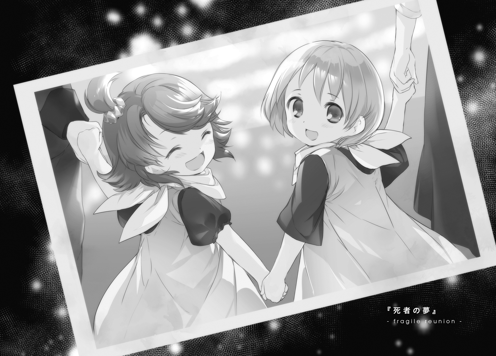
自分はまどろみの中にいるのだと、その少女は気づいていた。
最初から、味方は誰もいなかった。
なにせ、家長たる母が言い出したことなのだ。そして、家長の言葉に口を挟むような者は、あの時点のあの家には、一人もいなかった。父も、祖父母も、兄や姉たちも、同じ笑みを浮かべて頷いた。
よかったな、これでお前も幸せになれるな、と、口をそろえて繰り返した。
政略結婚の話である。
その時の少女は七歳で、相手の少年は十歳だという話だった。
少女の手足には、獣のような深い毛が生えていた。頭頂には小さな三角形の耳が生え、目立たなかったが頰からは六本の髭が飛び出していた。
いわゆる猫徴族であれば、こんな中途半端な毛の生やし方はしない。顔つきだって、鼻が低く瞳が小さく、つまり獣人のそれからは程遠かった。しかしそれでも、わずかなりと〝徴〟を抱えたその体は、完全な徴無しのそれからはかけ離れていた。
だから少女は、生まれたその時から、独りぼっちだった。
歴史ある徴無しの家に生まれながら、徴無しでも獣人でもない半端な何者かとして、愛情らしい愛情をまったく知らないまま、七つのその年まで大きくなった。
そこに来て飛び込んできたのが、問題の、政略結婚の話である。
幼かった少女は、それがいったいどういうものなのかを知らなかった。詳しい説明をしてくれる者も、周囲にいなかった。だから、どうやら知らない誰かと会わされて、しばらく一緒にいさせられるらしいとだけ解釈した。
怖かった。
嫌だった。
どうせ、自分のこの頭を見れば、誰だって嫌な顔をするのだ。機嫌によっては拳や足を出してくるのだ。そんな自分は、薄暗がりに一人で小さくなっているべきだ。それが一番似合いだし、何より、そうしていれば誰も不機嫌にしなくてすむわけだし。なのにどうして、明るいところに引きずり出そうとするのか。誰かの傍に置こうとするのか。
そんなもやもやを心中に抱えたまま──言葉にするだけの勇気を持てずに──少女は見合いの場所へと向かった。
そして、一人の少年と出会った。
細かい経緯は省いて、結果を言おう。
少女はあっさりと、その少年に堕ちた。
その見合いの場において、当の少年は実に「普通」に振る舞った。徴無しらしくない徴無し、あるいは獣人らしくもない獣人である少女の姿を見ても、嫌悪も軽蔑も、それどころか好奇の目すら見せずに、ただ年相応の子供に接するような態度をとってみせた。
それで、充分だった。
あるいは、それこそが、必要だった。
生まれて初めて、少女は一人の少女として、泣いたり笑ったり甘えたり怒ったりすることができた。それがとても幸せな気持ちになれることなのだと、知ることができた。
仲良くなりましたと報告したら、母は喜んでくれた。「やはり堕鬼の連中は犬猫をあやすのがうまい」と、実に嬉しそうに笑っていた。意味はよくわからないけど、こんな自分のことで喜んでもらえたならよかったなと少女は思った。
結婚というのは、ずっとずっと一緒にいるという約束だと聞いた。
婚約というのは、ずっと一緒にいる約束をする約束だと聞いた。詳しい意味はなんだかややこしくて、幼かった少女にはよくわからなかった。
少女の家は体の良い厄介払いを望んでいたし、少年の家は少女の家とのつながりを欲していた。両家の利害が、少女の頭の上で一致していた。
そんな大人の事情は、子供にとってはそれほど重要ではなかった。
大切なのは、大好きな少年と、週に一度は会うことができるようになったこと。
家族が（感情はどうあれ）それを認め、さらには後押しすらしてくれたこと。
少年は優しくて。少女がどんなにワガママを言っても、笑って受け入れてくれて。
少年は物知りで。会うたびに、少女の知らなかったいろいろなことを教えてくれた。
そんな彼とずっと一緒にいられるというなら、もしかして自分はものすごい幸せ者なんじゃないかと、思ったりもしてしまったりした。
夜しかなかった世界に、光が差した。
それは、少女にとって、とても楽しい毎日だった。
繰り返す。自分はまどろみの中にいるのだと、その少女は気づいていた。
いま彼女の周りに咲き乱れる花も、陽を照り返す湖も、白く眩しいガゼボも。すべて既にこの世界にはないはずのものだ。その景色をこうしてまた見ることができているという時点で、ここは夢の中でしかありえない。
案の定。そのガゼボの屋根の下に、二人の子供の姿があった。
一人は、幼かったころの少女自身。年は、八つくらいだろうか。フードつきの長袖カーディガンを脱いで、素顔と両腕を太陽の下に晒している。まるで猫徴族のような──けれど決して猫徴族のものではない、耳と両腕の毛。
もう一人は、銀色の髪の少年。少女自身より三つ年上だったから、このころは十一歳。実に篤実そうな、くりんと丸い紫色の瞳の持ち主──なのだが、当人いわく、自分は堕鬼種であり、堕鬼種は例外なくタチの悪い噓つきなので、気をつけたほうがいいとのこと。
（──そう言われた時、ワタシ、『ウソだぁ』って笑ったんでしたっけ）
あの時の少年の顔を、よく覚えている。
堕鬼としてのプライドを傷つけられて悔しがっているような、それでいて同時に、個人として信用されていることを喜んでもいるような、不思議で複雑な表情。今にして思えば、そうやって感情を露骨に表に出してしまっていた時点で、やっぱり彼は噓つきとして失格だったのではないだろうか。
少し離れたところで立ち止まり、昔の自分たちの横顔を見つめる。
二人は、石造りの机を挟んで、向かい合って座っていた。その視線は机の上、様々な駒の並べられた遊戯盤に落とされていた。
（ああ──懐かしい、です）
あれは、古代の戦争を模したゲーム。
彼が、得意だと言っていたものだ。
少しでも長く一緒に時間を過ごしたかったから、そのゲームのルールを教えてもらった。喜んでほしくて、一生懸命勉強した。最初はゼロに近かった勝率が少しずつ増えて、五割に近づき、そして気がついた時には、少年の腕前を追い越してしまっていた。
めちゃくちゃ調子がよかった日など、少年に手も足も出させず一方的に圧勝してしまったことすらある。あの時には一度大喜びして、その直後にとても怖くなった。慌てて少年に謝った。嫌いにならないで欲しいと懇願した。
少年は、少し意表を突かれたような顔になってから、笑った。
そしていわく、こんなに強くなるくらいこのゲームのことを好きになってくれたなら、教えた甲斐があった。もちろん自分にも意地があるから、このまま負けっぱなしでいるつもりはない。もっと強くなって、すぐにやり返してやるから覚えてろよ、と──
──結局、彼は、噓つきの堕鬼だった。
彼はあの後、一度もやり返してなどこなかった。
そんな時間はなかった。あれからそれほどの間を開けず、後にエルピス事変と呼ばれるあの事件の日が来た。〈広く包み込む五番目の獣〉という名の災厄が、エルピス集商国ごと、彼とその未来を根こそぎ吞み込んだのだから。
生きていたころの少年が、笑っている。
幼き日の少女も、笑っている。
そして、今の自分は、その二人に近づけない。
離れた場所に立ち止まり、それ以上は足を動かせずにいる。
あれは、綺麗な思い出だから。
ずっと、綺麗なままであってほしい記憶だから。だから触れてはいけない。近づいてはいけない。関わってはいけない。汚してはいけない。
少年が、ふと、何かに気づいたように顔を上げた。
きょろきょろと辺りを見回してから、こちらに顔を向けた。
不思議そうな顔になって。
口を開いて。
少女の名前を呼──
──傷の痛みに、身をよじる。
マルゴ・メディシスは、弾かれたように目を開く。
まぶたの裏の光が消えて、現実の薄闇が瞳に飛び込んでくる。
「......ここは」
無意識の自分のつぶやきが、急速に意識を覚醒させた。石と金属板に包まれた、ライエル市独特の建物の一室。万が一の事態に備えて、個人的な避難場所として目をつけておいた場所のひとつだ。
あの後、かろうじて塔の中から脱出した。追ってくる女性兵士たちの追撃をかわし、狭い路地に逃げ込み縫うようにして走り、この場所に逃げ込んで、意識を失った。
ひきつるような脇腹の痛み。顔をしかめながら、身を起こす。
「まだ......生きてます......？」
傷の具合を確かめる。あまりうまい手当てができたわけではなかったが、少なくとも血は止まっている。今すぐ命に係わるというようなことはなさそうだ。
窓際に近づき、こっそりと外の様子を窺ってみる。もともと人通りが極端に少ない街並みであるため分かりにくいが、見える範囲の景色は平和なものだ。少なくとも、見える範囲には、あの忌まわしい黒色の姿はない。
「確かに、『小瓶』がひとつ、割れてたはずなのに......」
あの硝子玉、そしてその中に封じられている〈十一番目の獣〉は、一度解き放たれれば浮遊島ひとつをまるまる吞み込むまで決して止まらない、究極の災厄だ。その暴虐を止める手段など、何ひとつとして、ありはしない。そのはずだ。
「護翼軍が、何かの手を打った......？」
考えにくいことではあるが、他の可能性も思い浮かばない。
心の奥底に、炎のような苛立ちがちろりと揺れる。
護翼軍が、〈十一番目の獣〉を止めることができる。そんな話は聞いたこともなかったし、これまで考えもしなかった。
当然だ。護翼軍は、あの日、39番浮遊島を、守れなかったのだから。
救うべきものを、救われるべき者たちを、救わなかった。
あれは、どうしようもなかったのだと思っていた。そもそも〈獣〉の攻撃を退けることなど不可能なのだから、護翼軍だろうと誰だろうと、あの事態を防ぐことなどできるはずがなかったのだと。
けれど、そうではなかったのかもしれない。
あの時既に、護翼軍は〈十一番目の獣〉に抗う手段を持っていたのかもしれない。その上で、浮遊島をひとつ見捨てていたのかもしれない。その可能性を考えるだけで、怒りにも似た熱が、胸の奥を焦がし始める。
──止めよう。こんなもの、ただの八つ当たりだ。
嘆息ひとつ、窓辺を離れる。
テーブルの上に置きっぱなしにしていた仮面を、手に取る。
準ディドルナチカメルソル奉謝祭の時期になると流行する、白い木製の仮面。生と死とが交わる季節に、生者と死者が触れあうための小道具。
この仮面をつけた者は、何者でもない誰かになる。生者でもなく死者でもない、そんな狭間に立つナニモノカになれば、逆に、ナニモノとだって出会えるはずだ──と、そんな伝説のあるしろものだ。
もともとは、市内への潜伏が楽になるな、程度の気持ちで採用した小道具だった。けれど今は、その屁理屈じみた伝説とこの仮面に、少しだけ感謝の気持ちを抱いている。
先ほどの夢を、思い出す。
自分は確かに、会いたかった相手に、会えたのだ。あの日死んでしまった許嫁の、大好きだった少年の、笑顔をもう一度だけ見られたのだ。
「......ありがとう、フェオドール」
許嫁の名前をぽつりと呟いて、仮面をかぶる。
マントを肩にかけ、部屋を出る。
自分はまだ生きている。生きている限り、やるべきことはある。
「夢の中だったけど......もう一度会えて、嬉しかった、です」
あとがきかもしれない／きっとあとがきだ
終わりかけた世界の片隅で。終わりを体験した噓つき武官の少年は、ささやかな終わりを受け入れようとしている少女兵器たちに出会った──
そんなこんなで展開しています、当シリーズ。『終末なにしてますか？ もう一度だけ、会えますか？』の第二エピソードをお届けします。
なおここを読まれている方には今さらな話かとは思われますがいちおう宣伝を付け加えておきますと、このシリーズには前日譚のようなものにあたる『終末なにしてますか？ 忙しいですか？ 救ってもらっていいですか？』というシリーズが存在しています。角川スニーカー文庫さんから全五巻で発売中。未読だけど今このあとがきを読んでいるぜという方がもしいましたら、今すぐ本屋にダッシュすることを強く強くお勧めします。
あとがき開始早々、いきなり宣伝全開ですみません。
そしてもうひとつすみません、実はもう少し宣伝が続きます。というかここからが宣伝の本番です。
まず、宣伝のひとつめ。
一月ほど前からTwitterなどで告知されていましたが、『月刊コミックアライブ』誌にて、前シリーズ『終末なにしてますか？ 忙しいですか？ 救ってもらっていいですか？』のコミカライズ連載が始まります。
というか、この本の発売日のちょっとだけ前に、始まっているはずです。
作画は、せうかなめ先生。
小説の中では（当たり前ですが）文字を通してでしか表現されなかったクトリやヴィレムの色々な表情が見られます。必見です。個人的には、ナイグラートさんのいろんな表情が楽しみで楽しみで。
そして、もうひとつ。こちらは最新情報。
前シリーズ『終末なにして......あー、これ、何度も繰り返し書くにはさすがに長すぎますね、ここから『終末な（略）』と略します......のアニメ化企画が、現在進行中です。
ええ、そうです。動いたり喋ったりする、あのアニメです。
あのかしましいちびっこたちが、動いたり喋ったりするみたいなんです。
現状ではまだ「進行中」以上の詳しい内容については公開できませんので、詳しいお話はまた後日に改めて。
......以上。ふたつ続けての、メディアミックス情報でした。
なんというかですね、不思議な気持ちです。
私は小説を書く際、「小説という媒体だからこそ使える表現方法」みたいなものをそれなりに意識しています。それは言いかえれば、「他のメディアでは再現しづらい表現方法」ということになります。だってほら、小説以外ででも問題なくできるような演出なら、わざわざ小説でやったり読んだりする意味が薄くなりますし。読んだ人に小説ならではの臨場感とかそういうのを少しでも感じてもらえれば、物語に小説というカタチを与えて送り出した者として嬉しかったりするわけですよ、やっぱり。
そういう物語が、他のメディアの作品として紡ぎ直される。
それは、もともと小説形式に最適化されていた物語が、別の魅力を引き出す形で再構成されるということとほぼイコールです。私の知らない『終末な（略）』がこれから生まれて、しかもそれをいち読者・視聴者の立場から楽しむことができるということです。
やばいくらい嬉しくて、そして楽しみです。そしてここまでシリーズにお付き合い頂いてきた方々にも、その喜びを共有して頂きたいなーなどと思っている次第。
そしてもちろん、本家小説シリーズのほうも、負けずに引き続き進行していきます。
薄氷の上で過ごす日常は、少しずつゆっくりと終わりへと近づいていく。引き返すことも振り返ることも許されない道の途中、足を休めていた少年は、再び顔を上げて前へと進み始める。たとえその道が、すべてを吞み込む奈落に通じていたとしても。会いたかった者たちの姿は、自分が振り切ってきた過去の中にしかなかったとしても。
そんな感じでお送りすることになるような気がしなくもない次巻、そう遠くないうちにお届けしたいなーと思っています。
それではまた、いずれかの浮遊島の空の下でお会いできることを願って。
二〇一六年 春
枯野 瑛
電子書籍版付録
コミック版 終末なにしてますか？ 忙しいですか？ 救ってもらっていいですか？
コミックアライブ２０１６年８月号 プレ掲載話
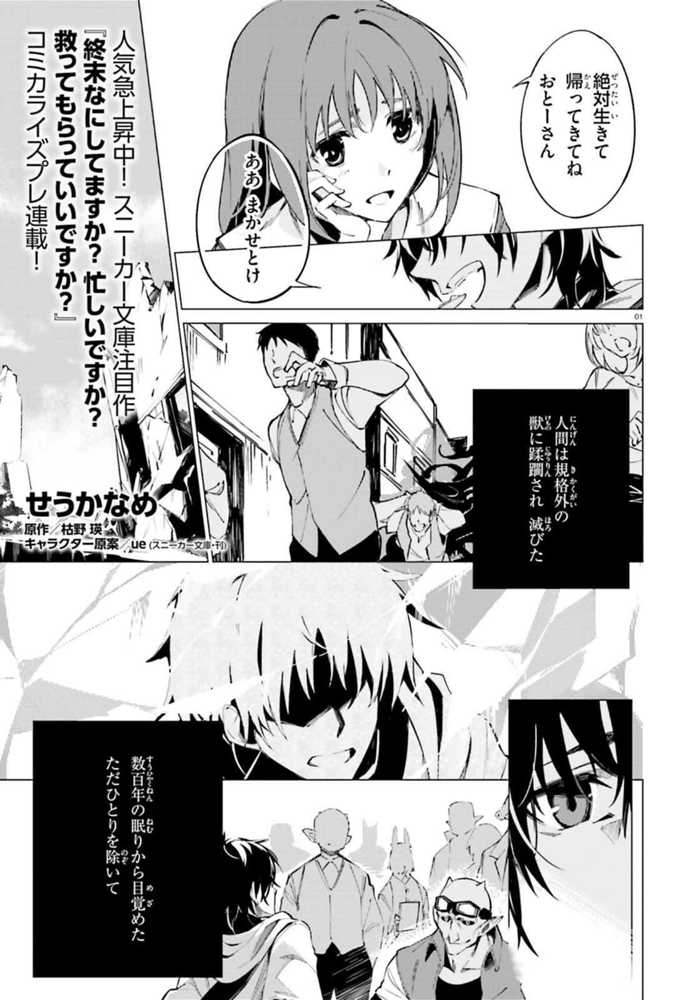
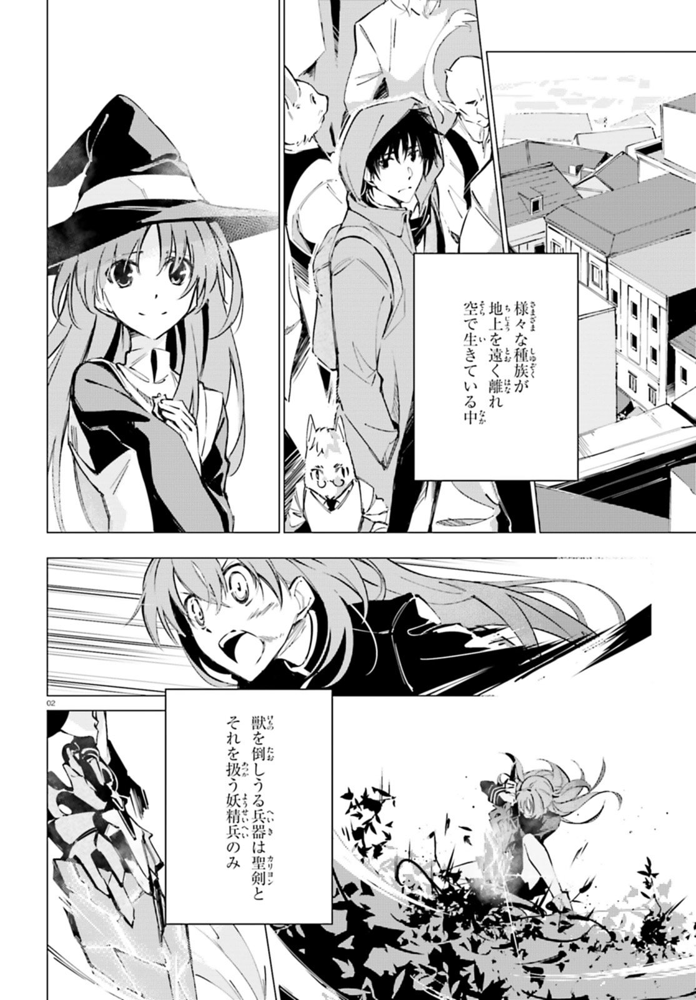
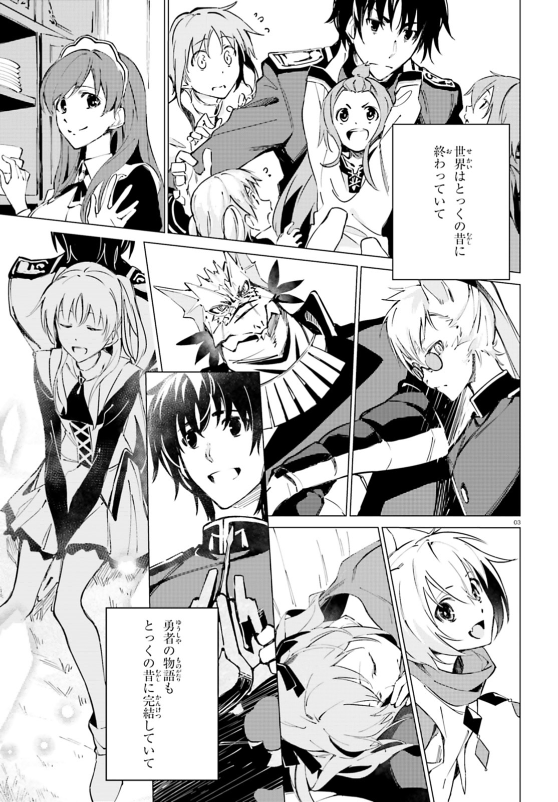
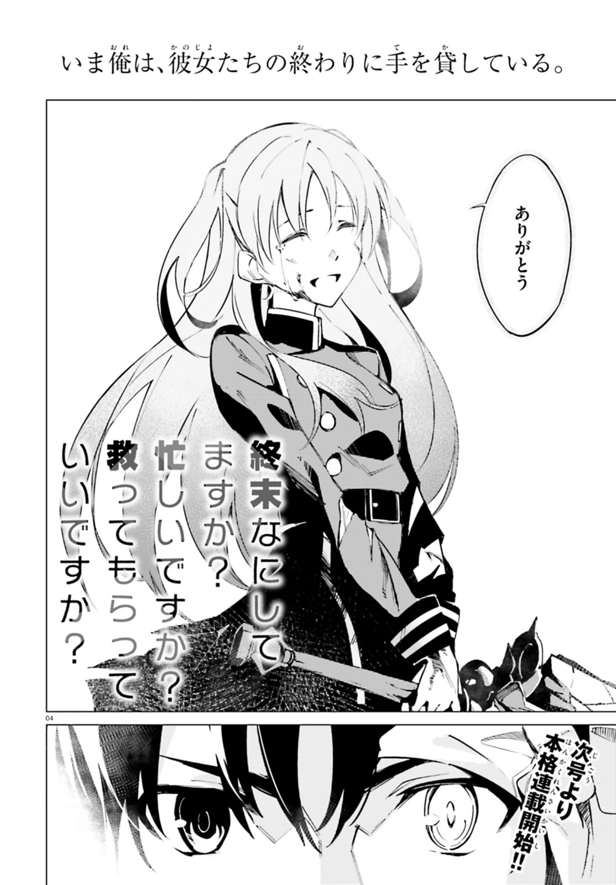
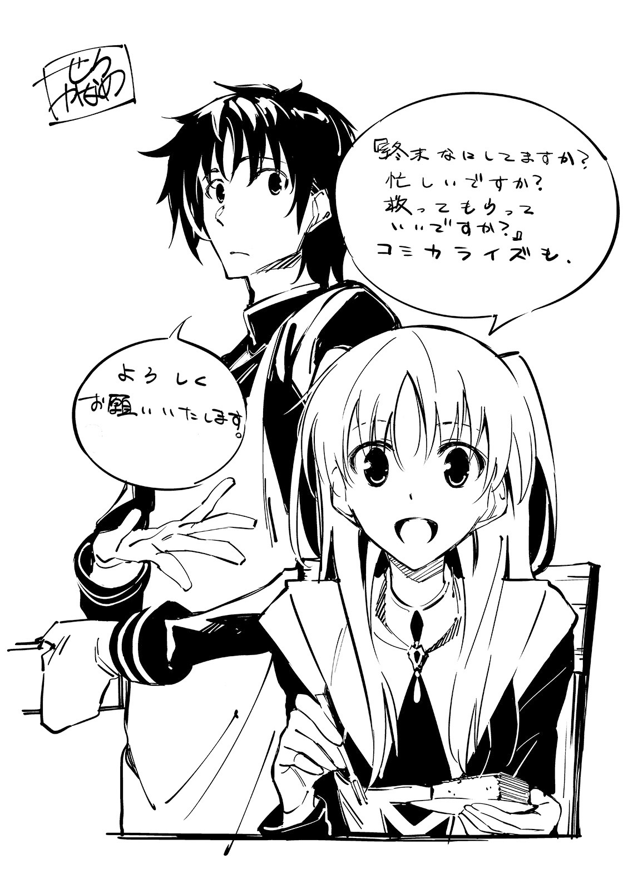
カバー・口絵・本文イラスト／ue
カバーデザイン／百足屋ユウコ＋たにごめかぶと（ムシカゴグラフィクス）
終末なにしてますか？ もう一度だけ、会えますか？#02
枯野瑛
平成28年7月1日 発行
(C)2016 Akira Kareno, ue
本電子書籍は下記にもとづいて制作しました
角川スニーカー文庫『終末なにしてますか？ もう一度だけ、会えますか？#02』
平成28年7月1日初版発行
発行者 三坂泰二
発 行 株式会社ＫＡＤＯＫＡＷＡ
〒102-8177 東京都千代田区富士見2-13-3
電話 0570-002-301（カスタマーサポート・ナビダイヤル）
受付時間 9:00～17:00（土日 祝日 年末年始を除く）
http://www.kadokawa.co.jp/